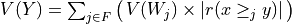
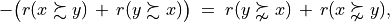

3. Pearls of bipolar-valued epistemic logic
- Author:
Raymond Bisdorff, Emeritus Professor of Applied Mathematics and Computer Science, University of Luxembourg
- Url:
- Version:
Python 3.13 (release: 3.13.7)
- PDF version:
- Copyright:
R. Bisdorff 2013-2025
- New:
In this part of the Digraph3 documentation, we provide an insight in computational enhancements one may get when working in a bipolar-valued epistemic logic framework, like - easily coping with missing data and uncertain criterion significance weights, - computing valued ordinal correlations between bipolar-valued outranking digraphs, - computing digraph kernels and solving bipolar-valued kernel equation systems, - testing for stability and confidence of outranking statements when facing uncertain performance criteria significance weights or decision objectives’ importance weights and, - applying bipolar-valued base 3 Bachet numbers for ranking multicriteria incommensurable performance records.
Contents
- Enhancing the outranking based MCDA approach
- Enhancing social choice procedures
- Theoretical and computational advancements
3.1. Enhancing the outranking based MCDA approach
“The goal of our research was to design a resolution method [..] that is easy to put into practice, that requires as few and reliable hypotheses as possible, and that meets the needs [of the decision maker].”
—Benayoun R, Roy B, Sussmann B [13]
3.1.1. On confident outrankings with uncertain criteria significance weights
When modelling preferences following the outranking approach, the signs of the majority margins do sharply distribute validation and invalidation of pairwise outranking situations. How can we be confident in the resulting outranking digraph, when we acknowledge the usual imprecise knowledge of criteria significance weights coupled with small majority margins?
To answer this question, one usually requires qualified majority margins for confirming outranking situations. But how to choose such a qualifying majority level: two third, three fourth of the significance weights ?
In this tutorial we propose to link the qualifying significance majority with a required alpha%-confidence level. We model therefore the significance weights as random variables following more or less widespread distributions around an average significance value that corresponds to the given deterministic weight. As the bipolar-valued random credibility of an outranking statement hence results from the simple sum of positive or negative independent random variables, we may apply the Central Limit Theorem (CLT) for computing the bipolar likelihood that the expected majority margin will indeed be positive, respectively negative.
3.1.1.1. Modelling uncertain criteria significance weights
Let us consider the significance weights of a family F of m criteria to be independent random variables Wj, distributing the potential significance weights of each criterion j = 1, …, m around a mean value E(Wj) with variance V(Wj).
Choosing a specific stochastic model of uncertainty is usually application specific. In the limited scope of this tutorial, we will illustrate the consequence of this design decision on the resulting outranking modelling with four slightly different models for taking into account the uncertainty with which we know the numerical significance weights: uniform, triangular, and two models of Beta laws, one more widespread and, the other, more concentrated.
When considering, for instance, that the potential range of a significance weight is distributed between 0 and two times its mean value, we obtain the following random variates:
A continuous uniform distribution on the range 0 to 2E(Wj). Thus Wj ~ U(0, 2E(Wj)) and V(Wj) = 1/3(E(Wj))^2;
A symmetric beta distribution with, for instance, parameters alpha = 2 and beta = 2. Thus, Wi ~ Beta(2,2) * 2E(Wj) and V(Wj) = 1/5(E(Wj))^2.
A symmetric triangular distribution on the same range with mode E(Wj). Thus Wj ~ Tr(0, 2E(Wj), E(Wj)) with V(Wj) = 1/6(E(Wj))^2;
A narrower beta distribution with for instance parameters alpha = 4 and beta = 4. Thus Wj ~ Beta(4,4) * 2E(Wj) , V(Wj) = 1/9(E(Wj))^2.
Fig. 3.1 Four models of uncertain significance weights
It is worthwhile noticing that these four uncertainty models all admit the same expected value, E(Wj), however, with a respective variance which goes decreasing from 1/3, to 1/9 of the square of E(W) (see Fig. 3.1).
3.1.1.2. Bipolar-valued likelihood of ‘’at least as good as “ situations
Let A = {x, y, z,…} be a finite set of n potential decision actions, evaluated on F = {1,…, m}, a finite and coherent family of m performance criteria. On each criterion j in F, the decision actions are evaluated on a real performance scale [0; Mj ], supporting an upper-closed indifference threshold indj and a lower-closed preference threshold prj such that 0 <= indj < prj <= Mj. The marginal performance of object x on criterion j is denoted xj. Each criterion j is thus characterising a marginal double threshold order on A (see Fig. 3.2):
- Semantics of the marginal bipolar-valued characteristic function:
+1 signifies x is performing at least as good as y on criterion j,
-1 signifies that x is not performing at least as good as y on criterion j,
0 signifies that it is unclear whether, on criterion j, x is performing at least as good as y.

Fig. 3.2 Bipolar-valued outranking characteristic function
Each criterion j in F contributes the random significance Wj of his ‘at least as good as’ characteristic to the global characteristic in the following way:
Thus, becomes a simple sum of positive or negative independent random variables with known means and variances where signifies x is globally performing at least as good as y, signifies that x is not globally performing at least as good as y, and signifies that it is unclear whether x is globally performing at least as good as y.
From the Central Limit Theorem (CLT), we know that such a sum of random variables leads, with m getting large, to a Gaussian distribution Y with
, and
.
And the likelihood of validation, respectively invalidation of an ‘at least as good as’ situation, denoted , may hence be assessed by the probability P(Y>0) = 1.0 - P(Y<=0) that Y takes a positive, resp. P(Y<0) takes a negative value. In the bipolar-valued case here, we can judiciously make usage of the standard Gaussian error function , i.e. the bipolar 2P(Z) - 1.0 version of the standard Gaussian P(Z) probability distribution function:

The range of the bipolar-valued hence becomes [-1.0;+1.0], and , i.e. a negative likelihood represents the likelihood of the correspondent negated ‘at least as good as’ situation. A likelihood of +1.0 (resp. -1.0) means the corresponding preferential situation appears certainly validated (resp. invalidated).
Example
Let x and y be evaluated wrt 7 equisignificant criteria; Four criteria positively support that x is as least as good performing than y and three criteria support that x is not at least as good performing than y. Suppose E(Wj) = w for j = 1,…,7 and Wj ~ Tr(0, 2w, w) for j = 1,…7. The expected value of the global ‘at least as good as’ characteristic value becomes: with a variance .
If w = 1, and . By the CLT, the bipolar likelihood of the at least as good performing situation becomes: , which corresponds to a probability of (0.66 + 1.0)/2 = 83% of being supported by a positive significance majority of criteria.
A Monte Carlo simulation with 10 000 runs empirically confirms the effective convergence to a Gaussian (see Fig. 3.3 realised with gretl [4] ).

Fig. 3.3 Distribution of 10 000 random outranking characteristic values
Indeed, , with an empirical probability of observing a negative majority margin of about 17%.
3.1.1.3. Confidence level of outranking situations
Now, following the classical outranking approach (see [BIS-2013p] ), we may say, from an epistemic perspective, that decision action x outranks decision action y at confidence level alpha %, when
an expected majority of criteria validates, at confidence level alpha % or higher, a global ‘at least as good as’ situation between x and y, and
no considerably less performing is observed on a discordant criterion.
Dually, decision action x does not outrank decision action y at confidence level alpha %, when
an expected majority of criteria at confidence level alpha % or higher, invalidates a global ‘at least as good as’ situation between x and y, and
no considerably better performing situation is observed on a concordant criterion.
Time for a coded example
Let us consider the following random performance tableau.
1>>> from randomPerfTabs import RandomPerformanceTableau
2>>> t = RandomPerformanceTableau(
3... numberOfActions=7,
4... numberOfCriteria=7,seed=100)
5
6>>> t.showPerformanceTableau(Transposed=True)
7 *---- performance tableau -----*
8 criteria | weights | 'a1' 'a2' 'a3' 'a4' 'a5' 'a6' 'a7'
9 ---------|------------------------------------------------------------
10 'g1' | 1 | 15.17 44.51 57.87 58.00 24.22 29.10 96.58
11 'g2' | 1 | 82.29 43.90 NA 35.84 29.12 34.79 62.22
12 'g3' | 1 | 44.23 19.10 27.73 41.46 22.41 21.52 56.90
13 'g4' | 1 | 46.37 16.22 21.53 51.16 77.01 39.35 32.06
14 'g5' | 1 | 47.67 14.81 79.70 67.48 NA 90.72 80.16
15 'g6' | 1 | 69.62 45.49 22.03 33.83 31.83 NA 48.80
16 'g7' | 1 | 82.88 41.66 12.82 21.92 75.74 15.45 6.05
For the corresponding confident outranking digraph, we require a confidence level of alpha = 90%. The ConfidentBipolarOutrankingDigraph class provides such a construction.
1>>> from outrankingDigraphs import\
2... ConfidentBipolarOutrankingDigraph
3
4>>> g90 = ConfidentBipolarOutrankingDigraph(t,confidence=90)
5>>> print(g90)
6 *------- Object instance description ------*
7 Instance class : ConfidentBipolarOutrankingDigraph
8 Instance name : rel_randomperftab_CLT
9 # Actions : 7
10 # Criteria : 7
11 Size : 15
12 Uncertainty model : triangular(a=0,b=2w)
13 Likelihood domain : [-1.0;+1.0]
14 Confidence level : 0.80 (90.0%)
15 Confident credibility: > abs(0.143) (57.1%)
16 Determinateness (%) : 62.07
17 Valuation domain : [-1.00;1.00]
18 Attributes : ['name', 'bipolarConfidenceLevel',
19 'distribution', 'betaParameter', 'actions',
20 'order', 'valuationdomain', 'criteria',
21 'evaluation', 'concordanceRelation',
22 'vetos', 'negativeVetos',
23 'largePerformanceDifferencesCount',
24 'likelihoods', 'confidenceCutLevel',
25 'relation', 'gamma', 'notGamma']
The resulting 90% confident expected outranking relation is shown below.
1>>> g90.showRelationTable(LikelihoodDenotation=True)
2 * ---- Outranking Relation Table -----
3 r/(lh) | 'a1' 'a2' 'a3' 'a4' 'a5' 'a6' 'a7'
4 -------|------------------------------------------------------------
5 'a1' | +0.00 +0.71 +0.29 +0.29 +0.29 +0.29 +0.00
6 | ( - ) (+1.00) (+0.95) (+0.95) (+0.95) (+0.95) (+0.65)
7 'a2' | -0.71 +0.00 -0.29 +0.00 +0.00 +0.29 -0.57
8 |(-1.00) ( - ) (-0.95) (-0.65) (+0.73) (+0.95) (-1.00)
9 'a3' | -0.29 +0.29 +0.00 -0.29 +0.00 +0.00 -0.29
10 |(-0.95) (+0.95) ( - ) (-0.95) (-0.73) (-0.00) (-0.95)
11 'a4' | +0.00 +0.00 +0.57 +0.00 +0.29 +0.57 -0.43
12 |(-0.00) (+0.65) (+1.00) ( - ) (+0.95) (+1.00) (-0.99)
13 'a5' | -0.29 +0.00 +0.00 +0.00 +0.00 +0.29 -0.29
14 |(-0.95) (-0.00) (+0.73) (-0.00) ( - ) (+0.99) (-0.95)
15 'a6' | -0.29 +0.00 +0.00 -0.29 +0.00 +0.00 +0.00
16 |(-0.95) (-0.00) (+0.73) (-0.95) (+0.73) ( - ) (-0.00)
17 'a7' | +0.00 +0.71 +0.57 +0.43 +0.29 +0.00 +0.00
18 |(-0.65) (+1.00) (+1.00) (+0.99) (+0.95) (-0.00) ( - )
19 Valuation domain : [-1.000; +1.000]
20 Uncertainty model : triangular(a=2.0,b=2.0)
21 Likelihood domain : [-1.0;+1.0]
22 Confidence level : 0.80 (90.0%)
23 Confident credibility : > abs(0.14) (57.1%)
24 Determinateness : 0.24 (62.1%)
The (lh) figures, indicated in the table above, correspond to bipolar likelihoods and the required bipolar confidence level equals (0.90+1.0)/2 = 0.80 (see Line 22 above). Action ‘a1’ thus confidently outranks all other actions, except ‘a7’ where the actual likelihood (+0.65) is lower than the required one (0.80) and we furthermore observe a considerable counter-performance on criterion ‘g1’.
Notice also the lack of confidence in the outranking situations we observe between action ‘a2’ and actions ‘a4’ and ‘a5’. In the deterministic case we would have and . All outranking situations with a characteristic value lower or equal to abs(0.143), i.e. a majority support of 1.143/2 = 57.1% and less, appear indeed to be not confident at level 90% (see Line 23 above).
We may draw the corresponding strict 90%-confident outranking digraph, oriented by its initial and terminal strict prekernels (see Fig. 3.4).
1>>> gcd90 = ~ (-g90)
2>>> gcd90.showPreKernels()
3 *--- Computing preKernels ---*
4 Dominant preKernels :
5 ['a1', 'a7']
6 independence : 0.0
7 dominance : 0.2857
8 absorbency : -0.7143
9 covering : 0.800
10 Absorbent preKernels :
11 ['a2', 'a5', 'a6']
12 independence : 0.0
13 dominance : -0.2857
14 absorbency : 0.2857
15 covered : 0.583
16>>> gcd90.exportGraphViz(fileName='confidentOutranking',
17... firstChoice=['a1', 'a7'],lastChoice=['a2', 'a5', 'a6'])
18
19 *---- exporting a dot file for GraphViz tools ---------*
20 Exporting to confidentOutranking.dot
21 dot -Grankdir=BT -Tpng confidentOutranking.dot -o confidentOutranking.png
Fig. 3.4 Strict 90%-confident outranking digraph oriented by its prekernels
Now, what becomes this 90%-confident outranking digraph when we require a stronger confidence level of, say 99% ?
1>>> g99 = ConfidentBipolarOutrankingDigraph(t,confidence=99)
2>>> g99.showRelationTable()
3 * ---- Outranking Relation Table -----
4 r/(lh) | 'a1' 'a2' 'a3' 'a4' 'a5' 'a6' 'a7'
5 -------|------------------------------------------------------------
6 'a1' | +0.00 +0.71 +0.00 +0.00 +0.00 +0.00 +0.00
7 | ( - ) (+1.00) (+0.95) (+0.95) (+0.95) (+0.95) (+0.65)
8 'a2' | -0.71 +0.00 +0.00 +0.00 +0.00 +0.00 -0.57
9 | (-1.00) ( - ) (-0.95) (-0.65) (+0.73) (+0.95) (-1.00)
10 'a3' | +0.00 +0.00 +0.00 +0.00 +0.00 +0.00 +0.00
11 | (-0.95) (+0.95) ( - ) (-0.95) (-0.73) (-0.00) (-0.95)
12 'a4' | +0.00 +0.00 +0.57 +0.00 +0.00 +0.57 -0.43
13 | (-0.00) (+0.65) (+1.00) ( - ) (+0.95) (+1.00) (-0.99)
14 'a5' | +0.00 +0.00 +0.00 +0.00 +0.00 +0.29 +0.00
15 | (-0.95) (-0.00) (+0.73) (-0.00) ( - ) (+0.99) (-0.95)
16 'a6' | +0.00 +0.00 +0.00 +0.00 +0.00 +0.00 +0.00
17 | (-0.95) (-0.00) (+0.73) (-0.95) (+0.73) ( - ) (-0.00)
18 'a7' | +0.00 +0.71 +0.57 +0.43 +0.00 +0.00 +0.00
19 | (-0.65) (+1.00) (+1.00) (+0.99) (+0.95) (-0.00) ( - )
20 Valuation domain : [-1.000; +1.000]
21 Uncertainty model : triangular(a=2.0,b=2.0)
22 Likelihood domain : [-1.0;+1.0]
23 Confidence level : 0.98 (99.0%)
24 Confident credibility : > abs(0.286) (64.3%)
25 Determinateness : 0.13 (56.6%)
At 99% confidence, the minimal required significance majority support amounts to 64.3% (see Line 24 above). As a result, most outranking situations don’t get anymore validated, like the outranking situations between action ‘a1’ and actions ‘a3’, ‘a4’, ‘a5’ and ‘a6’ (see Line 5 above). The overall epistemic determination of the digraph consequently drops from 62.1% to 56.6% (see Line 25).
Finally, what becomes the previous 90%-confident outranking digraph if the uncertainty concerning the criteria significance weights is modelled with a larger variance, like uniform variates (see Line 2 below).
1>>> gu90 = ConfidentBipolarOutrankingDigraph(t,
2... confidence=90,distribution='uniform')
3
4>>> gu90.showRelationTable()
5 * ---- Outranking Relation Table -----
6 r/(lh) | 'a1' 'a2' 'a3' 'a4' 'a5' 'a6' 'a7'
7 -------|------------------------------------------------------------
8 'a1' | +0.00 +0.71 +0.29 +0.29 +0.29 +0.29 +0.00
9 | ( - ) (+1.00) (+0.84) (+0.84) (+0.84) (+0.84) (+0.49)
10 'a2' | -0.71 +0.00 -0.29 +0.00 +0.00 +0.29 -0.57
11 | (-1.00) ( - ) (-0.84) (-0.49) (+0.56) (+0.84) (-1.00)
12 'a3' | -0.29 +0.29 +0.00 -0.29 +0.00 +0.00 -0.29
13 | (-0.84) (+0.84) ( - ) (-0.84) (-0.56) (-0.00) (-0.84)
14 'a4' | +0.00 +0.00 +0.57 +0.00 +0.29 +0.57 -0.43
15 | (-0.00) (+0.49) (+1.00) ( - ) (+0.84) (+1.00) (-0.95)
16 'a5' | -0.29 +0.00 +0.00 +0.00 +0.00 +0.29 -0.29
17 | (-0.84) (-0.00) (+0.56) (-0.00) ( - ) (+0.92) (-0.84)
18 'a6' | -0.29 +0.00 +0.00 -0.29 +0.00 +0.00 +0.00
19 | (-0.84) (-0.00) (+0.56) (-0.84) (+0.56) ( - ) (-0.00)
20 'a7' | +0.00 +0.71 +0.57 +0.43 +0.29 +0.00 +0.00
21 | (-0.49) (+1.00) (+1.00) (+0.95) (+0.84) (-0.00) ( - )
22 Valuation domain : [-1.000; +1.000]
23 Uncertainty model : uniform(a=2.0,b=2.0)
24 Likelihood domain : [-1.0;+1.0]
25 Confidence level : 0.80 (90.0%)
26 Confident majority : 0.14 (57.1%)
27 Determinateness : 0.24 (62.1%)
Despite lower likelihood values (see the g90 relation table above), we keep the same confident majority level of 57.1% (see Line 25 above) and, hence, also the same 90%-confident outranking digraph.
Note
For concluding, it is worthwhile noticing again that it is in fact the neutral value of our bipolar-valued epistemic logic that allows us to easily handle alpha% confidence or not of outranking situations when confronted with uncertain criteria significance weights. Remarkable furthermore is the usage, the standard Gaussian error function (erf) provides by delivering signed likelihood values immediately concerning either a positive relational statement, or when negative, its negated version.
Back to Content Table
3.1.2. On stable outrankings with ordinal criteria significance weights
3.1.2.1. Cardinal or ordinal criteria significance weights
The required cardinal significance weights of the performance criteria represent the Achilles’ heel of the outranking approach. Rarely will indeed a decision maker be cognitively competent for suggesting precise decimal-valued criteria significance weights. More often, the decision problem will involve more or less equally important decision objectives with more or less equi-significant criteria. A random example of such a decision problem may be generated with the Random3ObjectivesPerformanceTableau class.
1>>> from randomPerfTabs import \
2... Random3ObjectivesPerformanceTableau
3
4>>> t = Random3ObjectivesPerformanceTableau(
5... numberOfActions=7,
6... numberOfCriteria=9,seed=102)
7
8>>> t
9 *------- PerformanceTableau instance description ------*
10 Instance class : Random3ObjectivesPerformanceTableau
11 Seed : 102
12 Instance name : random3ObjectivesPerfTab
13 # Actions : 7
14 # Objectives : 3
15 # Criteria : 9
16 Attributes : ['name', 'valueDigits', 'BigData', 'OrdinalScales',
17 'missingDataProbability', 'negativeWeightProbability',
18 'randomSeed', 'sumWeights', 'valuationPrecision',
19 'commonScale', 'objectiveSupportingTypes', 'actions',
20 'objectives', 'criteriaWeightMode', 'criteria',
21 'evaluation', 'weightPreorder']
22>>> t.showObjectives()
23 *------ show objectives -------"
24 Eco: Economical aspect
25 ec1 criterion of objective Eco 8
26 ec4 criterion of objective Eco 8
27 ec8 criterion of objective Eco 8
28 Total weight: 24.00 (3 criteria)
29 Soc: Societal aspect
30 so2 criterion of objective Soc 12
31 so7 criterion of objective Soc 12
32 Total weight: 24.00 (2 criteria)
33 Env: Environmental aspect
34 en3 criterion of objective Env 6
35 en5 criterion of objective Env 6
36 en6 criterion of objective Env 6
37 en9 criterion of objective Env 6
38 Total weight: 24.00 (4 criteria)
In this example (see Listing 3.1), we face seven decision alternatives that are assessed with respect to three equally important decision objectives concerning: first, an economical aspect (Line 24) with a coalition of three performance criteria of significance weight 8, secondly, a societal aspect (Line 29) with a coalition of two performance criteria of significance weight 12, and thirdly, an environmental aspect (Line 33) with a coalition four performance criteria of significance weight 6.
The question we tackle is the following: How dependent on the actual values of the significance weights appears the corresponding bipolar-valued outranking digraph ? In the previous section, we assumed that the criteria significance weights were random variables. Here, we shall assume that we know for sure only the preordering of the significance weights. In our example we see indeed three increasing weight equivalence classes (Listing 3.2).
1>>> t.showWeightPreorder()
2 ['en3', 'en5', 'en6', 'en9'] (6) <
3 ['ec1', 'ec4', 'ec8'] (8) <
4 ['so2', 'so7'] (12)
How stable appear now the outranking situations when assuming only ordinal significance weights?
3.1.2.2. Qualifying the stability of outranking situations
Let us construct the normalized bipolar-valued outranking digraph corresponding with the previous 3 Objectives performance tableau t.
1>>> from outrankingDigraphs import BipolarOutrankingDigraph
2>>> g = BipolarOutrankingDigraph(t,Normalized=True)
3>>> g.showRelationTable()
4 * ---- Relation Table -----
5 r(>=) | 'p1' 'p2' 'p3' 'p4' 'p5' 'p6' 'p7'
6 ------|------------------------------------------------
7 'p1' | +1.00 -0.42 +0.00 -0.69 +0.39 +0.11 -0.06
8 'p2' | +0.58 +1.00 +0.83 +0.00 +0.58 +0.58 +0.58
9 'p3' | +0.25 -0.33 +1.00 +0.00 +0.50 +1.00 +0.25
10 'p4' | +0.78 +0.00 +0.61 +1.00 +1.00 +1.00 +0.67
11 'p5' | -0.11 -0.50 -0.25 -0.89 +1.00 +0.11 -0.14
12 'p6' | +0.22 -0.42 +0.00 -1.00 +0.17 +1.00 -0.11
13 'p7' | +0.22 -0.50 +0.17 -0.06 +0.78 +0.42 +1.00
We notice on the principal diagonal, the certainly validated reflexive terms +1.00 (see Listing 3.3 Lines 7-13). Now, we know for sure that unanimous outranking situations are completely independent of the significance weights. Similarly, all outranking situations that are supported by a majority significance in each coalition of equi-significant criteria are also in fact independent of the actual importance we attach to each individual criteria coalition. But we are also able to test (see [BIS-2014p]) if an outranking situation is independent of all the potential significance weights that respect the given preordering of the weights. Mind that there are, for sure, always outranking situations that are indeed dependent on the very values we allocate to the criteria significance weights.
Such a stability denotation of outranking situations is readily available with the common showRelationTable() method.
1>>> g.showRelationTable(StabilityDenotation=True)
2* ---- Relation Table -----
3r/(stab) | 'p1' 'p2' 'p3' 'p4' 'p5' 'p6' 'p7'
4----------|------------------------------------------
5 'p1' | +1.00 -0.42 +0.00 -0.69 +0.39 +0.11 -0.06
6 | (+4) (-2) (+0) (-3) (+2) (+2) (-1)
7 'p2' | +0.58 +1.00 +0.83 0.00 +0.58 +0.58 +0.58
8 | (+2) (+4) (+3) (+2) (+2) (+2) (+2)
9 'p3' | +0.25 -0.33 +1.00 0.00 +0.50 +1.00 +0.25
10 | (+2) (-2) (+4) (0) (+2) (+2) (+1)
11 'p4' | +0.78 0.00 +0.61 +1.00 +1.00 +1.00 +0.67
12 | (+3) (-1) (+3) (+4) (+4) (+4) (+2)
13 'p5' | -0.11 -0.50 -0.25 -0.89 +1.00 +0.11 -0.14
14 | (-2) (-2) (-2) (-3) (+4) (+2) (-2)
15 'p6' | +0.22 -0.42 0.00 -1.00 +0.17 +1.00 -0.11
16 | (+2) (-2) (+1) (-2) (+2) (+4) (-2)
17 'p7' | +0.22 -0.50 +0.17 -0.06 +0.78 +0.42 +1.00
18 | (+2) (-2) (+1) (-1) (+3) (+2) (+4)
- We may thus distinguish the following bipolar-valued stability levels:
+4 | -4 : unanimous outranking | outranked situation. The pairwise trivial reflexive outrankings, for instance, all show this stability level;
+3 | -3 : validated outranking | outranked situation in each coalition of equisignificant criteria. This is, for instance, the case for the outranking situation observed between alternatives p1 and p4 (see Listing 3.4 Lines 6 and 12);
+2 | -2 : outranking | outranked situation validated with all potential significance weights that are compatible with the given significance preorder (see Listing 3.2. This is case for the comparison of alternatives p1 and p2 (see Listing 3.4 Lines 6 and 8);
+1 | -1 : validated outranking | outranked situation with the given significance weights, a situation we may observe between alternatives p3 and p7 (see Listing 3.4 Lines 10 and 16);
0 : indeterminate relational situation, like the one between alternatives p1 and p3 (see Listing 3.4 Lines 6 and 10).
It is worthwhile noticing that, in the one limit case where all performance criteria appear equi-significant, i.e. there is given a single equivalence class containing all the performance criteria, we may only distinguish stability levels +4 and +3 (rep. -4 and -3). Furthermore, when in such a case an outranking (resp. outranked) situation is validated at level +3 (resp. -3), no potential preordering of the criteria significance weights exists that could qualify the same situation as outranked (resp. outranking) at level -2 (resp. +2).
In the other limit case, when all performance criteria admit different significance weights, i.e. the significance weights may be linearly ordered, no stability level +3 or -3 may be observed.
As mentioned above, all reflexive comparisons confirm an unanimous outranking situation: all decision alternatives are indeed trivially as well performing as themselves. But there appear also two non reflexive unanimous outranking situations: when comparing, for instance, alternative p4 with alternatives p5 and p6 (see Listing 3.4 Lines 14 and 16).
Let us inspect the details of how alternatives p4 and p5 compare.
1>>> g.showPairwiseComparison('p4','p5')
2 *------------ pairwise comparison ----*
3 Comparing actions : (p4, p5)
4 crit. wght. g(x) g(y) diff | ind pref r() |
5 ec1 8.00 85.19 46.75 +38.44 | 5.00 10.00 +8.00 |
6 ec4 8.00 72.26 8.96 +63.30 | 5.00 10.00 +8.00 |
7 ec8 8.00 44.62 35.91 +8.71 | 5.00 10.00 +8.00 |
8 en3 6.00 80.81 31.05 +49.76 | 5.00 10.00 +6.00 |
9 en5 6.00 49.69 29.52 +20.17 | 5.00 10.00 +6.00 |
10 en6 6.00 66.21 31.22 +34.99 | 5.00 10.00 +6.00 |
11 en9 6.00 50.92 9.83 +41.09 | 5.00 10.00 +6.00 |
12 so2 12.00 49.05 12.36 +36.69 | 5.00 10.00 +12.00 |
13 so7 12.00 55.57 44.92 +10.65 | 5.00 10.00 +12.00 |
14 Valuation in range: -72.00 to +72.00; global concordance: +72.00
Alternative p4 is indeed performing unanimously at least as well as alternative p5: r(p4 outranks p5) = +1.00 (see Listing 3.4 Line 11).
The converse comparison does not, however, deliver such an unanimous outranked situation. This comparison only qualifies at stability level -3 (see Listing 3.4 Line 13 r(p5 outranks p4) = 0.89).
1>>> g.showPairwiseComparison('p5','p4')
2 *------------ pairwise comparison ----*
3 Comparing actions : (p5, p4)
4 crit. wght. g(x) g(y) diff | ind pref r() |
5 ec1 8.00 46.75 85.19 -38.44 | 5.00 10.00 -8.00 |
6 ec4 8.00 8.96 72.26 -63.30 | 5.00 10.00 -8.00 |
7 ec8 8.00 35.91 44.62 -8.71 | 5.00 10.00 +0.00 |
8 en3 6.00 31.05 80.81 -49.76 | 5.00 10.00 -6.00 |
9 en5 6.00 29.52 49.69 -20.17 | 5.00 10.00 -6.00 |
10 en6 6.00 31.22 66.21 -34.99 | 5.00 10.00 -6.00 |
11 en9 6.00 9.83 50.92 -41.09 | 5.00 10.00 -6.00 |
12 so2 12.00 12.36 49.05 -36.69 | 5.00 10.00 -12.00 |
13 so7 12.00 44.92 55.57 -10.65 | 5.00 10.00 -12.00 |
14 Valuation in range: -72.00 to +72.00; global concordance: -64.00
Indeed, on criterion ec8 we observe a small negative performance difference of -8.71 (see Listing 3.6 Line 7) which is effectively below the supposed preference discrimination threshold of 10.00. Yet, the outranked situation is supported by a majority of criteria in each decision objective. Hence, the reported preferential situation is completely independent of any chosen significance weights.
Let us now consider a comparison, like the one between alternatives p2 and p1, that is only qualified at stability level +2, resp. -2.
1>>> g.showPairwiseOutrankings('p2','p1')
2 *------------ pairwise comparison ----*
3 Comparing actions : (p2, p1)
4 crit. wght. g(x) g(y) diff | ind pref r() |
5 ec1 8.00 89.77 38.11 +51.66 | 5.00 10.00 +8.00 |
6 ec4 8.00 86.00 22.65 +63.35 | 5.00 10.00 +8.00 |
7 ec8 8.00 89.43 77.02 +12.41 | 5.00 10.00 +8.00 |
8 en3 6.00 20.79 58.16 -37.37 | 5.00 10.00 -6.00 |
9 en5 6.00 23.83 31.40 -7.57 | 5.00 10.00 +0.00 |
10 en6 6.00 18.66 11.41 +7.25 | 5.00 10.00 +6.00 |
11 en9 6.00 26.65 44.37 -17.72 | 5.00 10.00 -6.00 |
12 so2 12.00 89.12 22.43 +66.69 | 5.00 10.00 +12.00 |
13 so7 12.00 84.73 28.41 +56.32 | 5.00 10.00 +12.00 |
14 Valuation in range: -72.00 to +72.00; global concordance: +42.00
15 *------------ pairwise comparison ----*
16 Comparing actions : (p1, p2)
17 crit. wght. g(x) g(y) diff | ind pref r() |
18 ec1 8.00 38.11 89.77 -51.66 | 5.00 10.00 -8.00 |
19 ec4 8.00 22.65 86.00 -63.35 | 5.00 10.00 -8.00 |
20 ec8 8.00 77.02 89.43 -12.41 | 5.00 10.00 -8.00 |
21 en3 6.00 58.16 20.79 +37.37 | 5.00 10.00 +6.00 |
22 en5 6.00 31.40 23.83 +7.57 | 5.00 10.00 +6.00 |
23 en6 6.00 11.41 18.66 -7.25 | 5.00 10.00 +0.00 |
24 en9 6.00 44.37 26.65 +17.72 | 5.00 10.00 +6.00 |
25 so2 12.00 22.43 89.12 -66.69 | 5.00 10.00 -12.00 |
26 so7 12.00 28.41 84.73 -56.32 | 5.00 10.00 -12.00 |
27 Valuation in range: -72.00 to +72.00; global concordance: -30.00
In both comparisons, the performances observed with respect to the environmental decision objective are not validating with a significant majority the otherwise unanimous outranking, resp. outranked situations. Hence, the stability of the reported preferential situations is in fact dependent on choosing significance weights that are compatible with the given significance weights preorder (see Significance weights preorder).
Let us finally inspect a comparison that is only qualified at stability level +1, like the one between alternatives p7 and p3 (see Listing 3.8).
1>>> g.showPairwiseOutrankings('p7','p3')
2*------------ pairwise comparison ----*
3Comparing actions : (p7, p3)
4crit. wght. g(x) g(y) diff | ind pref r() |
5ec1 8.00 15.33 80.19 -64.86 | 5.00 10.00 -8.00 |
6ec4 8.00 36.31 68.70 -32.39 | 5.00 10.00 -8.00 |
7ec8 8.00 38.31 91.94 -53.63 | 5.00 10.00 -8.00 |
8en3 6.00 30.70 46.78 -16.08 | 5.00 10.00 -6.00 |
9en5 6.00 35.52 27.25 +8.27 | 5.00 10.00 +6.00 |
10en6 6.00 69.71 1.65 +68.06 | 5.00 10.00 +6.00 |
11en9 6.00 13.10 14.85 -1.75 | 5.00 10.00 +6.00 |
12so2 12.00 68.06 58.85 +9.21 | 5.00 10.00 +12.00 |
13so7 12.00 58.45 15.49 +42.96 | 5.00 10.00 +12.00 |
14Valuation in range: -72.00 to +72.00; global concordance: +12.00
15*------------ pairwise comparison ----*
16Comparing actions : (p3, p7)
17crit. wght. g(x) g(y) diff | ind pref r() |
18ec1 8.00 80.19 15.33 +64.86 | 5.00 10.00 +8.00 |
19ec4 8.00 68.70 36.31 +32.39 | 5.00 10.00 +8.00 |
20ec8 8.00 91.94 38.31 +53.63 | 5.00 10.00 +8.00 |
21en3 6.00 46.78 30.70 +16.08 | 5.00 10.00 +6.00 |
22en5 6.00 27.25 35.52 -8.27 | 5.00 10.00 +0.00 |
23en6 6.00 1.65 69.71 -68.06 | 5.00 10.00 -6.00 |
24en9 6.00 14.85 13.10 +1.75 | 5.00 10.00 +6.00 |
25so2 12.00 58.85 68.06 -9.21 | 5.00 10.00 +0.00 |
26so7 12.00 15.49 58.45 -42.96 | 5.00 10.00 -12.00 |
27Valuation in range: -72.00 to +72.00; global concordance: +18.00
In both cases, choosing significance weights that are just compatible with the given weights preorder will not always result in positively validated outranking situations.
3.1.2.3. Computing the stability denotation of outranking situations
Stability levels 4 and 3 are easy to detect, the case given. Detecting a stability level 2 is far less obvious. Now, it is precisely again the bipolar-valued epistemic characteristic domain that will give us a way to implement an effective test for stability level +2 and -2 (see [BIS-2004_1p], [BIS-2004_2p]).
Let us consider the significance equivalence classes we observe in the given weights preorder. Here we observe three classes: 6, 8, and 12, in increasing order (see Listing 3.2). In the pairwise comparisons shown above these equivalence classes may appear positively or negatively, besides the indeterminate significance of value 0. We thus get the following ordered bipolar list of significance weights:
W = [-12. -8. -6, 0, 6, 8, 12].
In all the pairwise marginal comparisons shown in the previous Section, we may observe that each one of the nine criteria assigns one precise item out of this list W. Let us denote q[i] the number of criteria assigning item W[i], and Q[i] the cumulative sums of these q[i] counts, where i is an index in the range of the length of list W.
In the comparison of alternatives a2 and a1, for instance (see Listing 3.7), we observe the following counts:
W[i] |
-12 |
-8 |
-6 |
0 |
6 |
8 |
12 |
|---|---|---|---|---|---|---|---|
q[i] |
0 |
0 |
2 |
1 |
1 |
3 |
2 |
Q[i] |
0 |
0 |
2 |
3 |
4 |
7 |
9 |
Let use denote -q and -Q the reversed versions of the q and the Q lists. We thus obtain the following result.
W[i] |
-12 |
-8 |
-6 |
0 |
6 |
8 |
12 |
|---|---|---|---|---|---|---|---|
-q[i] |
2 |
3 |
1 |
1 |
2 |
0 |
0 |
-Q[i] |
2 |
5 |
6 |
7 |
9 |
9 |
9 |
Now, a pairwise outranking situation will be qualified at stability level +2, i.e. positively validated with any significance weights that are compatible with the given weights preorder, when for all i, we observe Q[i] <= -Q[i] and there exists one i such that Q[i] < -Q[i]. Similarly, a pairwise outranked situation will be qualified at stability level -2, when for all i, we observe Q[i] >= -Q[i] and there exists one i such that Q[i] > -Q[i] (see [BIS-2004_2p]).
We may verify, for instance, that the outranking situation observed between a2 and a1 does indeed verify this first order distributional dominance condition.
W[i] |
-12 |
-8 |
-6 |
0 |
6 |
8 |
12 |
|---|---|---|---|---|---|---|---|
Q[i] |
0 |
0 |
2 |
3 |
4 |
7 |
9 |
-Q[i] |
2 |
5 |
6 |
7 |
9 |
9 |
9 |
Notice that outranking situations qualified at stability levels 4 and 3, evidently also verify the stability level 2 test above. The outranking situation between alternatives a7 and a3 does not, however, verify this test (see Listing 3.8).
W[i] |
-12 |
-8 |
-6 |
0 |
6 |
8 |
12 |
|---|---|---|---|---|---|---|---|
q[i] |
0 |
3 |
1 |
0 |
3 |
0 |
2 |
Q[i] |
0 |
3 |
4 |
4 |
7 |
7 |
9 |
-Q[i] |
2 |
2 |
5 |
5 |
6 |
9 |
9 |
This time, not all the Q[i] are lower or equal than the corresponding -Q[i] terms. Hence the outranking situation between a7 and a3 is not positively validated with all potential significance weights that are compatible with the given weights preorder.
Using this stability denotation, we may, hence, define the following robust version of a bipolar-valued outranking digraph.
3.1.2.4. Robust bipolar-valued outranking digraphs
We say that decision alternative x robustly outranks decision alternative y when
x positively outranks y at stability level higher or equal to 2 and we may not observe any considerable counter-performance of x on a discordant criterion.
Dually, we say that decision alternative x does not robustly outrank decision alternative y when
x negatively outranks y at stability level lower or equal to -2 and we may not observe any considerable better performance of x on a discordant criterion.
The corresponding robust outranking digraph may be computed with the RobustOutrankingDigraph class as follows.
1>>> from outrankingDigraphs import RobustOutrankingDigraph
2>>> rg = RobustOutrankingDigraph(t) # same t as before
3>>> rg
4 *------- Object instance description ------*
5 Instance class : RobustOutrankingDigraph
6 Instance name : robust_random3ObjectivesPerfTab
7 # Actions : 7
8 # Criteria : 9
9 Size : 22
10 Determinateness (%) : 68.45
11 Valuation domain : [-1.00;1.00]
12 Attributes : ['name', 'methodData', 'actions', 'order',
13 'criteria', 'evaluation', 'vetos',
14 'valuationdomain', 'cardinalRelation',
15 'ordinalRelation', 'equisignificantRelation',
16 'unanimousRelation', 'relation',
17 'gamma', 'notGamma']
18>>> rg.showRelationTable(StabilityDenotation=True)
19 * ---- Relation Table -----
20 r/(stab) | 'p1' 'p2' 'p3' 'p4' 'p5' 'p6' 'p7'
21 ---------|------------------------------------------------------------
22 'p1' | +1.00 -0.42 +0.00 -0.69 +0.39 +0.11 +0.00
23 | (+4) (-2) (+0) (-3) (+2) (+2) (-1)
24 'p2' | +0.58 +1.00 +0.83 +0.00 +0.58 +0.58 +0.58
25 | (+2) (+4) (+3) (+2) (+2) (+2) (+2)
26 'p3' | +0.25 -0.33 +1.00 +0.00 +0.50 +1.00 +0.00
27 | (+2) (-2) (+4) (+0) (+2) (+2) (+1)
28 'p4' | +0.78 +0.00 +0.61 +1.00 +1.00 +1.00 +0.67
29 | (+3) (-1) (+3) (+4) (+4) (+4) (+2)
30 'p5' | -0.11 -0.50 -0.25 -0.89 +1.00 +0.11 -0.14
31 | (-2) (-2) (-2) (-3) (+4) (+2) (-2)
32 'p6' | +0.22 -0.42 +0.00 -1.00 +0.17 +1.00 -0.11
33 | (+2) (-2) (+1) (-2) (+2) (+4) (-2)
34 'p7' | +0.22 -0.50 +0.00 +0.00 +0.78 +0.42 +1.00
35 | (+2) (-2) (+1) (-1) (+3) (+2) (+4)
We may notice that all outranking situations, qualified at stability level +1 or -1, are now put to an indeterminate status. In the example here, we actually drop three positive outrankings: between p3 and p7, between p7 and p3, and between p6 and p3, where the last situation is already put to doubt by a veto situation (see Listing 3.9 Lines 22-35). We drop as well three negative outrankings: between p1 and p7, between p4 and p2, and between p7 and p4 (see Listing 3.9 Lines 22-35).
Notice by the way that outranking (resp. outranked) situations, although qualified at level +2 or +3 (resp. -2 or -3) may nevertheless be put to doubt by considerable performance differences. We may observe such an outranking situation when comparing, for instance, alternatives p2 and p4 (see Listing 3.9 Lines 24-25).
1>>> rg.showPairwiseComparison('p2','p4')
2 *------------ pairwise comparison ----*
3 Comparing actions : (p2, p4)
4 crit. wght. g(x) g(y) diff | ind pref r() | v veto
5 -------------------------------------------------------------------------
6 ec1 8.00 89.77 85.19 +4.58 | 5.00 10.00 +8.00 |
7 ec4 8.00 86.00 72.26 +13.74 | 5.00 10.00 +8.00 |
8 ec8 8.00 89.43 44.62 +44.81 | 5.00 10.00 +8.00 |
9 en3 6.00 20.79 80.81 -60.02 | 5.00 10.00 -6.00 | 60.00 -1.00
10 en5 6.00 23.83 49.69 -25.86 | 5.00 10.00 -6.00 |
11 en6 6.00 18.66 66.21 -47.55 | 5.00 10.00 -6.00 |
12 en9 6.00 26.65 50.92 -24.27 | 5.00 10.00 -6.00 |
13 so2 12.00 89.12 49.05 +40.07 | 5.00 10.00 +12.00 |
14 so7 12.00 84.73 55.57 +29.16 | 5.00 10.00 +12.00 |
15 Valuation in range: -72.00 to +72.00; global concordance: +24.00
Despite being robust, the apparent positive outranking situation between alternatives p2 and p4 is indeed put to doubt by a considerable counter-performance (-60.02) of p2 on criterion en3, a negative difference which exceeds slightly the assumed veto discrimination threshold v = 60.00 (see Listing 3.10 Line 9).
We may finally compare in Fig. 3.5 the standard and the robust version of the corresponding strict outranking digraphs, both oriented by their respective identical initial and terminal prekernels.
Fig. 3.5 Standard versus robust strict outranking digraphs oriented by their initial and terminal prekernels
The robust version drops two strict outranking situations: between p4 and p7 and between p7 and p1. The remaining 14 strict outranking (resp. outranked) situations are now all verified at a stability level of +2 and more (resp. -2 and less). They are, hence, only depending on potential significance weights that must respect the given significance preorder (see Listing 3.2).
To appreciate the apparent orientation of the standard and robust strict outranking digraphs shown in Fig. 3.5, let us have a final heat map view on the underlying performance tableau ordered by the NetFlows ranking rule.
>>> t.showHTMLPerformanceHeatmap(Correlations=True,
... rankingRule='NetFlows')
Fig. 3.6 Heat map of the random 3 objectives performance tableau ordered by the NetFlows ranking rule
As the inital prekernel is here validated at stability level +2, recommending alternatives p4, as well as p2, as potential first choices, appears well justified. Alternative a4 represents indeed an overall best compromise choice between all decision objectives, whereas alternative p2 gives an unanimous best choice with respect to two out of three decision objectives. Up to the decision maker to make his final choice.
For concluding, let us mention that it is precisely again our bipolar-valued logical characteristic framework that provides us here with a first order distributional dominance test for effectively qualifying the stability level 2 robustness of an outranking digraph when facing performance tableaux with criteria of only ordinal-valued significance weights. A real world application of our stability analysis with such a kind of performance tableau may be consulted in [BIS-2015p].
Back to Content Table
3.1.3. On unopposed outrankings with multiple decision objectives
When facing a performance tableau involving multiple decision objectives, the robustness level +/-3, introduced in the previous Section, may lead to distinguishing what we call unopposed outranking situations, like the one shown between alternative p4 and p1 (, see Listing 3.4 Line11), namely preferential situations that are more or less validated or invalidated by all the decision objectives.
3.1.3.1. Characterising unopposed multiobjective outranking situations
Formally, we say that decision alternative x outranks decision alternative y unopposed when
x positively outranks y on one or more decision objective without x being positively outranked by y on any decision objective.
Dually, we say that decision alternative x does not outrank decision alternative y unopposed when
x is positively outranked by y on one or more decision objective without x outranking y on any decision objective.
Let us reconsider, for instance, the previous performance tableau with three decision objectives (see Listing 3.1):
1>>> from randomPerfTabs import\
2... Random3ObjectivesPerformanceTableau
3
4>>> t = Random3ObjectivesPerformanceTableau(
5... numberOfActions=7,
6... numberOfCriteria=9,seed=102)
7
8>>> t.showObjectives()
9 *------ show objectives -------"
10 Eco: Economical aspect
11 ec1 criterion of objective Eco 8
12 ec4 criterion of objective Eco 8
13 ec8 criterion of objective Eco 8
14 Total weight: 24.00 (3 criteria)
15 Soc: Societal aspect
16 so2 criterion of objective Soc 12
17 so7 criterion of objective Soc 12
18 Total weight: 24.00 (2 criteria)
19 Env: Environmental aspect
20 en3 criterion of objective Env 6
21 en5 criterion of objective Env 6
22 en6 criterion of objective Env 6
23 en9 criterion of objective Env 6
24 Total weight: 24.00 (4 criteria)
We notice in this example three decision objectives of equal importance (see Listing 3.11 Lines 10,15,19). What will be the outranking situations that are positively (resp. negatively) validated for each one of the decision objectives taken individually ?
We may obtain such unopposed multiobjective outranking situations by operating an epistemic o-average fusion (see the ~digraphsTools.symmetricAverage method) of the marginal outranking digraphs restricted to the coalition of criteria supporting each one of the decision objectives (see Listing 3.12 below).
1>>> from outrankingDigraphs import BipolarOutrankingDigraph
2>>> geco = BipolarOutrankingDigraph(t,objectivesSubset=['Eco'])
3>>> gsoc = BipolarOutrankingDigraph(t,objectivesSubset=['Soc'])
4>>> genv = BipolarOutrankingDigraph(t,objectivesSubset=['Env'])
5>>> from digraphs import FusionLDigraph
6>>> objectiveWeights = \
7... [t.objectives[obj]['weight'] for obj in t.objectives]
8
9>>> uopg = FusionLDigraph([geco,gsoc,genv],
10... operator='o-average',
11... weights=objectiveWeights)
12
13>>> uopg.showRelationTable(ReflexiveTerms=False)
14* ---- Relation Table -----
15 r | 'p1' 'p2' 'p3' 'p4' 'p5' 'p6' 'p7'
16-----|------------------------------------------------------------
17'p1' | - +0.00 +0.00 -0.69 +0.39 +0.11 +0.00
18'p2' | +0.00 - +0.83 +0.00 +0.00 +0.00 +0.00
19'p3' | +0.00 -0.33 - +0.00 +0.50 +0.00 +0.00
20'p4' | +0.78 +0.00 +0.61 - +1.00 +1.00 +0.67
21'p5' | -0.11 +0.00 +0.00 -0.89 - +0.11 +0.00
22'p6' | +0.00 +0.00 +0.00 -0.44 +0.17 - +0.00
23'p7' | +0.00 +0.00 +0.00 +0.00 +0.78 +0.42 -
24Valuation domain: [-1.000; 1.000]
Positive (resp. negative) characteristic values, like  (see Listing 3.12 Line 17), show hence only outranking situations being validated (resp. invalidated) by one or more decision objectives without being invalidated (resp. validated) by any other decision objective.
(see Listing 3.12 Line 17), show hence only outranking situations being validated (resp. invalidated) by one or more decision objectives without being invalidated (resp. validated) by any other decision objective.
For easily computing this kind of unopposed multiobjective outranking digraphs, the outrankingDigraphs module conveniently provides a corresponding UnOpposedBipolarOutrankingDigraph constructor.
1>>> from outrankingDigraphs import\
2... UnOpposedBipolarOutrankingDigraph
3
4>>> uopg = UnOpposedBipolarOutrankingDigraph(t)
5>>> uopg
6 *------- Object instance description ------*
7 Instance class : UnOpposedBipolarOutrankingDigraph
8 Instance name : unopposed_outrankings
9 # Actions : 7
10 # Criteria : 9
11 Size : 13
12 Oppositeness (%) : 43.48
13 Determinateness (%) : 61.71
14 Valuation domain : [-1.00;1.00]
15 Attributes : ['name', 'actions', 'valuationdomain', 'objectives',
16 'criteria', 'methodData', 'evaluation', 'order',
17 'runTimes', 'relation', 'marginalRelationsRelations',
18 'gamma', 'notGamma']
19>>> uopg.computeOppositeness(InPercents=True)
20 {'standardSize': 23, 'unopposedSize': 13,
21 'oppositeness': 43.47826086956522}
The resulting unopposed outranking digraph keeps in fact 13 (see Listing 3.13 Lines 12-13) out of the 23 positively validated standard outranking situations, leading to a degree of oppositeness -preferential disagreement between decision objectives- of .
We may now, for instance, verify the unopposed status of the outranking situation observed between alternatives p1 and p5.
1>>> uopg.showPairwiseComparison('p1','p5')
2 *------------ pairwise comparison ----*
3 Comparing actions : (p1, p5)
4 crit. wght. g(x) g(y) diff | ind pref r() |
5 ec1 8.00 38.11 46.75 -8.64 | 5.00 10.00 +0.00 |
6 ec4 8.00 22.65 8.96 +13.69 | 5.00 10.00 +8.00 |
7 ec8 8.00 77.02 35.91 +41.11 | 5.00 10.00 +8.00 |
8 en3 6.00 58.16 31.05 +27.11 | 5.00 10.00 +6.00 |
9 en5 6.00 31.40 29.52 +1.88 | 5.00 10.00 +6.00 |
10 en6 6.00 11.41 31.22 -19.81 | 5.00 10.00 -6.00 |
11 en9 6.00 44.37 9.83 +34.54 | 5.00 10.00 +6.00 |
12 so2 12.00 22.43 12.36 +10.07 | 5.00 10.00 +12.00 |
13 so7 12.00 28.41 44.92 -16.51 | 5.00 10.00 -12.00 |
14 Valuation in range: -72.00 to +72.00; global concordance: +28.00
In Listing 3.14 we see that alternative p1 does indeed positively outrank alternative p5 from the economic perspective () as well as from the environmental perspective (). Whereas, from the societal perspective, both alternatives appear incomparable ().
When fixed proportional criteria significance weights per objective are given, these outranking situations appear hence stable with respect to all possible importance weights we could allocate to the decision objectives.
This gives way for computing multiobjective choice recommendations.
3.1.3.2. Computing unopposed multiobjective choice recommendations
Indeed, best choice recommendations, computed from an unopposed multiobjective outranking digraph, will in fact deliver efficient choice recommendations.
1>>> uopg.showBestChoiceRecommendation()
2 Best choice recommendation(s) (BCR)
3 (in decreasing order of determinateness)
4 Credibility domain: [-1.00,1.00]
5 === >> potential first choice(s)
6 choice : ['p2', 'p4', 'p7']
7 independence : 0.00
8 dominance : 0.33
9 absorbency : 0.00
10 covering (%) : 33.33
11 determinateness (%) : 50.00
12 === >> potential last choice(s)
13 choice : ['p3', 'p5', 'p6', 'p7']
14 independence : 0.00
15 dominance : -0.61
16 absorbency : 0.11
17 covered (%) : 33.33
18 determinateness (%) : 50.00
Our previous robust best choice recommendation (p2 and p4, see Fig. 3.5) remains, in this example here, stable. We recover indeed the best choice recommendation [‘p2’, ‘p4’, ‘p7’] (see Listing 3.15 Line 6). Yet, notice that decision alternative p7 appears to be at the same time a potential first as well as a potential last choice recommendation (see Line 13), a consequence of p7 being completely incomparable to the other decision alternatives when restricting the comparability to only unopposed strict outranking situations.
We may visualize this kind of efficient choice recommendation in Fig. 3.7 below.
1>>> (~(-uopg)).exportGraphViz(fileName = 'unopDigraph',
2... firstChoice = ['p2', 'p4'],
3... lastChoice = ['p3', 'p5', 'p6'])
4 *---- exporting a dot file for GraphViz tools ---------*
5 Exporting to unopDigraph.dot
6 dot -Grankdir=BT -Tpng unopDigraph.dot -o unopDigraph.png
Fig. 3.7 Standard versus unopposed strict outranking digraphs oriented by first and last choice recommendations
In order to make now an eventual best unique choice, a decision maker will necessarily have to weight, in a second stage of the decision aiding process, the relative importance of the individual decision objectives (see tutorial on computing a best choice recommendation).
Back to Content Table
3.2. Enhancing social choice procedures
3.2.1. Condorcet’s critical perspective on the simple plurality voting rule
“In order to meet both essential conditions for making [social] choices –the probability to obtain a decision & the one that the decision may be correct– it is required […], in case of decisions on complicated questions, to thouroughly develop the system of simple propositions that make them up, that every potential opinion is well explained, that the opinion of each voter is collected on each one of the propositions that make up each question & not only on the global result.”
—Condorcet, Jean-Antoine-Nicolas de Caritat marquis de (1785) [12]
In his seminal 1785 critical perspective on simple plurality voting rules for solving social choice problems, Condorcet developed several case studies for supporting his analysis. A first case concerns the decision to be taken by a Committee on two motions ([CON-1785p] P. xlvij).
3.2.1.1. Bipolar approval voting of motions
Suppose that an Assembly of 33 voters has to decide on two motions A and B. 11 voters are in favour of both, 10 voters support A and reject B, 3 voters reject A and support B, and 9 voters reject both. Following naively a simple plurality rule, the decision of the Assembly would be to accept both motion A and motion B, as a plurality of 11 voters apparently supports them both. Is this the correct social decision?
To investigate the question, we model the given preference data in the format of a BipolarApprovalVotingProfile object. The corresponding content, shown in Listing 3.16, is contained in a file named condorcet1.py to be found in the examples directory of the Digraph3 resources.
1 # BipolarApprovalVotingProfile:
2 # Condorcet 1785, p. lviij
3 from collections import OrderedDict
4 candidates = OrderedDict([
5 ('A', {'name': 'A'}),
6 ('B', {'name': 'B'}) ])
7 voters = OrderedDict([
8 ('v1', {'weight':11}),
9 ('v2', {'weight':10}),
10 ('v3', {'weight': 3}),
11 ('v4', {'weight': 9}) ])
12 approvalBallot = {
13 'v1': {'A': 1,'B': 1},
14 'v2': {'A': 1,'B': -1},
15 'v3': {'A': -1,'B': 1},
16 'v4': {'A': -1,'B': -1} }
We can inspect this data with the BipolarApprovalVotingProfile class, as shown in Listing 3.17 Line 3 below.
1>>> from votingProfiles import\
2... BipolarApprovalVotingProfile
3>>> v1 = BipolarApprovalVotingProfile('condorcet1')
4>>> v1
5 *------- VotingProfile instance description ------*
6 Instance class : BipolarApprovalVotingProfile
7 Instance name : condorcet1
8 Candidates : 2
9 Voters : 4
10 Attributes : ['name', 'candidates', 'voters',
11 'approvalBallot', 'netApprovalScores', 'ballot']
12 >>> v1.showApprovalResults()
13 Approval results
14 Candidate: A obtains 21 votes
15 Candidate: B obtains 14 votes
16 Total approval votes: 35
17 >>> v1.showDisapprovalResults()
18 Disapproval results
19 Candidate: A obtains 12 votes
20 Candidate: B obtains 19 votes
21 Total disapproval votes: 31
22 >>> v1.showNetApprovalScores()
23 Net Approval Scores
24 Candidate: A obtains 9 net approvals
25 Candidate: B obtains -5 net approvals
Actually, a majority of 60% supports motion A (21/35, see Line 14) whereas a majority of 54% rejects motion B (19/35, see Line 20). The simple plurality rule violates thus clearly the voters actual preferences. The correct decision —accepting A and rejecting B as promoted by Condorcet– is indeed correctly modelled by the net approval scores obtained by both motions (see Lines 24-25).
A second example of incorrect simple plurality rule results, developed by Condorcet in 1785, concerns uninominal general elections ([CON-1785p] P. lviij)
3.2.1.2. Who wins the election?
Suppose an Assembly of 60 voters has to select a winner among three potential candidates A, B, and C. 23 voters vote for A, 19 for B and 18 for C. Suppose furthermore that the 23 voters voting for A prefer C over B, the 19 voters voting for B prefer C over A and among the 18 voters voting for C, 16 prefer B over A and only 2 prefer A over B.
We may organize this data in the format of the following LinearVotingProfile object.
1 from collections import OrderedDict
2 candidates = OrderedDict([
3 ('A', {'name': 'Candidate A'}),
4 ('B', {'name': 'Candidate B'}),
5 ('C', {'name': 'Candidate C'}) ])
6 voters = OrderedDict([
7 ('v1', {'weight':23}),
8 ('v2', {'weight':19}),
9 ('v3', {'weight':16}),
10 ('v4', {'weight':2}) ])
11 linearBallot = {
12 'v1': ['A','C','B'],
13 'v2': ['B','C','A'],
14 'v3': ['C','B','A'],
15 'v4': ['C','A','B'] }
With an uninominal plurality rule, it is candidate A who is elected. Is this decision correctly reflecting the actual preference of the Assembly ?
The linear voting profile shown in Listing 3.18 is contained in a file named condorcet2.py provided in the examples directory of the Digraph3 resources. With the LinearVotingProfile class, this file may be inspected as follows.
1>>> from votingProfiles import\
2... LinearVotingProfile
3>>> v2 = LinearVotingProfile('condorcet2')
4>>> v2.showLinearBallots()
5 voters marginal
6 (weight) candidates rankings
7 v1(23): ['A', 'C', 'B']
8 v2(19): ['B', 'C', 'A']
9 v3(16): ['C', 'B', 'A']
10 v4( 2): ['C', 'A', 'B']
11 Nbr of voters: 60.0
12>>> v2.computeUninominalVotes()
13 {'A': 23, 'B': 19, 'C': 18}
14>>> v2.computeSimpleMajorityWinner()
15 ['A']
16>>> v2.computeInstantRunoffWinner(Comments=True)
17 Total number of votes = 60.000
18 Half of the Votes = 30.00
19 ==> stage = 1
20 remaining candidates ['A', 'B', 'C']
21 uninominal votes {'A': 23, 'B': 19, 'C': 18}
22 minimal number of votes = 18
23 maximal number of votes = 23
24 candidate to remove = C
25 remaining candidates = ['A', 'B']
26 ==> stage = 2
27 remaining candidates ['A', 'B']
28 uninominal votes {'A': 25, 'B': 35}
29 minimal number of votes = 25
30 maximal number of votes = 35
31 candidate B obtains an absolute majority
32 ['B']
In ordinary elections, only the votes for first-ranked candidates are communicated and counted, so that candidate A with a plurality of 23 votes would actually win the election. As A does not obtain an absolute majority of votes (23/60 38.3%), it is often common practice to organise a runoff voting. In this case, candidate C with the lowest uninominal votes will be eliminated in the first stage (see Line 24). If the voters do not change their preferences in between the election stages, candidate B eventually wins against A with a 58.3% (35/60) majority of votes (see Line 31). Is candidate B now a more convincing winner than candidate A ?
Disposing supposedly here of a complete linear voting profile, Condorcet, in order to answer this question, recommends to compute an election result for all 6 pairwise comparisons of the candidates. This may be done with the MajorityMarginsDigraph class constructor as shown in Listing 3.20.
1>>> from votingProfiles import\
2... MajorityMarginsDigraph
3>>> mm = MajorityMarginsDigraph(v2)
4>>> mm.showMajorityMargins()
5 * ---- Relation Table -----
6 S | 'A' 'B' 'C'
7 ------|-----------------
8 'A' | 0 -10 -14
9 'B' | +10 0 -22
10 'C' | +14 +22 0
11 Valuation domain: [-60;+60]
12>>> mm.computeCondorcetWinners()
13 ['C']
In a pairwise competition, candidate C beats both candidate A with a majority of 61.5% (37/60) as well as candidate B with a majority of 68.3% (41/60). Candidate C represents in fact the absolute majority supported candidate. C is what we call now a Condorcet Winner (see Lines 10 and 13 above).
Yet, is Condorcet’s approach always a decisive social choice rule?
3.2.1.4. The Borda rank analysis method
To defend his pairwise voting approach, Condorcet showed with a simple example that the rank analysis method may give a Borda winner who eliminates a candidate who is in fact supported by an absolute majority of voters [18]. He proposed therefore the following example of a linear voting profile, stored in a file named condorcet4.py available in the examples directory of the Digraph3 resources.
1>>> from votingProfiles import LinearVotingProfile
2>>> lv = LinearVotingProfile('condorcet4')
3>>> lv.showLinearBallots()
4 voters marginal
5 (weight) candidates rankings
6 v1(30): ['A', 'B', 'C']
7 v2(1): ['A', 'C', 'B']
8 v3(10): ['C', 'A', 'B']
9 v4(29): ['B', 'A', 'C']
10 v5(10): ['B', 'C', 'A']
11 v6(1): ['C', 'B', 'A']
12 # voters: 81.0
13>>> lv.computeUninominalVotes()
14 {'A': 31, 'B': 39, 'C': 11}
In this example, the simple uninominal plurality winner, with a plurality of 39 votes, is Candidate B (see last Line above). When we apply now Borda’s rank analysis method we will indeed confirm this Candidate B with the smallest Borda score – – as the actual Borda winner (see Line 6 below).
– as the actual Borda winner (see Line 6 below).
1>>> lv.showRankAnalysisTable()
2 *---- Borda rank analysis tableau -----*
3 candi- | alternative-to-rank | Borda
4 dates | 1 2 3 | score average
5 -------|-------------------------------------
6 'B' | 39 31 11 | 134 1.65
7 'A' | 31 39 11 | 142 1.75
8 'C' | 11 11 59 | 210 2.59
However, if we compute the corresponding majority margins digraph, we get the following result.
1>>> from votingProfiles import MajorityMarginsDigraph
2>>> mm = MajorityMarginsDigraph(lv)
3>>> mm.showRelationTable()
4 * ---- Relation Table -----
5 S | 'A' 'B' 'C'
6 ------|----------------
7 'A' | 0 +1 +39
8 'B' | -1 0 +57
9 'C' | -39 -57 0
10 Valuation domain: [-81;+81]
With solely positive pairwise majority margins, Candidate A beats in fact both the other two candidates with an absolute majority of votes (see Line 7 above) and gives the Condorcet winner. Candidate A is hence in this example a more convincing election winner than the one that would result from Borda’s rank analysis method and from the uninominal plurality rule.
Could different integer weights allocated to each rank position avoid such a failure of Borda’s method? No, as convincingly shown by Condorcet with the help of this example. Indeed, Candidate A is 8 times more often than Candidate B in the second rank position (39 - 31), whereas Candidate B is 8 times more often than Candidate A in the first rank position (39 - 31). On the third rank position they both obtain the same score 11 (see Lines 6-7 in the rank analysis table above). As the weight of a first rank must in any case be srictly lower than the weight of a second rank, there does not exist in this example any possible weighing of the rank positions that would make Candidate A win over Candidate B.
Condorcet did nonetheless aknowledge in his 1785 essay the actual merits of Borda and his rank analysis approach which he qualifies as ingenious and easy to put into practice [19].
Note
Mind that nearly 250 years after Condorcet, most of our modern election systems are still relying either on uninominal plurality rules like the UK Parliament elections or on multi-stage runoff rules like the two stage French presidential elections, which, as convincingly shown by Condorcet already in 1785, risk very often to do not deliver correct democratic decisions. No wonder that many of our modern democracies show difficulties to make well accepted social choices.
Back to Content Table
3.2.2. Two-stage elections with multipartisan primary selection
In a social choice context, where decision objectives would match different political parties, efficient multiobjective choice recommendations represent in fact multipartisan social choices that could judiciously deliver the primary selection in a two stage election system.
To compute such efficient social choice recommendations we need to, first, convert a given linear voting profile (with polls) into a corresponding performance tableau.
3.2.2.1. Converting voting profiles into performance tableaux
We shall illustrate this point with a voting profile we discuss in the tutorial on generating random linear voting profiles.
1>>> from votingProfiles import RandomLinearVotingProfile
2>>> lvp = RandomLinearVotingProfile(numberOfCandidates=15,
3... numberOfVoters=1000,
4... WithPolls=True,
5... partyRepartition=0.5,
6... other=0.1,
7... seed=0.9189670954954139)
8
9>>> lvp
10 *------- VotingProfile instance description ------*
11 Instance class : RandomLinearVotingProfile
12 Instance name : randLinearProfile
13 # Candidates : 15
14 # Voters : 1000
15 Attributes : ['name', 'seed', 'candidates',
16 'voters', 'WithPolls', 'RandomWeights',
17 'sumWeights', 'poll1', 'poll2',
18 'other', partyRepartition,
19 'linearBallot', 'ballot']
20>>> lvp.showRandomPolls()
21 Random repartition of voters
22 Party_1 supporters : 460 (46.0%)
23 Party_2 supporters : 436 (43.6%)
24 Other voters : 104 (10.4%)
25 *---------------- random polls ---------------
26 Party_1(46.0%) | Party_2(43.6%)| expected
27 -----------------------------------------------
28 a06 : 19.91% | a11 : 22.94% | a06 : 15.00%
29 a07 : 14.27% | a08 : 15.65% | a11 : 13.08%
30 a03 : 10.02% | a04 : 15.07% | a08 : 09.01%
31 a13 : 08.39% | a06 : 13.40% | a07 : 08.79%
32 a15 : 08.39% | a03 : 06.49% | a03 : 07.44%
33 a11 : 06.70% | a09 : 05.63% | a04 : 07.11%
34 a01 : 06.17% | a07 : 05.10% | a01 : 05.06%
35 a12 : 04.81% | a01 : 05.09% | a13 : 05.04%
36 a08 : 04.75% | a12 : 03.43% | a15 : 04.23%
37 a10 : 04.66% | a13 : 02.71% | a12 : 03.71%
38 a14 : 04.42% | a14 : 02.70% | a14 : 03.21%
39 a05 : 04.01% | a15 : 00.86% | a09 : 03.10%
40 a09 : 01.40% | a10 : 00.44% | a10 : 02.34%
41 a04 : 01.18% | a05 : 00.29% | a05 : 01.97%
42 a02 : 00.90% | a02 : 00.21% | a02 : 00.51%
In this example (see Listing 1.79 Lines 18-), we obtained 460 Party_1 supporters (46%), 436 Party_2 supporters (43.6%) and 104 other voters (10.4%). Favorite candidates of Party_1 supporters, with more than 10%, appeared to be a06 (19.91%), a07 (14.27%) and a03 (10.02%). Whereas for Party_2 supporters, favorite candidates appeared to be a11 (22.94%), followed by a08 (15.65%), a04 (15.07%) and a06 (13.4%).
We may convert this linear voting profile into a PerformanceTableau object where each party corresponds to a decision objective.
1>>> lvp.save2PerfTab('votingPerfTab')
2>>> from perfTabs import PerformanceTableau
3>>> vpt = PerformanceTableau('votingPerfTab')
4>>> vpt
5 *------- PerformanceTableau instance description ------*
6 Instance class : PerformanceTableau
7 Instance name : votingPerfTab
8 # Actions : 15
9 # Objectives : 3
10 # Criteria : 1000
11 Attributes : ['name', 'actions', 'objectives',
12 'criteria', 'weightPreorder', 'evaluation']
13>>> vpt.objectives
14OrderedDict([
15 ('party0', {'name': 'other', 'weight': Decimal('104'),
16 'criteria': ['v0003', 'v0008', 'v0011', ... ']}),
17 ('party1', {'name': 'party 1', 'weight': Decimal('460'),
18 'criteria': ['v0002', 'v0006', 'v0007', ...]}),
19 ('party2', {'name': 'party 2', 'weight': Decimal('436'),
20 'criteria': ['v0001', 'v0004', 'v0005', ... ]})
21 ])
In Listing 3.24 we first store the linear voting in a PerformanceTableau format (see Line 1). In Line 3, we reload this performance tableau data. The three parties of the linear voting profile represent three decision objectives and the voters are distributed as performance criteria according to the party they support.
3.2.2.2. Multipartisan primary selection of eligible candidates
In order to make now a primary multipartisan selection of potential election winners, we compute the corresponding unopposed multiobjective outranking digraph.
1>>> from outrankingDigraphs import \
2... UnOpposedBipolarOutrankingDigraph
3
4>>> uog = UnOpposedBipolarOutrankingDigraph(vpt)
5>>> uog
6 *------- Object instance description ------*
7 Instance class : UnOpposedBipolarOutrankingDigraph
8 Instance name : unopposed_outrankings
9 # Actions : 15
10 # Criteria : 1000
11 Size : 34
12 Oppositeness (%) : 67.31
13 Determinateness (%) : 57.61
14 Valuation domain : [-1.00;1.00]
15 Attributes : ['name', 'actions', 'valuationdomain',
16 'objectives', 'criteria', 'methodData',
17 'evaluation', 'order', 'runTimes', '
18 relation', 'marginalRelationsRelations',
19 'gamma', 'notGamma']
From the potential 105 pairwise outranking situations, we keep 34 positively validated outranking situations, leading to a degree of oppositeness between political parties of 67.31%.
We may visualize the corresponding bipolar-valued relation table by orienting the list of candidates with the help of the initial and the terminal prekernels.
1>>> uog.showPreKernels()
2 *--- Computing preKernels ---*
3 Dominant preKernels :
4 ['a11', 'a06', 'a13', 'a15']
5 independence : 0.0
6 dominance : 0.18
7 absorbency : -0.66
8 covering : 0.43
9 Absorbent preKernels :
10 ['a02', 'a04', 'a14', 'a03']
11 independence : 0.0
12 dominance : 0.0
13 absorbency : 0.37
14 covered : 0.46
15>>> orientedCandidatesList = ['a06','a11','a13','a15',
16... 'a01','a05','a07','a08','a09','a10','a12',
17... 'a02','a03','a04','a14']
18
19>>> uog.showHTMLRelationTable(
20... actionsList=orientedCandidatesList,
21... tableTitle='Unopposed three-partisan outrankings')
Fig. 3.9 Relation table of multipartisan outranking digraph
In Fig. 3.9, we may notice that the dominating outranking prekernel [‘a06’, ‘a11’, ‘a13’, ‘a15’] gathers in fact a multipartisan selection of potential election winners. It is worthwhile noticing that in Fig. 3.9 the majority margins obtained from a linear voting profile do verify the zero-sum rule . To each positive outranking situation corresponds indeed an equivalent negative converse situation and the resulting outranking and strict outranking digraphs are the same.
3.2.2.3. Secondary election winner determination
When restricting now, in a secondary election stage, the set of eligible candidates to this dominating prekernel, we may compute the actual best social choice.
1>>> from outrankingDigraphs import BipolarOutrankingDigraph
2>>> g2 = BipolarOutrankingDigraph(vpt,
3... actionsSubset=['a06','a11','a13','a15'])
4
5>>> g2.showRelationTable(ReflexiveTerms=False)
6 * ---- Relation Table -----
7 r | 'a06' 'a11' 'a13' 'a15'
8 .------|-------------------------------
9 'a06' | - +0.10 +0.48 +0.52
10 'a11' | -0.10 - +0.27 +0.29
11 'a13' | -0.48 -0.27 - +0.19
12 'a15' | -0.52 -0.29 -0.19 -
13 Valuation domain: [-1.000; 1.000]
14>>> g2.computeCondorcetWinners()
15 ['a06']
16>>> g2.computeCopelandRanking()
17 ['a06', 'a11', 'a13', 'a15']
Candidate a06 appears clearly to be the winner of this election. Notice by the way that the restricted pairwise outranking relation shown in Listing 3.27 represents a linear ordering of the preselected candidates.
We may eventually check the quality of this best choice by noticing that candidate a06 represents indeed the simple majority winner, the instant-run-off winner, the Borda, as well as the Condorcet winner of the initially given linear voting profile lvp (see Listing 3.23).
1>>> lvp.computeSimpleMajorityWinner()
2 ['a06']
3>>> lvp.computeInstantRunoffWinner()
4 ['a06']
5>>> lvp.computeBordaWinners()
6 ['a06']
7>>> from votingProfiles import MajorityMarginsDigraph
8>>> cd = MajorityMarginsDigraph(lvp)
9>>> cd.computeCondorcetWinners()
10 ['a06']
In our example voting profile here, the multipartisan primary selection stage appears quite effective in reducing the number of eligible candidates to four out of a set of 15 candidates without btw rejecting the actual winning candidate.
3.2.2.4. Multipartisan preferences in divisive politics
However, in a very divisive two major party system, like in the US, where preferences of the supporters of one party appear to be very opposite to the preferences of the supporters of the other major party, the multipartisan outranking digraph will become nearly indeterminate.
In Listing 3.29 below we generate such a divisive kind of linear voting profile with the help of the DivisivePolitics flag [5] (see Lines 4 and 13-19). When now converting the voting profile into a performance tableau (Lines 20-21), we may compute the corresponding unopposed outranking digraph.
1>>> from votingProfiles import RandomLinearVotingProfile
2>>> lvp = RandomLinearVotingProfile(
3... numberOfCandidates=7,numberOfVoters=500,
4... WithPolls=True, partyRepartition=0.4,other=0.2,
5... DivisivePolitics=True, seed=1)
6
7>>> lvp.showRandomPolls()
8 Random repartition of voters
9 Party_1 supporters : 240 (48.00%)
10 Party_2 supporters : 160 (32.00%)
11 Other voters : 100 (20.00%)
12 *---------------- random polls ---------------
13 Party_1(48.0%) | Party_2(32.0%)| expected
14 -----------------------------------------------
15 a2 : 30.84% | a1 : 30.84% | a2 : 15.56%
16 a3 : 23.67% | a4 : 23.67% | a3 : 12.91%
17 a7 : 17.29% | a6 : 17.29% | a7 : 11.43%
18 a5 : 11.22% | a5 : 11.22% | a1 : 11.00%
19 a6 : 09.79% | a7 : 09.79% | a6 : 10.23%
20 a4 : 04.83% | a3 : 04.83% | a4 : 09.89%
21 a1 : 02.37% | a2 : 02.37% | a5 : 08.98%
22>>> lvp.save2PerfTab('divisiveExample')
23>>> dvp = PerformanceTableau('divisiveExample')
24>>> from outrankingDigraphs import \
25... UnOpposedBipolarOutrankingDigraph
26
27>>> uodg = UnOpposedBipolarOutrankingDigraph(dvp)
28>>> uodg
29 *------- Object instance description ------*
30 Instance class : UnOpposedBipolarOutrankingDigraph
31 Instance name : unopposed_outrankings
32 # Actions : 7
33 # Criteria : 500
34 Size : 0
35 Oppositeness (%) : 100.00
36 Determinateness (%) : 50.00
37 Valuation domain : [-1.00;1.00]
With an oppositeness degree of 100.0% (see Listing 3.29 Lines 33-34), the preferential disagreement between the political parties is complete, and the unopposed outranking digraph uodg becomes completely indeterminate as shown in the relation table below.
1 >>> uodg.showRelationTable(ReflexiveTerms=False)
2 * ---- Relation Table -----
3 r | 'a1' 'a2' 'a3' 'a4' 'a5' 'a6' 'a7'
4 -----|-------------------------------------------------
5 'a1' | - +0.00 +0.00 +0.00 +0.00 +0.00 +0.00
6 'a2' | +0.00 - +0.00 +0.00 +0.00 +0.00 +0.00
7 'a3' | +0.00 +0.00 - +0.00 +0.00 +0.00 +0.00
8 'a4' | +0.00 +0.00 +0.00 - +0.00 +0.00 +0.00
9 'a5' | +0.00 +0.00 +0.00 +0.00 - +0.00 +0.00
10 'a6' | +0.00 +0.00 +0.00 +0.00 +0.00 - +0.00
11 'a7' | +0.00 +0.00 +0.00 +0.00 +0.00 +0.00 -
12 Valuation domain: [-1.000; 1.000]
As a consequence, a multipartisan primary selection, computed with a showBestChoiceRecommendation() method, will keep the complete initial set of eligible candidates and, hence, becomes ineffective (see Listing 3.30 Line 6).
1>>> uodg.showBestChoiceRecommendation()
2 Best choice recommendation(s) (BCR)
3 (in decreasing order of determinateness)
4 Credibility domain: [-1.00,1.00]
5 === >> ambiguous choice(s)
6 choice : ['a1','a2','a3','a4','a5','a6','a7']
7 independence : 0.00
8 dominance : 1.00
9 absorbency : 1.00
10 covered (%) : 100.00
11 determinateness (%) : 50.00
12 - most credible action(s) = { }
With such kind of divisive voting profile, there may not always exist an obvious winner. In Listing 3.31 below, we see, for instance, that the simple majority winnner is a2 (Line 2), whereas the instant-run-off winner is a6 (Line 4).
1>>> lvp.computeSimpleMajorityWinner()
2 ['a2']
3>>> lvp.computeInstantRunoffWinner()
4 ['a6']
5>>> from votingProfiles import MajorityMarginsDigraph
6>>> cg = MajorityMarginsDigraph(lvp)
7>>> cg.showRelationTable(ReflexiveTerms=False)
8 * ---- Relation Table -----
9 S | 'a1' 'a2' 'a3' 'a4' 'a5' 'a6' 'a7'
10 ------|------------------------------------
11 'a1' | - -68 -90 -46 -68 -88 -84
12 'a2' | +68 - -32 +80 +46 -6 -24
13 'a3' | +90 +32 - +58 +46 +4 +8
14 'a4' | +4 -80 -58 - -16 -68 -72
15 'a5' | +68 -46 -46 +16 - -26 -64
16 'a6' | +88 +6 -4 +68 "26 - -2
17 'a7' | +84 +24 -8 +72 "64 "2 -
18 Valuation domain: [-500;+500]
19>>> cg.computeCondorcetWinners()
20 ['a3']
21>>> lvp.computeBordaWinners()
22 ['a3','a7']
23>>> cg.computeCopelandRanking()
24 ['a3', 'a7', 'a6', 'a2', 'a5', 'a4', 'a1']
But in our example here, we are lucky. When constructing with the pairwise majority margins digraph (Line 6), a Condorcet winner, namely a3 becomes apparent (Lines 13,20), which is also one of the two Borda winners (Line 22). More interesting even is to notice that the apparent majority margins digraph models in fact a linear ranking [‘a3’, ‘a7’, ‘a6’, ‘a2’, ‘a5’, ‘a4’, ‘a1’] of all the eligible candidates, as shown with a Copeland ranking rule (Line 24).
We may eventually visualize in Listing 3.32 this linear ranking with a graphviz drawing where we drop all transitive arcs (Line 1) and orient the drawing with Condorcet winner a3 and loser a1 (Lines 2).
1>>> cg.closeTransitive(Reverse=True)
2>>> cg.exportGraphViz('divGraph',firstChoice=['a3'],lastChoice=['a1'])
3 *---- exporting a dot file for GraphViz tools ---------*
4 Exporting to divGraph.dot
5 dot -Grankdir=BT -Tpng divGraph.dot -o divGraph.png
Fig. 3.10 Linear ordering of the eligible candidates
Back to Content Table
3.2.3. Tempering plurality tyranny effects with bipolar approval voting
The choice of a voting procedure shapes the democracy in which we live.
—Baujard A., Gavrel F., Igersheim H., Laslier J.-F. and Lebon I. [BAU-2013p].
3.2.3.1. Bipolar approval voting systems
In the votingProfiles module we provide a BipolarApprovalVotingProfile class for handling voting results where, for each eligible candidate c, the voters are invited to approve (+1), disapprove (-1), or ignore (0) the statement that candidate C should win the election.
File bpApVotingProfile.py contains such a bipolar approval voting profile concerning 100 voters and 15 eligible candidates. We may inspect its content as follows.
1>>> from votingProfiles import BipolarApprovalVotingProfile
2>>> bavp = BipolarApprovalVotingProfile('bpApVotingProfile')
3>>> bavp
4 *------- VotingProfile instance description ------*
5 Instance class : BipolarApprovalVotingProfile
6 Instance name : bpApVotingProfile
7 # Candidates : 15
8 # Voters : 100
9 Attributes : ['name', 'candidates', 'voters',
10 'approvalBallot', 'netApprovalScores',
11 'ballot']
Beside the bavp.candidates and bavp.voters attributes, we discover in Line 10 above the bavp.approvalBallot attribute which gathers bipolar approval votes. Its content is the following.
1>>> bavp.approvalBallot
2 {'v001':
3 {'a01': Decimal('0'),
4 ...
5 'a04': Decimal('1'),
6 ...
7 'a15': Decimal('0')
8 },
9 'v002':
10 {'a01': Decimal('-1'),
11 'a02': Decimal('0'),
12 ...
13 'a15': Decimal('1')
14 },
15 ...
16 v100':
17 {'a01': Decimal('0'),
18 'a02': Decimal('1'),
19 ...
20 'a15': Decimal('1')
21 }
22 }
Let us denote the set of candidates approved by voter v. In Listing 3.33 we hence record in fact the bipolar-valued truth characteristic values of the statements that candidate c is approved by voter v. In Line 5, we observe for instance that voter v001 positively approves candidate a04. And, in Line 10, we see that voter v002 negatively approves, i.e. positively disapproves candidate a01. We may now consult how many approvals or disapprovals each candidate receives.
1>>> bavp.showApprovalResults()
2 Approval results
3 Candidate: a12 obtains 34 votes
4 Candidate: a05 obtains 30 votes
5 Candidate: a03 obtains 28 votes
6 Candidate: a14 obtains 27 votes
7 Candidate: a11 obtains 27 votes
8 Candidate: a04 obtains 27 votes
9 Candidate: a01 obtains 27 votes
10 Candidate: a13 obtains 24 votes
11 Candidate: a07 obtains 24 votes
12 Candidate: a15 obtains 23 votes
13 Candidate: a02 obtains 23 votes
14 Candidate: a09 obtains 22 votes
15 Candidate: a08 obtains 22 votes
16 Candidate: a10 obtains 21 votes
17 Candidate: a06 obtains 21 votes
18 Total approval votes: 380
19 Approval proportion: 380/1500 = 0.25
20>>> bavp.showDisapprovalResults()
21 Disapproval results
22 Candidate: a12 obtains 16 votes
23 Candidate: a03 obtains 22 votes
24 Candidate: a09 obtains 23 votes
25 Candidate: a04 obtains 24 votes
26 Candidate: a06 obtains 24 votes
27 Candidate: a13 obtains 24 votes
28 Candidate: a11 obtains 25 votes
29 Candidate: a02 obtains 26 votes
30 Candidate: a07 obtains 26 votes
31 Candidate: a08 obtains 26 votes
32 Candidate: a05 obtains 27 votes
33 Candidate: a10 obtains 27 votes
34 Candidate: a14 obtains 27 votes
35 Candidate: a15 obtains 27 votes
36 Candidate: a01 obtains 32 votes
37 Total disapproval votes: 376
38 Disapproval proportion: 376/1500 = 0.25
In Lines 3 and 22 above, we may see that, of all potential candidates, it is Candidate a12 who receives the highest number of approval votes (34) and the lowest number of disapproval votes (16). Total number of approval, respectively disapproval, votes approaches more or less a proportion of 25% of the 100*15 = 1500 potential approval votes. About 50% of the latter remain hence ignored.
When operating now, for each candidate c, the difference between the number of approval and the number of disapproval votes he receives, we obtain per candidate a corresponding net approval score; in fact, the bipolar truth characteristic value of the statement candidate c should win the election.
r(Candidate c should win the election) =
These bipolar characteristic values are stored in the bavp.netApprovalScores attribute and may be printed out as follows.
1>>> bavp.showNetApprovalScores()
2 Net Approval Scores
3 Candidate: a12 obtains 18 net approvals
4 Candidate: a03 obtains 6 net approvals
5 Candidate: a05 obtains 3 net approvals
6 Candidate: a04 obtains 3 net approvals
7 Candidate: a11 obtains 2 net approvals
8 Candidate: a14 obtains 0 net approvals
9 Candidate: a13 obtains 0 net approvals
10 Candidate: a09 obtains -1 net approvals
11 Candidate: a07 obtains -2 net approvals
12 Candidate: a06 obtains -3 net approvals
13 Candidate: a02 obtains -3 net approvals
14 Candidate: a15 obtains -4 net approvals
15 Candidate: a08 obtains -4 net approvals
16 Candidate: a01 obtains -5 net approvals
17 Candidate: a10 obtains -6 net approvals
We observe in Line 3 above that Candidate a12, with a net approval score of 34 - 16 = 18, represents indeed the best approved candidate for winning the election. With a net approval score of 28-22 = 6, Candidate a03 appears 2nd-best approved. The net approval scores define hence a potentially weak ranking on the set of eligible election candidates, and the winner(s) of the election is(are) determined by the first-ranked candidate(s).
3.2.3.2. Pairwise comparison of bipolar approval votes
The approval votes of each voter define now on the set of eligible candidates three ordered categories: his approved (+1), his ignored (0) and his disapproved (-1) ones. Within each of these three categories we consider the voter’s actual preferences as not communicated, i.e. as missing data. This gives for each voter a partially determined strict order which we find in the bavp.ballot attribute.
1>>> bavp.ballot['v001']['a12']
2 {'a02': Decimal('1'), 'a11': Decimal('1'),
3 'a14': Decimal('1'), 'a04': Decimal('0'),
4 'a06': Decimal('1'), 'a05': Decimal('1'),
5 'a12': Decimal('0'), 'a13': Decimal('0'),
6 'a15': Decimal('1'), 'a01': Decimal('1'),
7 'a08': Decimal('1'), 'a07': Decimal('1'),
8 'a09': Decimal('0'), 'a03': Decimal('1'),
9 'a10': Decimal('0')}
For voter v001, for instance, the best approved candidate a12 is strictly preferred to candidates: a01, a02, a03, a05, a06, a07, a08, a11, a14 and 15. No candidate is preferred to a12 and the comparison with a04, a09, a10 and a13 is not communicated, hence indeterminate. Mind by the way that the reflexive comparison of a12 with itself is, as usual, is ignored, i.e. indeterminate. Each voter v defines thus a partially determined transitive strict preference relation denoted on the eligible candidates.
For each pair of eligible candidates, we aggregate the previous individual voter’s preferences into a truth characteristic of the statement: candidate x is better approved than candidate y, denoted
.
We say that candidate x is better approved than Candidate y when , i.e. there is a majority of voters who approve more and disapprove less x than y. Vice-versa, we say that candidate x is not better approved than candidate y when , i.e. there is a majority of voters who disapprove more and approve less x than y. This computation is achieved with the MajorityMarginsDigraph constructor.
1>>> from votingProfiles import MajorityMarginsDigraph
2>>> m = MajorityMarginsDigraph(bavp)
3>>> m
4 *------- Digraph instance description ------*
5 Instance class : MajorityMarginsDigraph
6 Instance name : rel_bpApVotingProfile
7 Digraph Order : 15
8 Digraph Size : 97
9 Valuation domain : [-100.00;100.00]
10 Determinateness (%) : 52.55
11 Attributes : ['name', 'actions', 'criteria',
12 'ballot', 'valuationdomain', '
13 relation', 'order',
14 'gamma', 'notGamma']
The resulting digraph m contains 97 positively validated relations (see Line 8 above) and (see Line 9) for all pairs  of eligible candidates, takes value in an valuation range from -100.00 (all voters opposed) to +100.00 (unanimously supported).
of eligible candidates, takes value in an valuation range from -100.00 (all voters opposed) to +100.00 (unanimously supported).
We may inspect these pairwise values in a browser view.
>>> m.showHTMLRelationTable(relationName='r(x > y)')
Fig. 3.11 The bipolar-valued pairwise majority margins
It gets easily apparent that candidate a12 constitutes a Condorcet winner, i.e. the candidate who beats all the other candidates and, with the given voting profile gavp, should without doubt win the election. This strongly confirms the first-ranked result obtained with the previous net approval scoring.
Let us eventually compute, with the help of the NetFlows ranking rule), a linear ranking of the 15 eligible candidates and compare the result with the net approval scores’ ranking.
1>>> from linearOrders import NetFlowsOrder
2>>> nf = NetFlowsOrder(m,Comments=True)
3>>> print('NetFlows versus Net Approval Ranking')
4>>> print('Candidate\tNetFlows score\tNet Approval score')
5>>> for item in nf.netFlows:
6... print( '%9s\t %+.3f\t %+.1f' %\
7... (item[1], item[0], bavp.netApprovalScores[item[1]]) )
8
9 NetFlows versus Net Approval Ranking
10 Candidate NetFlows score Net Approval score
11 a12 +410.000 +18.0
12 a03 +142.000 +6.0
13 a04 +98.000 +3.0
14 a05 +54.000 +3.0
15 a11 +34.000 +2.0
16 a09 -16.000 -1.0
17 a14 -20.000 +0.0
18 a13 -22.000 +0.0
19 a06 -50.000 -3.0
20 a07 -74.000 -2.0
21 a02 -96.000 -3.0
22 a08 -102.000 -4.0
23 a15 -110.000 -4.0
24 a10 -122.000 -6.0
25 a01 -126.000 -5.0
On the better approved than majority margins digraph m, the NetFlows rule delivers a ranking that is very similar to the one previously obtained with the corresponding Net Approval scores. Only minor inversions do appear, like in the midfield, where candidate a09 advances before candidates a13 and a14 and a6 and a07 swap their positions 9 and 10. And, the two last-ranked candidates also swap their positions.
This confirms again the pertinence of the net approval scoring approach for finding the winner in a bipolar approving voting system. Yet, voting by approving (+1), disapproving (-1) or ignoring (0) eligible candidates, may also be seen as a performance evaluation of the eligible candidates on a {-1, 0, 1}-graded ordinal scale.
3.2.3.3. Three-valued evaluative voting system
Following such an epistemic perspective, we may effectively convert the given BipolarApprovalVotingProfile instance into a PerformanceTableau instance, so as to get access to a corresponding outranking decision aiding approach.
Mind that, contrary to the majority margins of the better approved than relation, all voters consider now the approved candidates to be all equivalent (+1). Same is true for the disapproved (-1), respectively the ignored candidates (0). The voter’s marginal preferences model this time a complete preorder with three equivalence classes.
From the saved file AVPerfTab.py (see Line 1 below), we may construct an outranking relation on the eligible candidates with our standard BipolarOutrankingDigraph constructor. The semantics of this outranking relation are the following:
We say that Candidate x outranks Candidate y when there is a majority of voters who consider x at least as well evaluated as y.(see Line3 below).
We say that Candidate x is not outranked by Candidate y when there is a majority of voters who consider x not at least as well evaluated as y.
1>>> bavp.save2PerfTab(fileName='AVPerfTab',valueDigits=0)
2 *--- Saving as performance tableau in file: <AVPerfTab.py> ---*
3>>> from outrankingDigraphs import BipolarOutrankingDigraph
4>>> odg = BipolarOutrankingDigraph('AVPerfTab')
5>>> odg
6 *------- Object instance description ------*
7 Instance class : BipolarOutrankingDigraph
8 Instance name : rel_AVPerfTab
9 # Actions : 15
10 # Criteria : 100
11 Size : 210
12 Determinateness (%) : 69.29
13 Valuation domain : [-1.00;1.00]
14 Attributes : ['name', 'actions', 'order,
15 'criteria', 'evaluation', 'NA',
16 'valuationdomain', 'relation',
17 'gamma', 'notGamma', ...]
The size (210 = 15*14) of the resulting outranking digraph odg, shown in Line 11 above, reveals that the corresponding at least as good evaluated as (outranking) relation models actually a trivial complete digraph. All candidates appear to be equally at least as well evaluated and the better evaluated than (strict outranking) codual outranking digraph becomes in fact empty. The converted performance tableau does apparently not contain sufficiently discriminatory performance evaluations for supporting any strict preference situations.
Yet, we may nevertheless try to apply again the NetFlows ranking rule to this complete outranking digraph g and print side by side the corresponding NetFlows scores and the previous Net Approval scores.
1>>> from linearOrders import NetFlowsOrder
2>>> nf = NetFlowsOrder(odg)
3>>> print('NetFlows versus Net Approval Ranking')
4>>> print('Candidate\tNetFlows Score\tNet Approval Score')
5>>> for item in nf.netFlows:
6... print('%9s\t %+.3f\t %+.0f' %\
7... (item[1], item[0],bavp.netApprovalScores[item[1]]) )
8
9 NetFlows versus Net Approval Ranking
10 Candidate NetFlows score Net Approval score
11 a12 +4.100 +18.0
12 a03 +1.420 +6.0
13 a04 +0.980 +3.0
14 a05 +0.540 +3.0
15 a11 +0.340 +2.0
16 a09 -0.160 -1.0
17 a14 -0.200 +0.0
18 a13 -0.220 +0.0
19 a06 -0.500 -3.0
20 a07 -0.740 -2.0
21 a02 -0.960 -3.0
22 a08 -1.020 -4.0
23 a15 -1.100 -4.0
24 a10 -1.220 -6.0
25 a01 -1.260 -5.0
Despite its apparent poor strict preference discriminating power, we obtain here NetFlows scores that are directly proportional (divided by 100) to the scores obtained with the better approved than majority margins digraph m.
Encouraged by this positive result, we may furthermore try to compute as well a best choice recommendation.
1>>> odg.showBestChoiceRecommendation()
2 ***********************
3 Best choice recommendation(s) (BCR)
4 (in decreasing order of determinateness)
5 Credibility domain: [-1.00,1.00]
6 === >> ambiguous first choice(s)
7 * choice : ['a01', 'a02', 'a03', 'a04', 'a05',
8 'a06', 'a07', 'a08', 'a09', 'a10',
9 'a11', 'a12', 'a13', 'a14', 'a15']
10 independence : 0.06
11 dominance : 1.00
12 absorbency : 1.00
13 covering (%) : 100.00
14 determinateness (%) : 61.13
15 - most credible action(s) = {
16 'a12': 0.44, 'a03': 0.34, 'a04': 0.30,
17 'a14': 0.28, 'a13': 0.24, 'a06': 0.24,
18 'a11': 0.20, 'a10': 0.20, 'a07': 0.20,
19 'a01': 0.20, 'a08': 0.18, 'a05': 0.18,
20 'a15': 0.14, 'a09': 0.14, 'a02': 0.06, }
21 === >> ambiguous last choice(s)
22 * choice : ['a01', 'a02', 'a03', 'a04', 'a05',
23 'a06', 'a07', 'a08', 'a09', 'a10',
24 'a11', 'a12', 'a13', 'a14', 'a15']
25 independence : 0.06
26 dominance : 1.00
27 absorbency : 1.00
28 covered (%) : 100.00
29 determinateness (%) : 63.73
30 - most credible action(s) = {
31 'a13': 0.36, 'a06': 0.36, 'a15': 0.34,
32 'a01': 0.34, 'a08': 0.32, 'a07': 0.30,
33 'a02': 0.30, 'a14': 0.28, 'a11': 0.28,
34 'a09': 0.28, 'a04': 0.26, 'a10': 0.24,
35 'a05': 0.20, 'a03': 0.20, 'a12': 0.06, }
The outranking digraph odg being actually empty, we obtain a unique ambiguous –first as well as last– choice recommendation which trivially retains all fifteen candidates (see Lines 6-9 above). Yet, the bipolar-valued best choice membership characteristic vector reveals that, among all the fifteen potential winners, it is indeed Candidate a12 the most credible one with a 72% majority of voters’ support (see Line 16, ); followed by Candidate a03 (67%) and Candidate a04 (65%). Similarly, Candidates a13 and a06 represent the most credible losers with a 68% majority voters’ support (Line 31).
Note
We observe here empirically that evaluative voting systems, using three-valued ordinal performance scales, match closely bipolar approval voting systems. The latter voting system models, however, more faithfully the very preferential information that is expressed with approved, disapproved or ignored statements. The corresponding evaluation on a three-graded scale, being value (numbers) based, cannot express the fact that in bipolar approval voting systems there is no preferential information given concerning the pairwise comparison of all approved, respectively disapproved or ignored candidates.
Let us finally illustrate how bipolar approval voting systems may favour multipartisan supported candidates. We shall therefore compare bipolar approval versus uninominal plurality election results when considering a highly divisive and partisan political context.
3.2.3.4. Favouring multipartisan candidates
In modern democracy, politics are largely structured by political parties and activists movements. Let us so consider a bipolar approval voting profile dvp where the random voter behaviour is simulated from two pre-electoral polls concerning a political scene with essentially two major competing parties, like the one existing in the US.
1>>> dvp = RandomBipolarApprovalVotingProfile(\
2... numberOfCandidates=15,
3... numberOfVoters=100,
4... approvalProbability=0.25,
5... disapprovalProbability=0.25,
6... WithPolls=True,
7... partyRepartition=0.5,
8... other=0.05,
9... DivisivePolitics=True,
10... seed=200)
11
12>>> dvp.showRandomPolls()
13 Random repartition of voters
14 Party_1 supporters : 45 (45.00%)
15 Party_2 supporters : 49 (49.00%)
16 Other voters : 6 (06.00%)
17 *---------------- random polls ---------------
18 Party_1(45.0%) | Party_2(49.0%)| expected
19 -----------------------------------------------
20 a05 : 24.10% | a07 : 24.10% | a07 : 11.87%
21 a14 : 23.48% | a10 : 23.48% | a10 : 11.60%
22 a03 : 15.13% | a01 : 15.13% | a05 : 10.91%
23 a12 : 07.55% | a04 : 07.55% | a14 : 10.67%
24 a08 : 07.11% | a09 : 07.11% | a01 : 07.67%
25 a15 : 04.37% | a13 : 04.37% | a03 : 07.09%
26 a11 : 03.99% | a02 : 03.99% | a04 : 04.55%
27 a06 : 03.80% | a06 : 03.80% | a09 : 04.49%
28 a02 : 02.79% | a11 : 02.79% | a12 : 04.32%
29 a13 : 02.63% | a15 : 02.63% | a08 : 04.30%
30 a09 : 02.24% | a08 : 02.24% | a06 : 03.57%
31 a04 : 01.89% | a12 : 01.89% | a13 : 03.32%
32 a01 : 00.57% | a03 : 00.57% | a15 : 03.25%
33 a10 : 00.20% | a14 : 00.20% | a02 : 03.21%
34 a07 : 00.14% | a05 : 00.14% | a11 : 03.16%
The divisive political situation is reflected by the fact that Party_1 and Party_2 supporters show strict reversed preferences. The leading candidates of Party_1 (a05 and a14) are last choices for Party_2 supporters and, Candidates a07 and a10, leading candidates for Party_2 supporters, are similarly the least choices for Party_1 supporters.
No clear winner may be guessed from these pre-election polls. As Party_2 shows however slightly more supporters than Party_1, the expected winner in an uninominal plurality or instant-runoff voting system will be Candidate a07, i,e, the leading candidate of Party_2 (see below).
1>>> dvp.computeSimpleMajorityWinner()
2 ['a07']
3>>> dvp.computeInstantRunoffWinner()
4 ['a07']
Now, in a corresponding bipolar approval voting system, Party_1 supporters will usually approve their leading candidates and disapprove the leading candidates of Party_2. Vice versa, Party_2 supporters will usually approve their leading candidates and disapprove the leading candidates of Party_1. Let us consult the resulting approval votes per candidate.
1>>> dvp.showApprovalResults()
2 Candidate: a07 obtains 30 votes
3 Candidate: a10 obtains 28 votes
4 Candidate: a05 obtains 28 votes
5 Candidate: a01 obtains 28 votes
6 Candidate: a03 obtains 26 votes
7 Candidate: a02 obtains 26 votes
8 Candidate: a12 obtains 25 votes
9 Candidate: a14 obtains 24 votes
10 Candidate: a13 obtains 24 votes
11 Candidate: a09 obtains 21 votes
12 Candidate: a04 obtains 21 votes
13 Candidate: a08 obtains 19 votes
14 Candidate: a06 obtains 17 votes
15 Candidate: a15 obtains 15 votes
16 Candidate: a11 obtains 12 votes
17 Total approval votes: 344
18 Approval proportion: 344/1500 = 0.23
When considering only the approval votes, we find confirmed above that the leading candidate of Party_2 obtains in this simulation a plurality of approval votes. In uninominal plurality or instant-runoff voting systems, this candidate wins hence the election, quite to the despair of Party_1 supporters. As a foreseeable consequence, this election result will be more or less aggressively contested which leads to a loss of popular trust in democratic elections and institutions.
If we look however on the corresponding disapprovals, we discover that, not surprisingly, the leading candidates of both parties collect by far the highest number of disapproval votes.
1>>> dvp.showDisapprovalResults()
2 Candidate: a02 obtains 14 votes
3 Candidate: a04 obtains 14 votes
4 Candidate: a13 obtains 14 votes
5 Candidate: a06 obtains 15 votes
6 Candidate: a09 obtains 15 votes
7 Candidate: a08 obtains 16 votes
8 Candidate: a11 obtains 16 votes
9 Candidate: a15 obtains 18 votes
10 Candidate: a12 obtains 20 votes
11 Candidate: a01 obtains 29 votes
12 Candidate: a03 obtains 30 votes
13 Candidate: a10 obtains 37 votes
14 Candidate: a07 obtains 44 votes
15 Candidate: a14 obtains 45 votes
16 Candidate: a05 obtains 49 votes
17 Total disapproval votes: 376
18 Disapproval proportion: 376/1500 = 0.25
Balancing now approval against disapproval votes will favour the moderate, bipartisan supported, candidates.
1>>> dvp.showNetApprovalScores()
2 Net Approval Scores
3 Candidate: a02 obtains 12 net approvals
4 Candidate: a13 obtains 10 net approvals
5 Candidate: a04 obtains 7 net approvals
6 Candidate: a09 obtains 6 net approvals
7 Candidate: a12 obtains 5 net approvals
8 Candidate: a08 obtains 3 net approvals
9 Candidate: a06 obtains 2 net approvals
10 Candidate: a01 obtains -1 net approvals
11 Candidate: a15 obtains -3 net approvals
12 Candidate: a11 obtains -4 net approvals
13 Candidate: a03 obtains -4 net approvals
14 Candidate: a10 obtains -9 net approvals
15 Candidate: a07 obtains -14 net approvals
16 Candidate: a14 obtains -21 net approvals
17 Candidate: a05 obtains -21 net approvals
Candidate a02, appearing in the pre-electoral polls in the midfield (in position 7 for Party_2 and in position 9 for Party_1 supporters), shows indeed the highest net approval score. Second highest net approval score obtains Candidate a13, in position 6 for Party_2 and in position 10 for Party_1 supporters.
Fig. 3.12, showing the NetFlows ranked relation table of the better approved than majority margins digraph, confirms below this net approval scoring result.
>>> m = MajorityMarginsDigraph(dvp)
>>> m.showHTMLRelationTable(\
... actionsList=m.computeNetFlowsRanking(),
... relationName='r(x > y)')
Fig. 3.12 The pairwise better approved than majority margins
Candidate a02 appears indeed better approved than any other candidate (Condorcet winner); and, the leading candidates of Party_1, a05 and a14, are less approved than any other candidates (weak Condorcet losers).
1>>> m.computeCondorcetWinners()
2 ['a02']
3>>> m.computeWeakCondorcetLosers()
4 ['a05','a14']
We see this result furthermore confirmed when computing the corresponding first, respectively last choice recommendation.
1>>> m.showBestChoiceRecommendation()
2 Best choice recommendation(s) (BCR)
3 (in decreasing order of determinateness)
4 Credibility domain: [-100.00,100.00]
5 === >> potential first choice(s)
6 * choice : ['a02']
7 independence : 100.00
8 dominance : 5.00
9 absorbency : -23.00
10 covering (%) : 100.00
11 determinateness (%) : 52.50
12 - most credible action(s) = { 'a02': 5.00, }
13 === >> potential last choice(s)
14 * choice : ['a05', 'a14']
15 independence : 0.00
16 dominance : -23.00
17 absorbency : 5.00
18 covered (%) : 100.00
19 determinateness (%) : 50.00
20 - most credible action(s) = { }
Candidate a02, being actually a Condorcet winner, gives an initial dominating kernel of digraph m, whereas Party_1 leading Candidates a05 and a14, both being weak Condorcet losers, give together a terminal dominated prekernel. They hence represent our first choice, respectively, last choice recommendations for winning this simulated election.
Let us conclude by predicting that, for leading political candidates in an aggressively divisive political context, the perspective to easily fail election with bipolar approval voting systems, might or will induce a change in the usual way of running electoral campaigns. Political parties and politicians, who avoid aggressive competitive propaganda and instead propose multipartisan collaborative social choices, will be rewarded with better election results than any kind of extremism. It could mean the end of sterile political obstructions and war like electoral battles.
Let’s do it.
Note
It is worthwhile noticing the essential structural and computational role, the zero value is again playing in bipolar approval voting systems. This epistemic and logical neutral term is needed indeed for handling in a consistent and efficient manner not communicated votes and/or indeterminate preferential statements.
Back to Content Table
3.2.4. Selecting the winner of a primary election: a critical commentary
“A rating is not a vote.” [9]
—Fr. Hollande (2022)
3.2.4.1. The French popular primary presidential election 2022
Deploring in the forefront of the presidential election 2022 the utmost division in France of the political landscape on the left and ecological border, a group of young activists took the initiative to organize a popular primary election in order to make appear a unique multipartisan candidate [10].
130,000 engaged citizens proposed and promoted, in view of their respective political programs, seven political personalities for this primary presidential election, namely: Anna Agueb-Porterie, Anne Hidalgo, Yannick Jadot, Pierre Larrouturou, Charlotte Marchandise, Jean-Luc Mélenchon and Christiane Taubira.
From January 27 to 30 2022, 392 738 voters participated eventually in a primary presidential election by grading on-line these seven candidates on a five-steps suitability scale: Very Good, Good, Quite Good, Fair and Insufficient for being a potential multipartisan candidate. Below the resulting grades distribution in percents obtained by each personality.
Personality |
Very Good |
Good |
Quite Good |
Fair |
Insufficient |
|---|---|---|---|---|---|
A Agueb-Porterie |
2.86 |
7.34 |
18.19 |
21.05 |
50.56 |
A Hidalgo |
6.33 |
13.36 |
20.70 |
23.80 |
35.81 |
Y Jadot |
21.57 |
23.11 |
20.57 |
15.54 |
19.21 |
P Larrouturou |
13.37 |
14.53 |
19.42 |
18.11 |
34.58 |
Ch Marchandise |
3.41 |
8.93 |
19.59 |
21.87 |
46.20 |
J-L Mélenchon |
20.49 |
15.33 |
16.73 |
18.29 |
29.16 |
Ch Taubira |
49.41 |
18.00 |
11.68 |
7.91 |
12.99 |
It is important to notice in Table 3.1 that almost half of these 392 738 primary voters (49.41%) appear to be Taubira supporters.
For naming the winner of this primary election, the organizers used the Majority Judgment -a median grade- approach [BAL-2011]. With this decision algorithm, the election result became obvious. Only Taubira obtains a Good median grade, followed by Jadot and Mélenchon with Quite Good median grades. Hence Christiane Taubira was declared being the most suitable multipartisan presidential candidate.
Yet, this median grade approach makes the implicit hypothesis that the distributions of grades obtained by the candidates show indeed a convincing order statistical center. Suppose for instance that a first personality obtains 51% Very Good and 49% of Insufficient votes. Her median evaluation will be Very Good. A second personality obtains 49% of Very Good and 51% of Good votes. Her median evaluation will be only Good, even if the latter overall evaluation is evidently by far better than the first one. The Majority Judgment approach does hence not temper simple plurality induced effects. In the results shown in Table 3.1 the large plurality of Taubira supporters clearly forces the issue of this primary election.
The set of voters participating in this primary election does evidently not cover exhaustively all the supporters of each one of the seven potential presidential candidates. Hence, they do not represent a coherent family of performance criteria for selecting the most suitable multipartisan candidate.
To avoid such controversial election results, we need to abandon the evaluative judgment perspective and go instead for a bipolar approval-disapproval approach.
3.2.4.2. A bipolar approval-disapproval election
Let us therefore notice that the ordinal judgment scale used in the Majority Judgment approach shows in fact a bipolar structure. On the positive side, we have three levels of more or less Good evaluations, namely Very Good, Good and Quite Good grades, and on the negative side, we have the Insufficient grade. The Fair votes are constrained by the constant total number of 392 738 votes obtained by each candidates and must hence be neglected. They correspond in an epistemic perspective to a kind of abstention.
Thus, two equally significant decision criteria do emerge. The winner of the popular primary election should obtain:
a maximum of approvals: sum of Very Good, Good and Quite Good votes, and
a minimum of disapprovals: Insufficient votes.
The best suited multipartisan presidential candidate should as a consequence present the highest net approval score: total of approval votes minus total of disapproval votes. In Table 3.2 we show the resulting ranking by descending net approval score.
Personality |
Net approval |
Approval |
Disapproval |
Abstention |
|---|---|---|---|---|
Ch Taubira |
+66.11 |
79.10 |
12.99 |
07.91 |
Y Jadot |
+46.04 |
65.25 |
19.21 |
15.54 |
J-L Mélenchon |
+23.39 |
52.55 |
29.16 |
18.29 |
P Larrouturou |
+12.74 |
47.32 |
34.58 |
18.11 |
A Hidalgo |
+04.57 |
40.39 |
35.81 |
23.80 |
Ch Marchandise |
-14.28 |
31.92 |
46.20 |
21.87 |
A Agueb-Porterie |
-22.16 |
28.39 |
50.56 |
21.05 |
Without surprise, it is again Christaine Taubira who shows the highest net approval score (+66.11%), followed by Yannick Jadot (+46.04%). Notice that both Ch Marchandise (-14.28%) and A Agueb-Porterie (-22.16%) are positively disapproved as potential multipartisan presidential candidates.
It is furthermore remarkable that both the approval votes and the the disapproval votes model the same linear ranking of the seven candidates.
3.2.4.3. Ranking the potential presidential candidates
To illustrate this point we provide a corresponding perfTabs.PerformanceTableau object in file primPopRes.py in the examples directory of the Digraph3 resources.
1>>> from perfTabs import PerformanceTableau
2>>> t = PerformanceTableau('primPopRes')
3>>> t
4 *--- PerformanceTableau instance description ---*
5 Instance class : PerformanceTableau
6 Instance name : primPopRes
7 Actions : 7
8 Objectives : 0
9 Criteria : 3
10 Attributes : ['name', 'actions', 'objectives',
11 'criteria', 'weightPreorder',
12 'NA', 'evaluation']
When showing now the heatmap of the seven candidates approvals, disapprovals and abstentions, we see confirmed in Fig. 3.13 that both approvals and disapprovals scores model indeed the same linear ranking.
1>>> t.showHTMLPerformanceHeatmap(Correlations=True,
2... ndigits=2,colorLevels=3,
3... pageTitle='Ranked primary election results',
4... WithActionNames=True)
Fig. 3.13 Ranked popular primary election results
Notice that it is in principle possible to allocate a negative significance weight to a performance criterion (see row 2 in Fig. 3.13). The constructor of the outrankingDigraphs.BipolarOutrankingDigraph class will, the case given, consider that the corresponding criterion supports a negative preference direction [11]. Allocating furthermore a zero significance weight to the abstentions does allow to ignore this figure in the ranking result. The ordinal correlation index becomes irrelevant in this case and is set to zero (see row 3).
It is eventually interesting to notice that the NetFlows ranking does precisely match the unique linear ranking modelled by the approval and disapproval votes. This exceptional situation indicates again that the majority of participating voters appear to belong to a very homogeneous political group –essentially Taubira supporters– which unfortunately invalidates thus the claim that the winner of this primary election represents actually the best suited multipartisan presidential candidate on the left and ecological border.
Back to Content Table
3.3. Theoretical and computational advancements
3.3.1. Coping with missing data and indeterminateness
In a stubborn keeping with a two-valued logic, where every argument can only be true or false, there is no place for efficiently taking into account missing data or logical indeterminateness. These cases are seen as problematic and, at best are simply ignored. Worst, in modern data science, missing data get often replaced with fictive values, potentially falsifying hence all subsequent computations.
In social choice problems like elections, abstentions are, however, frequently observed and represent a social expression that may be significant for revealing non represented social preferences.
In marketing studies, interviewees will not always respond to all the submitted questions. Again, such abstentions do sometimes contain nevertheless valid information concerning consumer preferences.
3.3.1.1. A motivating data set
Let us consider such a performance tableau in file graffiti07.py gathering a Movie Magazine ‘s rating of some movies that could actually be seen in town [1] (see Fig. 3.14).
1>>> from perfTabs import PerformanceTableau
2>>> t = PerformanceTableau('graffiti07')
3>>> t.showHTMLPerformanceTableau(title='Graffiti Star wars',
4... ndigits=0)
Fig. 3.14 Graffiti magazine’s movie ratings from September 2007
15 journalists and movie critics provide here their rating of 25 movies: 5 stars (masterpiece), 4 stars (must be seen), 3 stars (excellent), 2 stars (good), 1 star (could be seen), -1 star (I do not like), -2 (I hate), NA (not seen).
To aggregate all the critics’ rating opinions, the Graffiti magazine provides for each movie a global score computed as an average grade, just ignoring the not seen data. These averages are thus not computed on comparable denominators; some critics do indeed use a more or less extended range of grades. The movies not seen by critic SJ, for instance, are favored, as this critic is more severe than others in her grading. Dropping the movies that were not seen by all the critics is here not possible either, as no one of the 25 movies was actually seen by all the critics. Providing any value for the missing data will as well always somehow falsify any global value scoring. What to do ?
A better approach is to rank the movies on the basis of pairwise bipolar-valued at least as well rated as opinions. Under this epistemic argumentation approach, missing data are naturally treated as opinion abstentions and hence do not falsify the logical computations. Such a ranking (see the tutorial on Ranking with incommensurable performance criteria) of the 25 movies is provided, for instance, by the heat map view shown in Fig. 3.15.
>>> t.showHTMLPerformanceHeatmap(Correlations=True,
... rankingRule='NetFlows',
... ndigits=0)
Fig. 3.15 Graffiti magazine’s ordered movie ratings from September 2007
There is no doubt that movie mv_QS, with 6 ‘must be seen’ marks, is correctly best-ranked and the movie mv_TV is worst-ranked with five ‘don’t like’ marks.
3.3.1.2. Modelling pairwise bipolar-valued rating opinions
Let us explicitly construct the underlying bipolar-valued outranking digraph and consult in Fig. 3.16 the pairwise characteristic values we observe between the two best-ranked movies, namely mv_QS and mv_RR.
1>>> from outrankingDigraphs import BipolarOutrankingDigraph
2>>> g = BipolarOutrankingDigraph(t)
3>>> g.recodeValuation(-19,19) # integer characteristic values
4>>> g.showHTMLPairwiseOutrankings('mv_QS','mv_RR')

Fig. 3.16 Pairwise comparison of the two best-ranked movies
Six out of the fifteen critics have not seen one or the other of these two movies. Notice the higher significance (3) that is granted to two locally renowned movie critics, namely JH and VT. Their opinion counts for three times the opinion of the other critics. All nine critics that have seen both movies, except critic MR, state that mv_QS is rated at least as well as mv_RR and the balance of positive against negative opinions amounts to +11, a characteristic value which positively validates the outranking situation with a majority of (11/19 + 1.0) / 2.0 = 79%.
The complete table of pairwise majority margins of global ‘at least as well rated as’ opinions, ranked by the same rule as shown in the heat map above (see Fig. 3.15), may be shown in Fig. 3.17.
1>>> ranking = g.computeNetFlowsRanking()
2>>> g.showHTMLRelationTable(actionsList=ranking, ndigits=0,
3... tableTitle='Bipolar characteristic values of\
4... "rated at least as good as" situations')

Fig. 3.17 Pairwise majority margins of ‘at least as well rated as’ rating opinions
Positive characteristic values, validating a global ‘at least as well rated as’ opinion are marked in light green (see Fig. 3.17). Whereas negative characteristic values, invalidating such a global opinion, are marked in light red. We may by the way notice that the best-ranked movie mv_QS is indeed a Condorcet winner, i.e. better rated than all the other movies by a 65% majority of critics. This majority may be assessed from the average determinateness of the given bipolar-valued outranking digraph g.
>>> print( '%.0f%%' % g.computeDeterminateness(InPercents=True) )
65%
Notice also the indeterminate situation we observe, for instance, when comparing movie mv_PE with movie mv_NP.
>>> g.showHTMLPairwiseComparison('mv_PE','mv_NP')

Fig. 3.18 Indeterminate pairwise comparison example
Only eight, out of the fifteen critics, have seen both movies and the positive opinions do neatly balance the negative ones. A global statement that mv_PE is ‘at least as well rated as’ mv_NP may in this case hence neither be validated, nor invalidated; a preferential situation that cannot be modelled with any scoring approach.
It is fair, however, to eventually mention here that the Graffiti magazine’s average scoring method is actually showing a very similar ranking. Indeed, average scores usually confirm well all evident pairwise comparisons, yet enforce comparability for all less evident ones.
Notice finally the ordinal correlation tau values in Fig. 3.15 3rd row. How may we compute these ordinal correlation indexes ?
Back to Content Table
3.3.2. Ordinal correlation equals bipolar-valued relational equivalence
3.3.2.1. Kendall’s tau index
M. G. Kendall ([KEN-1938p]) defined his ordinal correlation  (tau) index for linear orders of dimension n as a balancing of the number #Co of correctly oriented pairs against the number #In of incorrectly oriented pairs. The total number of irreflexive pairs being n(n-1), in the case of linear orders, . Hence . In case #In is zero, (all pairs are equivalently oriented); inversely, in case #Co is zero, (all pairs are differently oriented).
(tau) index for linear orders of dimension n as a balancing of the number #Co of correctly oriented pairs against the number #In of incorrectly oriented pairs. The total number of irreflexive pairs being n(n-1), in the case of linear orders, . Hence . In case #In is zero, (all pairs are equivalently oriented); inversely, in case #Co is zero, (all pairs are differently oriented).
Noticing that , and recalling that the bipolar-valued negation is operated by changing the sign of the characteristic value, Kendall’s original tau definition implemented in fact the bipolar-valued negation of the non equivalence of two linear orders:
i.e. the normalized majority margin of equivalently oriented irreflexive pairs.
Let R1 and R2 be two random crisp relations defined on a same set of 5 alternatives. We may compute Kendall’s tau index as follows.
1>>> from randomDigraphs import RandomDigraph
2>>> R1 = RandomDigraph(order=5,Bipolar=True)
3>>> R2 = RandomDigraph(order=5,Bipolar=True)
4>>> from digraphs import EquivalenceDigraph
5>>> E = EquivalenceDigraph(R1,R2)
6>>> E.showRelationTable(ReflexiveTerms=False)
7 * ---- Relation Table -----
8 r(<=>)| 'a1' 'a2' 'a3' 'a4' 'a5'
9 ------|-------------------------------------------
10 'a1' | - -1.00 1.00 -1.00 1.00
11 'a2' | -1.00 - -1.00 1.00 -1.00
12 'a3' | -1.00 -1.00 - 1.00 1.00
13 'a4' | -1.00 1.00 -1.00 - 1.00
14 'a5' | -1.00 1.00 -1.00 1.00 -
15 Valuation domain: [-1.00;1.00]
16>>> E.correlation
17 {'correlation': -0.1, 'determination': 1.0}
In the table of the equivalence relation above (see Listing 3.34 Lines 10-14), we observe that the normalized majority margin of equivalent versus non equivalent irreflexive pairs amounts to (9 - 11)/20 = -0.1, i.e. the value of Kendall’s tau index in this plainly determined crisp case (see Listing 3.34 Line 17).
What happens now with more or less determined and even partially indeterminate relations ? May we proceed in a similar way ?
3.3.2.2. Bipolar-valued relational equivalence
Let us now consider two randomly bipolar-valued digraphs R1 and R2 of order five.
1>>> R1 = RandomValuationDigraph(order=5,seed=1)
2>>> R1.showRelationTable(ReflexiveTerms=False)
3 * ---- Relation Table -----
4 r(R1)| 'a1' 'a2' 'a3' 'a4' 'a5'
5 ------|-------------------------------------------
6 'a1' | - -0.66 0.44 0.94 -0.84
7 'a2' | -0.36 - -0.70 0.26 0.94
8 'a3' | 0.14 0.20 - 0.66 -0.04
9 'a4' | -0.48 -0.76 0.24 - -0.94
10 'a5' | -0.02 0.10 0.54 0.94 -
11 Valuation domain: [-1.00;1.00]
12>>> R2 = RandomValuationDigraph(order=5,seed=2)
13>>> R2.showRelationTable(ReflexiveTerms=False)
14 * ---- Relation Table -----
15 r(R2)| 'a1' 'a2' 'a3' 'a4' 'a5'
16 ------|-------------------------------------------
17 'a1' | - -0.86 -0.78 -0.80 -0.08
18 'a2' | -0.58 - 0.88 0.70 -0.22
19 'a3' | -0.36 0.54 - -0.46 0.54
20 'a4' | -0.92 0.48 0.74 - -0.60
21 'a5' | 0.10 0.62 0.00 0.84 -
22 Valuation domain: [-1.00;1.00]
We may notice in the relation tables shown above that 9 pairs, like (a1,a2) or (a3,a2) for instance, appear equivalently oriented (see Listing 3.35 Lines 6,17 or 8,19). The EquivalenceDigraph class implements this relational equivalence relation between digraphs R1 and R2 (see Listing 3.36).
1>>> eq = EquivalenceDigraph(R1,R2)
2>>> eq.showRelationTable(ReflexiveTerms=False)
3 * ---- Relation Table -----
4 r(<=>)| 'a1' 'a2' 'a3' 'a4' 'a5'
5 ------|-------------------------------------------
6 'a1' | - 0.66 -0.44 -0.80 0.08
7 'a2' | 0.36 - -0.70 0.26 -0.22
8 'a3' | -0.14 0.20 - -0.46 -0.04
9 'a4' | 0.48 -0.48 0.24 - 0.60
10 'a5' | -0.02 0.10 0.00 0.84 -
11 Valuation domain: [-1.00;1.00]
In our bipolar-valued epistemic logic, logical disjunctions and conjunctions are implemented as max, respectively min operators. Notice also that the logical equivalence corresponds to a double implication and that the implication is logically equivalent to the disjunction .
When and denote the bipolar-valued characteristic values of relation R1, resp. R2, we may hence compute as follows a majority margin between equivalently and not equivalently oriented irreflexive pairs (x,y).
is thus given by the sum of the non reflexive terms of the relation table of eq, the relation equivalence digraph computed above (see Listing 3.36).
In the crisp case, is now normalized with the maximum number of possible irreflexive pairs, namely n(n-1). In a generalized r-valued case, the maximal possible equivalence majority margin M corresponds to the sum D of the conjoint determinations of and (see [BIS-2012p]).
Thus, we obtain in the general r -valued case:
corresponds thus to a classical ordinal correlation index, but restricted to the conjointly determined parts of the given relations R1 and R2. In the limit case of two crisp linear orders, D equals n(n-1), i.e. the number of irreflexive pairs, and we recover hence Kendall ‘s original tau index definition.
It is worthwhile noticing that the ordinal correlation index we obtain above corresponds to the ratio of
: the normalized majority margin of the pairwise relational equivalence statements, also called valued ordinal correlation, and
: the normalized determination of the corresponding pairwise relational equivalence statements, in fact the determinateness of the relational equivalence digraph.
We have thus successfully out-factored the determination effect from the correlation effect. With completely determined relations, . By convention, we set the ordinal correlation with a completely indeterminate relation, i.e. when D = 0, to the indeterminate correlation value 0.0. With uniformly chosen random r-valued relations, the expected tau index is 0.0, denoting in fact an indeterminate correlation. The corresponding expected normalized determination d is about 0.333 (see [BIS-2012p]).
We may verify these relations with help of the corresponding equivalence digraph eq (see Listing 3.37).
1>>> eq = EquivalenceDigraph(R1,R2)
2>>> M = Decimal('0'); D = Decimal('0')
3>>> n2 = eq.order*(eq.order - 1)
4>>> for x in eq.actions:
5... for y in eq.actions:
6... if x != y:
7... M += eq.relation[x][y]
8... D += abs(eq.relation[x][y])
9>>> print('r(R1<=>R2) = %+.3f, d = %.3f, tau = %+.3f' % (M/n2,D/n2,M/D))
10
11 r(R1<=>R2) = +0.026, d = 0.356, tau = +0.073
In general we simply use the computeOrdinalCorrelation() method which renders a dictionary with a ‘correlation’ (tau) and a ‘determination’ (d) attribute. We may recover r(<=>) by multiplying tau with d (see Listing 3.38 Line 4).
1>>> corrR1R2 = R1.computeOrdinalCorrelation(R2)
2>>> tau = corrR1R2['correlation']
3>>> d = corrR1R2['determination']
4>>> r = tau * d
5>>> print('tau(R1,R2) = %+.3f, d = %.3f,\
6... r(R1<=>R2) = %+.3f' % (tau, d, r))
7
8 tau(R1,R2) = +0.073, d = 0.356, r(R1<=>R2) = +0.026
We provide for convenience a direct showCorrelation() method:
1>>> corrR1R2 = R1.computeOrdinalCorrelation(R2)
2>>> R1.showCorrelation(corrR1R2)
3 Correlation indexes:
4 Extended Kendall tau : +0.073
5 Epistemic determination : 0.356
6 Bipolar-valued equivalence : +0.026
We may now illustrate the quality of the global ranking of the movies shown with the heat map in Fig. 3.15.
3.3.2.3. Fitness of ranking heuristics
We reconsider the bipolar-valued outranking digraph g modelling the pairwise global ‘at least as well rated as’ relation among the 25 movies seen in the topic before (see Fig. 3.15).
1>>> from perfTabs import PerformanceTableau
2>>> t = PerformanceTableau('graffiti07')
3>>> from outrankingDigraphs import BipolarOutrankingDigraph
4>>> g = BipolarOutrankingDigraph(t,Normalized=True)
5 *------- Object instance description ------*
6 Instance class : BipolarOutrankingDigraph
7 Instance name : rel_grafittiPerfTab.xml
8 # Actions : 25
9 # Criteria : 15
10 Size : 390
11 Determinateness : 65%
12 Valuation domain : {'min': Decimal('-1.0'),
13 'med': Decimal('0.0'),
14 'max': Decimal('1.0'),}
15>>> g.computeCoSize()
16 188
Out of the 25 x 24 = 600 irreflexive movie pairs, digraph g contains 390 positively validated, 188 positively invalidated, and 22 indeterminate outranking situations (see the zero-valued cells in Fig. 3.17).
Let us now compute the normalized majority margin r(<=>) of the equivalence between the marginal critic’s pairwise ratings and the global NetFlows ranking shown in the ordered heat map (see Fig. 3.15).
1>>> from linearOrders import NetFlowsOrder
2>>> nf = NetFlowsOrder(g)
3>>> nf.netFlowsRanking
4 ['mv_QS', 'mv_RR', 'mv_DG', 'mv_NP', 'mv_HN', 'mv_HS', 'mv_SM',
5 'mv_JB', 'mv_PE', 'mv_FC', 'mv_TP', 'mv_CM', 'mv_DF', 'mv_TM',
6 'mv_DJ', 'mv_AL', 'mv_RG', 'mv_MB', 'mv_GH', 'mv_HP', 'mv_BI',
7 'mv_DI', 'mv_FF', 'mv_GG', 'mv_TF']
8>>> for i,item in enumerate(\
9... g.computeMarginalVersusGlobalRankingCorrelations(\
10... nf.netFlowsRanking,ValuedCorrelation=True) ):\
11... print('r(%s<=>nf) = %+.3f' % (item[1],item[0]) )
12
13 r(JH<=>nf) = +0.500
14 r(JPT<=>nf) = +0.430
15 r(AP<=>nf) = +0.323
16 r(DR<=>nf) = +0.263
17 r(MR<=>nf) = +0.247
18 r(VT<=>nf) = +0.227
19 r(GS<=>nf) = +0.160
20 r(CS<=>nf) = +0.140
21 r(SJ<=>nf) = +0.137
22 r(RR<=>nf) = +0.133
23 r(TD<=>nf) = +0.110
24 r(CF<=>nf) = +0.110
25 r(SF<=>nf) = +0.103
26 r(AS<=>nf) = +0.080
27 r(FG<=>nf) = +0.027
In Listing 3.40 (see Lines 13-27), we recover above the relational equivalence characteristic values shown in the third row of the table in Fig. 3.15. The global NetFlows ranking represents obviously a rather balanced compromise with respect to all movie critics’ opinions as there appears no valued negative correlation with anyone of them. The NetFlows ranking apparently takes also correctly in account that the journalist JH, a locally renowned movie critic, shows a higher significance weight (see Line 13).
The ordinal correlation between the global NetFlows ranking and the digraph g may be furthermore computed as follows:
1>>> corrgnf = g.computeOrdinalCorrelation(nf)
2>>> g.showCorrelation(corrgnf)
3 Correlation indexes:
4 Extended Kendall tau : +0.780
5 Epistemic determination : 0.300
6 Bipolar-valued equivalence : +0.234
We notice in Listing 3.41 Line 4 that the ordinal correlation tau(g,nf) index between the NetFlows ranking nf and the determined part of the outranking digraph g is quite high (+0.78). Due to the rather high number of missing data, the r -valued relational equivalence between the nf and the g digraph, with a characteristics value of only +0.234, may be misleading. Yet, +0.234 still corresponds to an epistemic majority support of nearly 62% of the movie critics’ rating opinions.
It would be interesting to compare similarly the correlations one may obtain with other global ranking heuristics, like the Copeland or the Kohler ranking rule.
3.3.2.4. Illustrating preference divergences
The valued relational equivalence index gives us a further measure for studying how divergent appear the rating opinions expressed by the movie critics.
Fig. 3.19 Pairwise valued correlation of movie critics
It is remarkable to notice in the criteria correlation matrix (see Fig. 3.19) that, due to the quite numerous missing data, all pairwise valued ordinal correlation indexes r(x<=>y) appear to be of low value, except the diagonal ones. These reflexive indexes r(x<=>x) would trivially all amount to +1.0 in a plainly determined case. Here they indicate a reflexive normalized determination score d, i.e. the proportion of pairs of movies each critic did evaluate. Critic JPT (the editor of the Graffiti magazine), for instance, evaluated all but one (d = 24*23/600 = 0.92), whereas critic FG evaluated only 10 movies among the 25 in discussion (d = 10*9/600 = 0.15).
To get a picture of the actual divergence of rating opinions concerning jointly seen pairs of movies, we may develop a Principal Component Analysis ([2]) of the corresponding tau correlation matrix. The 3D plot of the first 3 principal axes is shown in Fig. 3.20.
>>> g.export3DplotOfCriteriaCorrelation(ValuedCorrelation=False)
Fig. 3.20 3D PCA plot of the criteria ordinal correlation matrix
The first 3 principal axes support together about 70% of the total inertia. Most eccentric and opposed in their respective rating opinions appear, on the first principal axis with 27.2% inertia, the conservative daily press against labour and public press. On the second principal axis with 23.7.7% inertia, it is the people press versus the cultural critical press. And, on the third axis with still 19.3% inertia, the written media appear most opposed to the radio media.
3.3.2.5. Exploring the better rated and the as well as rated opinions
In order to furthermore study the quality of a ranking result, it may be interesting to have a separate view on the asymmetrical and symmetrical parts of the ‘at least as well rated as’ opinions (see the tutorial on Manipulating Digraph objects).
Let us first have a look at the pairwise asymmetrical part, namely the ‘better rated than’ and ‘less well rated than’ opinions of the movie critics.
>>> from digraphs import AsymmetricPartialDigraph
>>> ag = AsymmetricPartialDigraph(g)
>>> ag.showHTMLRelationTable(actionsList=g.computeNetFlowsRanking(),ndigits=0)

Fig. 3.21 Asymmetrical part of graffiti07 digraph
We notice here that the NetFlows ranking rule inverts in fact just three ‘less well ranked than’ opinions and four ‘better ranked than’ ones. A similar look at the symmetric part, the pairwise ‘as well rated as’ opinions, suggests a preordered preference structure in several equivalently rated classes.
>>> from digraphs import SymmetricPartialDigraph
>>> sg = SymmetricPartialDigraph(g)
>>> sg.showHTMLRelationTable(actionsList=g.computeNetFlowsRanking(),ndigits=0)
Fig. 3.22 Symmetrical part of graffiti07 digraph
Such a preordering of the movies may, for instance, be computed with the computeRankingByChoosing() method, where we iteratively extract dominant kernels -remaining first choices- and absorbent kernels -remaining last choices- (see the tutorial on Computing Digraph Kernels). We operate therefore on the asymmetrical ‘better rated than’, i.e. the codual ([3]) of the ‘at least as well rated as’ opinions (see Listing 3.42 Line 2).
1>>> from transitiveDigraphs import RankingByChoosingDigraph
2>>> rbc = RankingByChoosingDigraph(g,CoDual=True)
3>>> rbc.showRankingByChoosing()
4 Ranking by Choosing and Rejecting
5 1st First Choice ['mv_QS']
6 2nd First Choice ['mv_DG', 'mv_FC', 'mv_HN', 'mv_HS', 'mv_NP',
7 'mv_PE', 'mv_RR', 'mv_SM']
8 3rd First Choice ['mv_CM', 'mv_JB', 'mv_TM']
9 4th First Choice ['mv_AL', 'mv_TP']
10 4th Last Choice ['mv_AL', 'mv_TP']
11 3rd Last Choice ['mv_GH', 'mv_MB', 'mv_RG']
12 2nd Last Choice ['mv_DF', 'mv_DJ', 'mv_FF', 'mv_GG']
13 1st Last Choice ['mv_BI', 'mv_DI', 'mv_HP', 'mv_TF']
Back to Content Table
3.3.3. Applications of bipolar-valued base 3 encoded Bachet numbers
“Estant proposee telle quantité qu’on voudra pesant un nombre de livres despuis 1. iusques à 40. inclusivement (sans toutefois admettre les fractions ) on demande combien de pois pour le moins il faudrait employer à cet effect.”
—Cl. G. Bachet (1622) [24]
3.3.3.1. Bipolar-valued base 3 encoded Bachet numbers
Bipolar-valued {-1,0,+1} base 3 encoded integers are due to Claude Gaspard Bachet Sieur de Méziriac (1581-1638) [20]. The idea is to represent the value of an integer n in a base 3 positional numeration where in each position may appear a signed bit –one of the three symbols {-1,0,+1}– called hereafter sbits for short.
Bachet’s positional sbits numeration is simulating a weight balance scale where the number n and the potential negative powers of 3 are put on the right tray and the potential positive powers of 3 are put on the left tray. The equation for n = 5 gives for instance  . And the sbits encoding corresponds hence to the string ‘+1-1-1’. As, this representation is isomorphic to a base 3 binary encoding, every positive or negative integer may so be represented with a unique sbits string. With four powers of 3, namely
. And the sbits encoding corresponds hence to the string ‘+1-1-1’. As, this representation is isomorphic to a base 3 binary encoding, every positive or negative integer may so be represented with a unique sbits string. With four powers of 3, namely  , one may for instance represent any value in the integer range -40 to +40. Bachet showed that this bipolar weighing system relies on the smallest possible number of balance weights -base powers- needed in order to balance the scale for any given integer weight n [BAC-1622p].
, one may for instance represent any value in the integer range -40 to +40. Bachet showed that this bipolar weighing system relies on the smallest possible number of balance weights -base powers- needed in order to balance the scale for any given integer weight n [BAC-1622p].
The Digraph3 arithmetics module provides with the BachetNumber class an implementation for such sbits encoded integers. Instantiating a Bachet number may be done either with an integer value or with a vector of sbits (see Listing 3.43 Lines 2, 6, 11 and 15). The class provides a binary addition method and unary negating and reversing methods as illustrated in Lines 20 and 32-33 below.
1>>> from arithmetics import BachetNumber
2>>> n1 = BachetNumber(5)
3>>> n1
4 *------- Bachet number description ------*
5 Instance class : BachetNumber
6 String : '+1-1-1'
7 Vector : [1, -1, -1]
8 Length : 3
9 Value : 5
10 Attributes : ['vector']
11>>> n2 = BachetNumber(vector=[1,1,1])
12>>> n2
13 *------- Bachet number description ------*
14 Instance class : BachetNumber
15 String : '+1+1+1'
16 Vector : [1, 1, 1]
17 Length : 3
18 Value : 13
19 Attributes : ['vector']
20>>> n3 = n1 + n2
21>>> n3
22 *------- Bachet number description ------*
23 Instance class : BachetNumber
24 String : '+1-100'
25 Vector : [1, -1, 0, 0]
26 Length : 4
27 Value : 18
28 Attributes : ['vector']
29>>> print('%s (%d) + %s (%d) = %s (%d)'
30... % (n1, n1.value(), n2, n2.value(), n3, n3.value() ))
31 '+1-1-1' (5) + '+1+1+1' (13) = '+1-100' (18)
32>>> n4 = n1.reverse()
33>>> n5 = -n2
34>>> print('%s (%d) + %s (%d) = %s (%d)'
35... % ( n4, n4.value(), n5, n5.value(),n4 + n5, (n4+n5).value() ))
36 '-1-1+1' (-11) + '-1-1-1' (-13) = '-10+10' (-24)
3.3.3.2. Examples of sbits encoded Bachet numbers
Examples of such sbits encoded Bachet numbers are immediately provided by the rows and columns of the self.relation attribute of a polarised outranking digraph instance (see Listing 3.44 Lines 4-6 and 12-15 below).
1>>> from outrankingDigraphs import *
2>>> from linearOrders import *
3>>> from arithmetics import BachetNumber
4>>> g = RandomBipolarOutrankingDigraph(numberOfActions=4,seed=1)
5>>> pg = PolarisedDigraph(g,level=g.valuationdomain['med'],
6... StrictCut=True,KeepValues=False)
7>>> pg.recodeValuation(ndigits=0)
8>>> pg.showRelationTable(ReflexiveTerms=False)
9 * ---- Relation Table -----
10 S | 'a1' 'a2' 'a3' 'a4'
11 ------|-------------------------
12 'a1' | - 0 1 -1
13 'a2' | 1 - -1 -1
14 'a3' | 1 1 - -1
15 'a4' | 1 1 1 -
16>>> ra1 = BachetNumber(vector=[0,1,-1])
17>>> ra2 = BachetNumber(vector=[1,-1,-1])
18>>> ra3 = BachetNumber(vector=[1,1,-1])
19>>> ra4 = BachetNumber(vector=[1,1,1])
20>>> print( ra1.value(), ra2.value(), ra3.value(), ra4.value() )
21 2 5 11 13
22>>> ca1 = BachetNumber(vector=[1,1,1])
23>>> ca2 = BachetNumber(vector=[0,1,1])
24>>> ca3 = BachetNumber(vector=[1,-1,1])
25>>> ca4 = BachetNumber(vector=[-1,-1,-1])
26>>> print(ca1.value(),ca2.value(),ca3.value(),ca4.value())
27 13 4 7 -13
28>>> print( ra1.value()-ca1.value(), ra2.value()-ca2.value(),
29... ra3.value()-ca3.value(), ra4.value()-ca4.value() )
30 -11 1 4 26
The Bachet numbers, instantiated by the row vectors without reflexive terms and the column vectors without reflexive terms of the digraph’s self.relation attribute, model in fact respectively an outrankingness measure rx and an outrankedness measure cx (see Lines 16-27).
The sum rx + (-cx) of both the outrankingness and the negated outrankedness measures renders now per decision action x a potential ranking score, similar to Copeland or NetFlows ranking scores [21].
In our example here we obtain the Bachet ranking ‘a4’ (26) > ‘a3’ (4) > ‘a2’ (1) > ‘a1’ (-11) (see Line 30 above). A ranking result, which is the corresponding optimal Kemeny ranking maximally correlated with the given outranking digraph (tau = 0.795, see Lines 4 and 8 below).
1>>> from linearOrders import KemenyRanking
2>>> ke = KemenyRanking(g)
3>>> ke.kemenyRanking
4 ['a4', 'a3', 'a2', 'a1']
5>>> corr = g.computeRankingCorrelation(['a4','a3','a2','a1'])
6>>> g.showCorrelation(corr)
7 Correlation indexes:
8 Crisp ordinal correlation : +0.795
9 Epistemic determination : 0.621
10 Bipolar-valued equivalence : +0.493
If we reverse however the given ordering of the actions dictionary, we may obtain other ranking scores resulting in a different ranking result (see Listing 3.45 below).
1>>> pg.showRelationTable(actionsSubset=['a4','a3','a2','a1'],
2... RefelxiveTerms=False)
3 * ---- Relation Table -----
4 S | 'a4' 'a3' 'a2' 'a1'
5 ------|----------------------
6 'a4' | - 1 1 1
7 'a3' | -1 - 1 1
8 'a2' | -1 -1 - 1
9 'a1' | -1 1 0 -
10 Valuation domain: [-1;+1]
11>>> ra4 = BachetNumber(vector=[1,1,1])
12>>> ra3 = BachetNumber(vector=[-1,1,1])
13>>> ra2 = BachetNumber(vector=[-1,-1,1])
14>>> ra1 = BachetNumber(vector=[-1,1,0])
15>>> print( ra1.value(), ra2.value(), ra3.value(), ra4.value() )
16 -6 -11 -5 13
17>>> ca4 = BachetNumber(vector=[-1,-1,-1])
18>>> ca3 = BachetNumber(vector=[1,-1,1])
19>>> ca2 = BachetNumber(vector=[1,1,0])
20>>> ca1 = BachetNumber(vector=[1,1,1])
21>>> print( ca1.value(), ca2.value(), ca3.value(), ca4.value() )
22 13 12 7 -13
23>>> print( ra4.value()-ca4.value(), ra3.value()-ca3.value(),
24... ra2.value()-ca2.value(), ra1.value()-ca1.value())
25 26 -12 -23 -19
With the reversed Bachet numbers we obtain the ranking ‘a4’ (26) > ‘a3’ (-12) > ‘a1’ (-19) > ‘a2’ (-23). This ranking result is less well correlated (+0.526) with the given outranking digraph, but corresponds in fact to the actual Copeland ranking.
1>>> from linearOrders import CopelandRanking
2>>> cop = CopelandRanking(g)
3>>> cop.showScores()
4 Copeland scores in descending order
5 action score
6 a4 6.00
7 a3 0.00
8 a1 -3.00
9 a2 -3.00
10>>> cop.copelandRanking
11 ['a4', 'a3', 'a1', 'a2']
12>>> corr = g.computeRankingCorrelation(cop.copelandRanking)
13>>> g.showCorrelation(corr)
14 Correlation indexes:
15 Crisp ordinal correlation : +0.526
16 Epistemic determination : 0.621
17 Bipolar-valued equivalence : +0.327
The Copeland ranking rule delivers indeed for this example outranking digraph ranking scores with a tie between actions ‘a1’ and ‘a2’ which is by convention resolved by following a lexicographic rule favouring in this case action ‘a1’. This ranking is however much less correlated to the given outranking digraph than the optimal Kemeny ranking (see +0.795 above).
Nevertheless, the Bachet ranking scores of the original and the reversed ordering of the polarised relation table lead in our example here to very plausible and convincing ranking results. This hindsight gave the positive stimulus for implementing this new ranking-by-scoring rule.
3.3.3.3. The Bachet ranking rule, a new ranking-by-scoring method
The linearOrders module provides now a PolarisedBachetRanking class implementing a ranking rule based on the Bachet ranking scores modelled by the polarised version of the relation table of a given outranking digraph.
1>>> from linearOrders import PolarisedBachetRanking
2>>> ba = PolarisedBachetRanking(g)
3>>> ba
4 *------- Digraph instance description ------*
5 Instance class : PolarisedBachetRanking
6 Instance name : rel_randomperftab_best_ranked
7 Digraph Order : 4
8 Digraph Size : 6
9 Valuation domain : [-1.00;1.00]
10 Determinateness (%) : 100.00
11 Attributes : ['decBachetScores', 'incBachetScores',
12 'bachetRanking', 'bachetOrder', 'correlation',
13 'name', 'actions', 'order', 'valuationdomain',
14 'relation', 'gamma', 'notGamma', 'runTimes']
15>>> ba.bachetRanking
16 ['a4', 'a3', 'a2', 'a1']
17>>> ba.showScores()
18 Bachet scores in descending order
19 action score
20 a4 26.00
21 a3 4.00
22 a2 1.00
23 a1 -11.00
The class delivers as usual a ranking (self.bachetRanking) and a corresponding ordering result (self.bachetOrder) besides the decreasing list (self.decBachetScores) and the increasing list of the corresponding Bachet ranking scores (self.incBachetScores). Due to potential ties observed among Bachet scores and the lexicographic resolving of such ties, the decreasing and increasing lists of ranking scores might indeed not always be just the reversed version of one another. The self.correlation attribute contains the ordinal correlation index between the given outranking relation and the computed Bachet ranking.
Note that, like the Copeland and the NetFlows ranking rules, the Bachet ranking rule is invariant under the codual transform [22] and the PolarisedBachetRanking constructor works by default on the corresponding strict outranking digraph (CoDual=True).
Mind however that a base 3 sbits numbering system is a positional numeral system, implying that the Bachet ranking scores, as noticed before, depend essentially on the very ordering of the rows and columns of the outranking digraph’s self.relation attribute when the relation shows a low transitivity degree. However, when the strict outranking digraph is transitive, the Bachet ranking scores will consistently model the orientations of all transitive triples independently of the ordering of the rows and columns of the self.relation attribute. The polarised Bachet ranking rule is hence, like the Copeland rule, Condorcet consistent, i.e. when the polarised strict outranking digraph models a transitive relation, its Bachet ranking result will always be consistent with this strict outranking relation [23].
Our random outranking digraph g, generated above in Listing 3.44 Line 4 is for instance not transitive. Its transitivity degree amounts to 0.833 (see below).
1>>> print('Transitivity degree: %.4f' % (g.computeTransitivityDegree())
2 Transitivity degree: 0.8333
3>>> pg.showRelationTable(ReflexiveTerms= False)
4 * ---- Relation Table -----
5 S | 'a1' 'a2' 'a3' 'a4'
6 ------|--------------------
7 'a1' | - 0 1 -1
8 'a2' | 1 - -1 -1
9 'a3' | 1 1 - -1
10 'a4' | 1 1 1 -
11 Valuation domain: [-1;+1]
When we reconsider above digraph g’s polarised relation table, we may indeed notice that ‘a1’ outranks ‘a3’, ‘a3’ outranks ‘a2’, but ‘a1’ does not outrank ‘a2’. When measuring now the quality of Bachet rankings obtained by operating the Bachet rule on each one of all the potential 24 permutations of the four g.actions keys [‘a1’, ‘a2’, ‘a3’, ‘a4’], we may observe below in Listing 3.46 four different levels of correlation: +0.7950 (8), +0.6890 (3), +0.6113(3) and +0.5265 (10). The first correlation corresponds to eight [‘a4’, ‘a3’, ‘a2’, ‘a1’] ranking results, the second to three [‘a4’, ‘a1’, ‘a3’, ‘a2’], the third to three [‘a4’, ‘a2’, ‘a3’, ‘a1’], and the last to ten [‘a4’, ‘a3’, ‘a1’, ‘a2’] ranking results. In 8 out of 12 cases, the reversed actions list delivers the highest possible correlation +0.7950 (see Lines 6-7 and 24-25).
1>>> from digraphsTools import all_perms
2>>> for perm in all_perms(['a1', 'a2', 'a3', 'a4']):
3... ba = PolarisedBachetRanking(g,actionsList=perm,BestQualified=False)
4... corr = g.computeRankingCorrelation(ba.bachetRanking)
5... print(perm, ba.bachetRanking, '%.4f' % (corr['correlation']))
6 ['a1', 'a2', 'a3', 'a4'] ['a4', 'a3', 'a2', 'a1'] 0.7950
7 ['a4', 'a3', 'a2', 'a1'] ['a4', 'a3', 'a1', 'a2'] 0.5265
8 ['a2', 'a1', 'a3', 'a4'] ['a4', 'a3', 'a2', 'a1'] 0.7950
9 ['a4', 'a3', 'a1', 'a2'] ['a4', 'a3', 'a1', 'a2'] 0.5265
10 ['a2', 'a3', 'a1', 'a4'] ['a4', 'a3', 'a1', 'a2'] 0.5265
11 ['a4', 'a1', 'a3', 'a2'] ['a4', 'a3', 'a2', 'a1'] 0.7950
12 ['a2', 'a3', 'a4', 'a1'] ['a4', 'a3', 'a1', 'a2'] 0.5265
13 ['a1', 'a4', 'a3', 'a2'] ['a4', 'a2', 'a3', 'a1'] 0.6113
14 ['a1', 'a3', 'a2', 'a4'] ['a4', 'a3', 'a2', 'a1'] 0.7950
15 ['a4', 'a2', 'a3', 'a1'] ['a4', 'a3', 'a1', 'a2'] 0.5265
16 ['a3', 'a1', 'a2', 'a4'] ['a4', 'a3', 'a1', 'a2'] 0.5265
17 ['a4', 'a2', 'a1', 'a3'] ['a4', 'a3', 'a2', 'a1'] 0.7950
18 ['a3', 'a2', 'a1', 'a4'] ['a4', 'a3', 'a1', 'a2'] 0.5265
19 ['a4', 'a1', 'a2', 'a3'] ['a4', 'a3', 'a2', 'a1'] 0.7950
20 ['a3', 'a2', 'a4', 'a1'] ['a4', 'a3', 'a1', 'a2'] 0.5265
21 ['a1', 'a4', 'a2', 'a3'] ['a4', 'a2', 'a3', 'a1'] 0.6113
22 ['a1', 'a3', 'a4', 'a2'] ['a4', 'a2', 'a3', 'a1'] 0.6113
23 ['a2', 'a4', 'a3', 'a1'] ['a4', 'a3', 'a1', 'a2'] 0.5265
24 ['a3', 'a1', 'a4', 'a2'] ['a4', 'a3', 'a1', 'a2'] 0.5265
25 ['a2', 'a4', 'a1', 'a3'] ['a4', 'a3', 'a1', 'a2'] 0.5265
26 ['a3', 'a4', 'a1', 'a2'] ['a4', 'a1', 'a3', 'a2'] 0.6890
27 ['a2', 'a1', 'a4', 'a3'] ['a4', 'a3', 'a2', 'a1'] 0.7950
28 ['a3', 'a4', 'a2', 'a1'] ['a4', 'a1', 'a3', 'a2'] 0.6890
29 ['a1', 'a2', 'a4', 'a3'] ['a4', 'a3', 'a2', 'a1'] 0.7950
It appears hence to be opportune to compute a first Bachet ranking result with the given order of the self.actions atribute and a second one with the corresponding reversed ordering. The best correlated of both ranking results is eventually returned. The PolarisedBachetRanking class provides therefore the BestQualified parameter set by default to True (see below Listing 3.47 Lines 5 and 19,21,35). Computing the reversed version of the Bachet rule is indeed computationally easy as it just requires to reverse the previously used Bachet vectors, a method directly provided by the BachetNumber class.
1>>> from outrankingDigraphs import RandomBipolarOutrankingDigraph
2>>> g = RandomBipolarOutrankingDigraph(numberOfActions=9,seed=1)
3>>> from linearOrders import PolarisedBachetRanking
4 *---- solely given ordering of the actions ---*')
5>>> ba1 = PolarisedBachetRanking(g,BestQualified=False)
6>>> ba1.showScores()
7 Bachet scores in descending order
8 action score
9 a2 6020.00
10 a8 3353.00
11 a9 3088.00
12 a3 2379.00
13 a6 476.00
14 a7 435.00
15 a4 322.00
16 a5 -1254.00
17 a1 -5849.00
18>>> g.computeRankingCorrelation(ba1.bachetRanking)
19 {'correlation': +0.3936, 'determination': 0.4086}
20 *---- given and reversed ordering of the actions ---*')
21>>> ba2 = PolarisedBachetRanking(g,BestQualified=True)
22>>> ba2.showScores()
23 Bachet scores in descending order
24 action score
25 a2 6380.00
26 a9 2480.00
27 a5 1830.00
28 a8 -877.00
29 a3 -1399.00
30 a6 1764.00
31 a7 -2039.00
32 a4 -4410.00
33 a1 -6083.00
34>>> g.computeRankingCorrelation(ba2.bachetRanking)
35 {'correlation': +0.6315, 'determination': 0.4086}
Yet, when observing a somehow lower transitivity degree, as we may notice in Listing 3.48 Line 2, it is recommended to set the randomized parameter (default=0) to a positive integer n. In this case, n random orderings of the decision actions with their reversed versions will be generated in order to compute potentially diverse Bachet ranking results. The best correlated ranking will eventually be returned (see Listing 3.48 Lines 3 and 17).
1>>> print('Transitivity degree: %.4f' % (g.computeTransitivityDegree()))
2 Transitivity degree: 0.6806
3 *---- using 100 random ordering and their reversed versions ---*')
4>>> ba3 = PolarisedBachetRanking(g,BestQualified=True,randomized=100,seed=5)
5>>> ba3.showScores()
6 Bachet scores in descending order
7 action score
8 a2 6552.00
9 a5 4442.00
10 a9 2300.00
11 a6 -84.00
12 a8 -153.00
13 a4 -978.00
14 a3 -4031.00
15 a7 -4605.00
16 a1 -6453.00
17>>> g.computeRankingCorrelation(ba3.bachetRanking)
18 {'correlation': +0.7585, 'determination': 0.4086}
The correlation +0.7585 above corresponds, in the example given here, again to the unique optimal Kemeny ranking [‘a2’, ‘a5’, ‘a9’, ‘a6’, ‘a8’, ‘a4’, ‘a3’, ‘a7’, ‘a1’] (see below).
1>>> from linearOrders import KemenyRanking
2>>> KemenyRanking(g,orderLimit=9)
3>>> ke.kemenyRanking
4 ['a2', 'a5', 'a9', 'a6', 'a8', 'a4', 'a3', 'a7', 'a1']
5>>> g.computeRankingCorrelation(ke.kemenyRanking)
6 {'correlation': +0.7585, 'determination': 0.4086}
+0.7585 (see Line 4) is hence the highest possible correlation any linear ranking can show with the given outranking digraph g.
3.3.3.4. Efficiency of the Bachet ranking rule settings
We may check the quality of the optimal Bachet ranking result with a corresponding performance heatmap statistic.
1>>> g.showHTMLPerformanceHeatmap(Correlations=True,
2... actionsList=ba3.bachetRanking,colorLevels=5)
Fig. 3.23 Bachet randomized 100 rule ranked performance heatmap view
In Fig. 3.23 we may observe that the ba3.bachetRanking is positively correlated to six out of seven performance criteria with a mean correlation of +0.213 and a positive ranking fairness (+0.06). With four out of seven performance grades in the highest quintile [80% - 100%], action a2 is convincingly first-ranked. Similarly, action a1, with only one performance in the fourth quintile [60%-80%] shows the weakest performances and is last-ranked. It is worthwhile noticing that action a9 is actually ranked before actions a6 and a8 despite an apparent lesser performance profile. This is due to both the considerable negative performance differences (-85.89 and -87.20) observed on criterion g2 triggering in fact a polarised outranking situation in favour of action a9.
When comparing now the ranking results obtained from single, best-qualified and randomized=500 Bachet rule settings with the corresponding Copeland rankings obtained from 1000 random Cost-Benefit performance tableaux of order 20 and involving 13 performance criteria, we may observe the following correlation statistics.
Bachet ranking rule
Copeland
single
best qualified
randomized = 500
ranking rule
Min. : +0.1972
Min. : +0.3485
Min. : +0.5708
Min. : +0.5442
1st Qu.: +0.6089
1st Qu.: +0.6678
1st Qu.: +0.8003
1st Qu.: +0.7887
Median : +0.6854
Median : +0.7282
Median : +0.8418
Median : +0.8318
Mean : +0.6732
Mean : +0.7190
Mean : +0.8344
Mean : +0.8219
3rd Qu.: +0.7473
3rd Qu.: +0.7822
3rd Qu.: +0.8732
3rd Qu.: +0.8646
Max. : +0.9047
Max. : +0.9047
Max. : +0.9557
Max. : +0.9541
The statistical figures confirm the expected noticeable performance enhancement one obtains first with the BestQualified=True and secondly even more with the randomized=500 settings of the Bachet ranking rule. With run times less than 8 sec. the latter setting renders in fact ranking results of a correlation quality slightly better than the Copeland rule. Yet, computing ranking results just from the given ordering of the self.actions dictionary and its reversed ordering may render, with a first quartile correlation of +0.6678 and a median correlation of +0.7282, already satisfactory ranking results in most cases. It is finally remarkable that even the single given actions ordering setting, with a first quartile correlation of +0.6089 and a median correlation of +0.6854, shows already quite acceptable results.
Mind however that the Bachet ranking rule, even of comparable complexity as the Copeland and NetFlows rules, is not scalable to large performance tableaux with hundreds of performance records. The integer value range of Bachet numbers gets indeed quickly huge with the order of the given outranking digraph. The PolarisedBachetRanking constructor provides therefore an orderLimit parameter set by default to 50, which allows to represent integer values in the huge range +- 358948993845926294385124.
1>>> v = [1 for i in range(50)]
2>>> n = BachetNumber(vector=v)
3>>> n.value()
4 358948993845926294385124
In Python, the range of integers is luckily only limited by the available CPU memory and the orderLimit parameter may be adjusted to tackle, if required, outranking digraphs of orders > 50. The randomized Bachet ranking rule might however need in these cases a smart permutohedron sampling strategy in order to achieve convincingly correlated ranking results.
3.3.3.5. Smart sampling of the permutations of the actions list
The Condorcet consistency of the polarised Bachet ranking rule guarantees that all transitive outranking triples are correctly scored independently of any given actions ordering. Only the intransitive outranking triples may give diverging ranking results. It is hence opportune to keep transitive triples unchanged in their given initial positions and only permute the first and the last pair in a sample of intransitive triples and keep always the best qualified PolarisedBachetRanking or ValuedBachetRanking result. To explore the usefulness of this sampling approach the linearOrders module provides the BachetRanking class.
When reconsidering the random outranking digraph g, seen in Listing 3.47, we get the following very convincing ranking result.
1>>> from outrankingDigraphs import RandomBipolarOutrankingDigraph
2>>> g = RandomBipolarOutrankingDigraph(numberOfActions=9,seed=1)
3>>> g.computeTransitivityDegree(Comments=True)
4 Transitivity degree of digraph <rel_randomperftab>:
5 #triples x>y>z: 504, #closed: 343, #open: 161
6 (#closed/#triples) = 0.681
7>>> from linearOrders import BachetRanking
8>>> sba = BachetRanking(g,Polarised=True,sampleSize=3)
9>>> sba.showScores()
10 Bachet scores in descending order
11 action score
12 a2 6056.00
13 a5 4746.00
14 a9 2966.00
15 a6 -306.00
16 a4 -1494.00
17 a8 -1849.00
18 a3 -4801.00
19 a7 -4955.00
20 a1 -5921.00
21>>> sba.bachetRanking
22 ['a2', 'a5', 'a9', 'a6', 'a4', 'a8', 'a3', 'a7', 'a1']
23>>> g.computeRankingCorrelation(sba.bachetRanking)
24 {'correlation': 0.7441963223547806, 'determination': 0.408625}
25>>> sba = BachetRanking(g,sampleSize=None,seed=1,Polarised=True)
26>>> sba.bachetRanking
27 ['a2', 'a5', 'a9', 'a6', 'a8', 'a4', 'a3', 'a7', 'a1']
28>>> g.computeRankingCorrelation(sba.bachetRanking)
29 {'correlation': 0.7585058291696407, 'determination': 0.408625}
In Listing 3.50 Line 5 we notice that the given random outranking digraph presents 161 intransitive outranking triples. When sampling in Line 8 the permutations of 3 of these intransitive triples, we discover a ranking result that differs only in the positions of actions a4 and a8 from the optimal Kemeny ranking seen in Listing 3.49. When permuting now all the 161 intransitive outranking triples by setting sampleSize=None (Line 25), we actually obtain this optimal Kemeny ranking result (see Lines 27, 29).
Running a MonteCarlo simulation with a sample of 500 random 3 objectives –economic, environmental and societal– performance tableaux of 9 decision actions marked on 13 performance criteria, gives the following ordinal correlations statistics between the corresponding ranking results and the given bipolar-valued outranking digraph g.
Ranking rule
Median
Minimum
Maximum
5% perc.
95% perc.
Polarised Bachet
0.90095
0.52690
0.98390
0.73898
0.96338
Copeland
0.85935
0.40320
0.98520
0.66041
0.95302
Valued Bachet
0.90175
0.56450
0.98390
0.76050
0.96286
NetFlows
0.86325
0.34140
0.98130
0.67623
0.94908
Kemeny
0.91350
0.57230
0.99010
0.79058
0.96945
The correlation figures show that both the smart polarised and the valued Bachet ranking rules, by permuting all potential intransitive outranking triples, come very close to the optimal Kemeny ranking rule (median correlation +0.901 vs +0.914). And in 163/500 (32.6%) polarised cases and in 196/500 (39.2%) valued cases, we even get an optimal Kemeny ranking result.
3.3.3.6. Revealing the transitive part of a bipolar-valued digraph
As we have noticed before, the randomized versions of the PolarisedBachetRanking and the ValuedBachetRanking constructors potentially produce multiple ranking results of unequal correlation quality, yet respecting all more or less the transitive part of the given digraph. If we collect now a small subset of the best correlated rankings, we can use the transitiveDigraphs.RankingsFusionDigraph class for constructing, by epistemic disjunctive fusion of these selected rankings, a partial Bachet ranking result –a transitive asymmetrical digraph with indeterminate reflexive relations– showing actually the potential transitive part of the given polarised outranking digraph.
To explore this remarquable opportunity, a new PartialBachetRanking class is provided by the transitiveDigraphs module. To illustrate its usefulness, let us reconsider the example outranking digraph g of Listing 3.47.
1>>> from outrankingDigraphs import RandomBipolarOutrankingDigraph
2>>> g = RandomBipolarOutrankingDigraph(numberOfActions=9,seed=1)
3>>> from transitiveDigraphs import PartialBachetRanking
4>>> pbr = PartialBachetRanking(g,randomized=10,seed=4,maxNbrOfRankings=5)
5>>> pbr.showTransitiveDigraph()
6 Ranking by Choosing and Rejecting
7 1st ranked ['a2', 'a5', 'a9']
8 2nd ranked ['a3', 'a6', 'a8']
9 2nd last ranked ['a3', 'a6', 'a8'])
10 1st last ranked ['a1', 'a4', 'a7'])
11>>> g.computeOrdinalCorrelation(pbr)
12 Correlation indexes:
13 Crisp ordinal correlation : +0.872
14 Epistemic determination : 0.228
15 Bipolar-valued equivalence : +0.198
The nine performance records are grouped into three performance equivalence classes. The resulting partial ranking is, except the rankings of alternatives a3 and a4, consistent with the optimal Kemeny ranking [‘a2’, ‘a5’, ‘a9’, ‘a6’, ‘a8’, ‘a4’, ‘a3’, ‘a7’, ‘a1’] (see Listing 3.49 Line 4) and is therefore highly correlated (+0.872) with the common determined part of the given outranking digraph g leading to a relational equivalence between both digraphs supported by a criteria significance majority of nearly 60% (see Listing 3.51 Line 13 and 15). In Fig. 3.24 below, is shown its Hasse diagram.
1>>> pbr.exportGraphViz('partialBachet1')
2 *---- exporting a dot file for GraphViz tools ---------*
3 dot -Grankdir=TB -Tpng partialBachet1.dot -o partialBachet1.png

Fig. 3.24 Partial Bachet ranking result
A Monte Carlo experiment with the same 500 random Cost-Benefit performance tableaux, reporting the grades obtained by 20 decision actions on 13 criteria already used before, shows with randomized=100 and maxNbrOfRankings=5 settings a median partial ranking correlation of +0.936 (min. +0.760) on a common median determination part of 63%% (min. 55%) of the given outranking digraphs. The valued median equivalence of the partial rankings with the given outranking digraphs is hence supported by a median criteria significance majority of 62% (min. 54%).
The PartialBachetRanking class provides hence a valuable and effective method for computing partial rankings from given bipolar-valued outranking digraphs. The partial Bachet ranking digraph represents in fact the directed version of a comparability graph, i.e. a Berge or perfect graph .
1>>> cg = pbr.digraph2Graph(ConjunctiveConversion=False)
2>>> cg.isComparabilityGraph()
3 True
We have thus found an algorithm for computing a transitively orientable graph, close in the bipolar-valued relational equivalence sense to the transitive part of a given bipolar-valued outranking digraph. Partial Bachet rankings make hence apparent the actual transitive part of outranking relations. This interesting finding opens the way to a new design of first- or last-choice recommender algorithms avoiding the necessity to arbitrarily break up potential chordless outranking circuits.
3.3.3.7. The Bachet choice recommender algorithm
The first and last levels of a topological sort of partial rankings –their initial and terminal kernels– give indeed convincing candidates for a first-choice, respectively a last-choice recommendation (see Listing 3.51 Lines 7-10).
To explore this opportunity, a showBachetChoiceRecommendation() method has been added to the Digraph class (see Listing 3.52 lines 3-4).
1>>> from outrankingDigraphs import RandomBipolarOutrankingDigraph
2>>> g = RandomBipolarOutrankingDigraph(numberOfActions=9,seed=1)
3>>> g.showBachetChoiceRecommendation(randomized=100,
4... maxNbrOfRankings=5,seed=4)
5 *---- Bachet Choice Recommendations ----*
6 Ranking by recursively first and last choosing
7 1st ranked ['a2']
8 2nd ranked ['a5', 'a9']
9 2nd last ranked ['a4', 'a6', 'a8']
10 1st last ranked ['a1', 'a3', 'a7']
11 Quality of partial Bachet ranking
12 Crisp ordinal correlation : +0.821
13 Epistemic determination : +0.291
14 Bipolar-valued equivalence : +0.239
15 Execution time: 0.247 seconds
Alternative a2 appears clearly as the first-choice candidate, whereas alternatives a1, a3 and a7 appear as potential last-choice candidates (see Lines 7 and 10 above). The partial ranking is well ordinally correlated with the outranking digraph g (+0.821) supported by a criteria significance majority of 62%.
In order to provide information about the underlying PartialBachetRanking digraph, the corresponding instance is stored in the g.pbr attribute. We may thus consult the five Bachet rankings used by the RankingsFusionDigraph constructor and provide the best correlated one for ranking the performance heatmap of the given performance tableau (see Lines 2 and 7-8).
1>>> print(g.pbr.bachetRankings)
2 [(0.7442, ['a2', 'a5', 'a9', 'a6', 'a4', 'a8', 'a3', 'a7', 'a1']),
3 (0.6369, ['a2', 'a5', 'a9', 'a6', 'a8', 'a7', 'a3', 'a4', 'a1']),
4 (0.6333, ['a2', 'a5', 'a9', 'a4', 'a6', 'a1', 'a8', 'a3', 'a7']),
5 (0.6315, ['a2', 'a9', 'a5', 'a8', 'a3', 'a6', 'a7', 'a4', 'a1']),
6 (0.6297, ['a2', 'a5', 'a9', 'a3', 'a6', 'a8', 'a7', 'a4', 'a1'])]
7>>> g.showHTMLPerformanceHeatmap(Correlations=True,
8... actionsList=g.pbr.bachetRankings[0][1])
Fig. 3.25 Bachet choice recommendations
In Fig. 3.25 we see confirmed that alternative a2 shows indeed the very best performance profile and alternatives a1, a3 and a7 the weakest performance profiles.
As the Bachet choice recommendation is based on a partial transitive asymmetrical digraph, actually highly correlated with the given outranking digraph g (+0.821), a unique initial and a unique terminal prekernel always exist (see Listing 3.52 Lines 7 and 10). Both these properties confer the Bachet choice recommendation algorithm a computational advantage over the Rubis first choice recommendation algorithm based on initial and terminal prekernels directly extracted from the given strict outranking digraph where we, first, must arbitrarily break, the case given, all chordless outranking circuits (see [BIS-2008p]).
Computing initial and terminal prekernels in digraphs is the subject of the next Section.
Notes
The implementation of the BachetNumber class dates from 2012 when preparing the lectures of a first Semester course on Discrete Mathematics for computer scientists. But, it is only in Spring 2025 that we realized how remarquably well Bachet’s signed bits weighing design is adapted to our bipolar-valued epistemic logic approach. The Bachet ranking rules illustrate here convincingly the benefit one may indeed obtain when computing, not in a binary {0,1} bit world, like today all bit-wise computing devices, but instead in a bipolar-valued {-1,0,+1} world with sbit-wise Bachet computers.
The power of the epistemic disjunctive fusion operator, for instance, is indeed impressive. When two arguments prove the Truthfulness of a logical statement, their fusion will be True. When two arguments prove the Falseness of the statement, their fusion will be False, However, when they provide conjointly a proof of Falseness and and a proof of Truthfulness, their fusion will be indeterminate (zero knowledge). It is worthwhile noticing again the essential computational role this indeterminate zero value is taking on in such a Bachet computer.
Remarquable is even more the unexpected Condorcet Consistency of the Bachet polarised ranking scores which allows us to effectively reveal, with the PartialBachetRanking constructor, the transitive part of any given bipolar-valued digraph.
Back to Content Table
3.3.4. On computing digraph kernels
3.3.4.1. What is a graph kernel ?
We call choice in a graph, respectively a digraph, a subset of its vertices, resp. of its nodes or actions. A choice Y is called internally stable or independent when there exist no links (edges) or relations (arcs) between its members. Furthermore, a choice Y is called externally stable when for each vertex, node or action x not in Y, there exists at least a member y of Y such that x is linked or related to y. Now, an internally and externally stable choice is called a kernel.
A first trivial example is immediately given by the maximal independent vertices sets (MISs) of the n-cycle graph (see tutorial on computing isomorphic choices). Indeed, each MIS in the n-cycle graph is by definition independent, i.e. internally stable, and each non selected vertex in the n-cycle graph is in relation with either one or even two members of the MIS. See, for instance, the four non isomorphic MISs of the 12-cycle graph as shown in Fig. 1.81.
In all graph or symmetric digraph, the maximality condition imposed on the internal stability is equivalent to the external stability condition. Indeed, if there would exist a vertex or node not related to any of the elements of a choice, then we may safely add this vertex or node to the given choice without violating its internal stability. All kernels must hence be maximal independent choices. In fact, in a topological sense, they correspond to maximal holes in the given graph.
We may illustrate this coincidence between MISs and kernels in graphs and symmetric digraphs with the following random 3-regular graph instance (see Fig. 3.26).
1>>> from graphs import RandomRegularGraph
2>>> g = RandomRegularGraph(order=12,degree=3,seed=100)
3>>> g.exportGraphViz('random3RegularGraph')
4 *---- exporting a dot file for GraphViz tools ---------*
5 Exporting to random3RegularGraph.dot
6 fdp -Tpng random3RegularGraph.dot -o random3RegularGraph.png

Fig. 3.26 A random 3-regular graph instance
A random MIS in this graph may be computed for instance by using the MISModel class.
1>>> from graphs import MISModel
2>>> mg = MISModel(g)
3 Iteration: 1
4 Running a Gibbs Sampler for 660 step !
5 {'a06', 'a02', 'a12', 'a10'} is maximal !
6>>> mg.exportGraphViz('random3RegularGraph_mis')
7 *---- exporting a dot file for GraphViz tools ---------*
8 Exporting to random3RegularGraph-mis.dot
9 fdp -Tpng random3RegularGraph-mis.dot -o random3RegularGraph-mis.png

Fig. 3.27 A random MIS colored in the random 3-regular graph
It is easily verified in Fig. 3.27 above, that the computed MIS renders indeed a valid kernel of the given graph. The complete set of kernels of this 3-regular graph instance coincides hence with the set of its MISs.
1>>> g.showMIS()
2 *--- Maximal Independent Sets ---*
3 ['a01', 'a02', 'a03', 'a07']
4 ['a01', 'a04', 'a05', 'a08']
5 ['a04', 'a05', 'a08', 'a09']
6 ['a01', 'a04', 'a05', 'a10']
7 ['a04', 'a05', 'a09', 'a10']
8 ['a02', 'a03', 'a07', 'a12']
9 ['a01', 'a03', 'a07', 'a11']
10 ['a05', 'a08', 'a09', 'a11']
11 ['a03', 'a07', 'a11', 'a12']
12 ['a07', 'a09', 'a11', 'a12']
13 ['a08', 'a09', 'a11', 'a12']
14 ['a04', 'a05', 'a06', 'a08']
15 ['a04', 'a05', 'a06', 'a10']
16 ['a02', 'a04', 'a06', 'a10']
17 ['a02', 'a03', 'a06', 'a12']
18 ['a02', 'a06', 'a10', 'a12']
19 ['a01', 'a02', 'a04', 'a07', 'a10']
20 ['a02', 'a04', 'a07', 'a09', 'a10']
21 ['a02', 'a07', 'a09', 'a10', 'a12']
22 ['a01', 'a03', 'a05', 'a08', 'a11']
23 ['a03', 'a05', 'a06', 'a08', 'a11']
24 ['a03', 'a06', 'a08', 'a11', 'a12']
25 number of solutions: 22
26 cardinality distribution
27 card.: [0, 1, 2, 3, 4, 5, 6, 7, 8, 9, 10, 11, 12]
28 freq.: [0, 0, 0, 0, 16, 6, 0, 0, 0, 0, 0, 0, 0]
29 execution time: 0.00045 sec.
30 Results in self.misset
31>>> g.misset
32 [frozenset({'a02', 'a01', 'a07', 'a03'}),
33 frozenset({'a04', 'a01', 'a08', 'a05'}),
34 frozenset({'a09', 'a04', 'a08', 'a05'}),
35 ...
36 ...
37 frozenset({'a06', 'a02', 'a12', 'a10'}),
38 frozenset({'a06', 'a11', 'a08', 'a03', 'a05'}),
39 frozenset({'a03', 'a06', 'a11', 'a12', 'a08'})]
We cannot resist in looking in this 3-regular graph for non isomorphic kernels (MISs, see previous tutorial). To do so we must first, convert the given graph instance into a digraph instance. Then, compute its automorphism generators, and finally, identify the isomorphic kernel orbits.
1>>> dg = g.graph2Digraph()
2>>> dg.showMIS()
3 *--- Maximal independent choices ---*
4 ...
5 ['a06', 'a02', 'a12', 'a10']
6 ...
7 number of solutions: 22
8 cardinality distribution
9 card.: [0, 1, 2, 3, 4, 5, 6, 7, 8, 9, 10, 11, 12]
10 freq.: [0, 0, 0, 0, 16, 6, 0, 0, 0, 0, 0, 0, 0]
11 execution time: 0.00080 sec.
12 Results in self.misset
13>>> dg.automorphismGenerators()
14 *----- saving digraph in nauty dre format -------------*
15 ...
16 # automorphisms extraction from dre file #
17 # Using input file: randomRegularGraph.dre
18 echo '<randomRegularGraph.dre -m p >randomRegularGraph.auto x' | dreadnaut
19 # permutation = 1['1', '11', '7', '5', '4', '9', '3', '10', '6', '8', '2', '12']
20>>> dg.showOrbits(dg.misset)
21 *--- Isomorphic reduction of choices
22 ...
23 current representative: frozenset({'a09', 'a11', 'a12', 'a08'})
24 length : 4
25 number of isomorph choices 2
26 isormorph choices
27 ['a06', 'a02', 'a12', 'a10'] # <<== the random MIS shown above
28 ['a09', 'a11', 'a12', 'a08']
29 ...
30 *---- Global result ----
31 Number of choices: 22
32 Number of orbits : 11
33 Labelled representatives:
34 ...
35 ['a09', 'a11', 'a12', 'a08']
36 ...
In our random 3-regular graph instance (see Fig. 3.26), we may thus find eleven non isomorphic kernels with orbit sizes equal to two. We illustrate below the isomorphic twin of the random MIS example shown in Fig. 3.27 .

Fig. 3.28 Two isomorphic kernels of the random 3-regular graph instance
All graphs and symmetric digraphs admit MISs, hence also kernels.
It is worthwhile noticing that the maximal matchings of a graph correspond bijectively to its line graph’s kernels (see the LineGraph class).
1>>> from graphs import CycleGraph
2>>> c8 = CycleGraph(order=8)
3>>> maxMatching = c8.computeMaximumMatching()
4>>> c8.exportGraphViz(fileName='maxMatchingcycleGraph',
5... matching=maxMatching)
6 *---- exporting a dot file for GraphViz tools ---------*
7 Exporting to maxMatchingcyleGraph.dot
8 Matching: {frozenset({'v1', 'v2'}), frozenset({'v5', 'v6'}),
9 frozenset({'v3', 'v4'}), frozenset({'v7', 'v8'}) }
10 circo -Tpng maxMatchingcyleGraph.dot -o maxMatchingcyleGraph.png

Fig. 3.29 Perfect maximum matching in the 8-cycle graph
In the context of digraphs, i.e. oriented graphs, the kernel concept gets much richer and separates from the symmetric MIS concept.
3.3.4.2. Initial and terminal kernels
In an oriented graph context, the internal stability condition of the kernel concept remains untouched; however, the external stability condition gets indeed split up by the orientation into two lateral cases:
A dominant stability condition, where each non selected node is dominated by at least one member of the kernel;
An absorbent stability condition, where each non selected node is absorbed by at least one member of the kernel.
A both internally and dominant, resp. absorbent stable choice is called a dominant or initial, resp. an absorbent or terminal kernel. From a topological perspective, the initial kernel concept looks from the outside of the digraph into its interior, whereas the terminal kernel looks from the interior of a digraph toward its outside. From an algebraic perspective, the initial kernel is a prefix operand, and the terminal kernel is a postfix operand in the kernel equation systems (see Digraph3 advanced topic on bipolar-valued kernel membership characteristics).
Furthermore, as the kernel concept involves conjointly a positive logical refutation (the internal stability) and a positive logical affirmation (the external stability), it appeared rather quickly necessary in our operational developments to adopt a bipolar characteristic [-1,1] valuation domain, modelling negation by change of numerical sign and including explicitly a third median logical value (0) expressing logical indeterminateness (neither positive, nor negative, see [BIS-2000] and [BIS-2004a]).
In such a bipolar-valued context, we call prekernel a choice which is externally stable and for which the internal stability condition is valid or indeterminate. We say that the independence condition is in this case only weakly validated. Notice that all kernels are hence prekernels, but not vice-versa.
In graphs or symmetric digraphs, where there is essentially no apparent ‘ laterality ‘, all prekernels are initial and terminal at the same time. They correspond to what we call holes in the graph. A universal example is given by the complete digraph.
1>>> from digraphs import CompleteDigraph
2>>> u = CompleteDigraph(order=5)
3>>> u
4 *------- Digraph instance description ------*
5 Instance class : CompleteDigraph
6 Instance name : complete
7 Digraph Order : 5
8 Digraph Size : 20
9 Valuation domain : [-1.00 ; 1.00]
10 ---------------------------------
11>>> u.showPreKernels()
12 *--- Computing preKernels ---*
13 Dominant kernels :
14 ['1'] independence: 1.0; dominance : 1.0; absorbency : 1.0
15 ['2'] independence: 1.0; dominance : 1.0; absorbency : 1.0
16 ['3'] independence: 1.0; dominance : 1.0; absorbency : 1.0
17 ['4'] independence: 1.0; dominance : 1.0; absorbency : 1.0
18 ['5'] independence: 1.0; dominance : 1.0; absorbency : 1.0
19 Absorbent kernels :
20 ['1'] independence: 1.0; dominance : 1.0; absorbency : 1.0
21 ['2'] independence: 1.0; dominance : 1.0; absorbency : 1.0
22 ['3'] independence: 1.0; dominance : 1.0; absorbency : 1.0
23 ['4'] independence: 1.0; dominance : 1.0; absorbency : 1.0
24 ['5'] independence: 1.0; dominance : 1.0; absorbency : 1.0
25 *----- statistics -----
26 graph name: complete
27 number of solutions
28 dominant kernels : 5
29 absorbent kernels: 5
30 cardinality frequency distributions
31 cardinality : [0, 1, 2, 3, 4, 5]
32 dominant kernel : [0, 5, 0, 0, 0, 0]
33 absorbent kernel: [0, 5, 0, 0, 0, 0]
34 Execution time : 0.00004 sec.
35 Results in sets: dompreKernels and abspreKernels.
In a complete digraph, each single node is indeed both an initial and a terminal prekernel candidate and there is no definite begin or end of the digraph to be detected. Laterality is here entirely relative to a specific singleton chosen as reference point of view. The same absence of laterality is apparent in two other universal digraph models, the empty and the indeterminate digraph.
1>>> ed = EmptyDigraph(order=5)
2>>> ed.showPreKernels()
3 *--- Computing preKernels ---*
4 Dominant kernel :
5 ['1', '2', '3', '4', '5']
6 independence : 1.0
7 dominance : 1.0
8 absorbency : 1.0
9 Absorbent kernel :
10 ['1', '2', '3', '4', '5']
11 independence : 1.0
12 dominance : 1.0
13 absorbency : 1.0
14 ...
In the empty digraph, the whole set of nodes gives indeed at the same time the unique initial and terminal prekernel. Similarly, for the indeterminate digraph.
1>>> from digraphs import IndeterminateDigraph
2>>> id = IndeterminateDigraph(order=5)
3>>> id.showPreKernels()
4 *--- Computing preKernels ---*
5 Dominant prekernel :
6 ['1', '2', '3', '4', '5']
7 independence : 0.0 # <<== indeterminate
8 dominance : 1.0
9 absorbency : 1.0
10 Absorbent prekernel :
11 ['1', '2', '3', '4', '5']
12 independence : 0.0 # <<== indeterminate
13 dominance : 1.0
14 absorbency : 1.0
Both these results make sense, as in a completely empty or indeterminate digraph, there is no interior of the digraph defined, only a border which is hence at the same time an initial and terminal prekernel. Notice however, that in the latter indeterminate case, the complete set of nodes verifies only weakly the internal stability condition (see above).
Other common digraph models, although being clearly oriented, may show nevertheless no apparent laterality, like odd chordless circuits, i.e. holes surrounded by an oriented cycle -a circuit- of odd length. They do not admit in fact any initial or terminal prekernel.
1>>> from digraphs import CirculantDigraph
2>>> c5 = CirculantDigraph(order=5,circulants=[1])
3>>> c5.showPreKernels()
4 *----- statistics -----
5 digraph name: c5
6 number of solutions
7 dominant prekernels : 0
8 absorbent prekernels: 0
Chordless circuits of even length 2 x k, with k > 1, contain however two isomorphic prekernels of cardinality k which qualify conjointly as initial and terminal candidates.
1>>> c6 = CirculantDigraph(order=6,circulants=[1])
2>>> c6.showPreKernels()
3 *--- Computing preKernels ---*
4 Dominant preKernels :
5 ['1', '3', '5'] independence: 1.0, dominance: 1.0, absorbency: 1.0
6 ['2', '4', '6'] independence: 1.0, dominance: 1.0, absorbency: 1.0
7 Absorbent preKernels :
8 ['1', '3', '5'] independence: 1.0, dominance: 1.0, absorbency: 1.0
9 ['2', '4', '6'] independence: 1.0, dominance: 1.0, absorbency: 1.0
Chordless circuits of even length may thus be indifferently oriented along two opposite directions. Notice by the way that the duals of all chordless circuits of odd or even length, i.e. filled circuits also called anti-holes (see Fig. 3.30), never contain any potential prekernel candidates.
1>>> dc6 = -c6 # dc6 = DualDigraph(c6)
2>>> dc6.showPreKernels()
3 *----- statistics -----
4 graph name: dual_c6
5 number of solutions
6 dominant prekernels : 0
7 absorbent prekernels: 0
8>>> dc6.exportGraphViz(fileName='dualChordlessCircuit')
9 *---- exporting a dot file for GraphViz tools ---------*
10 Exporting to dualChordlessCircuit.dot
11 circo -Tpng dualChordlessCircuit.dot -o dualChordlessCircuit.png

Fig. 3.30 The dual of the chordless 6-circuit
We call weak, a chordless circuit with indeterminate inner part. The CirculantDigraph class provides a parameter for constructing such a kind of weak chordless circuits.
1>>> c6 = CirculantDigraph(order=6, circulants=[1],
2... IndeterminateInnerPart=True)
It is worth noticing that the dual version of a weak circuit corresponds to its converse version, i.e. -c6 = ~c6 (see Fig. 3.31).
1>>> (-c6).exportGraphViz()
2 *---- exporting a dot file for GraphViz tools ---------*
3 Exporting to dual_c6.dot
4 circo -Tpng dual_c6.dot -o dual_c6.png
5>>> (~c6).exportGraphViz()
6 *---- exporting a dot file for GraphViz tools ---------*
7 Exporting to converse_c6.dot
8 circo -Tpng converse_c6.dot -o converse_c6.png

Fig. 3.31 Dual and converse of the weak 6-circuit
It immediately follows that weak chordless circuits are part of the class of digraphs that are invariant under the codual transform, cn = - (~ cn ) = ~ ( -cn ).
3.3.4.3. Kernels in lateralized digraphs
Humans do live in an apparent physical space of plain transitive lateral orientation, fully empowered in finite geometrical 3D models with linear orders, where first, resp. last ranked, nodes deliver unique initial, resp. terminal, kernels. Similarly, in finite preorders, the first, resp. last, equivalence classes deliver the unique initial, resp. unique terminal, kernels. More generally, in finite partial orders, i.e. asymmetrical and transitive digraphs, topological sort algorithms will easily reveal on the first, resp. last, level all unique initial, resp. terminal, kernels.
In genuine random digraphs, however, we may need to check for each of its MISs, whether one, both, or none of the lateralized external stability conditions may be satisfied. Consider, for instance, the following random digraph instance of order 7 and generated with an arc probability of 30%.
1>>> from randomDigraphs import RandomDigraph
2>>> rd = RandomDigraph(order=7,arcProbability=0.3,seed=5)
3>>> rd.exportGraphViz('randomLaterality')
4 *---- exporting a dot file for GraphViz tools ---------*
5 Exporting to randomLaterality.dot
6 dot -Grankdir=BT -Tpng randomLaterality.dot -o randomLaterality.png

Fig. 3.32 A random digraph instance of order 7 and arc probability 0.3
The random digraph shown in Fig. 3.32 above has no apparent special properties, except from being connected (see Line 3 below).
1>>> rd.showComponents()
2 *--- Connected Components ---*
3 1: ['a1', 'a2', 'a3', 'a4', 'a5', 'a6', 'a7']
4>>> rd.computeSymmetryDegree(Comments=True,InPercents=True)
5 Symmetry degree (%) of digraph <randomDigraph>:
6 #arcs x>y: 14, #symmetric: 1, #asymmetric: 13
7 #symmetric/#arcs = 7.1
8>>> rd.computeChordlessCircuits()
9 [] # no chordless circuits detected
10>>> rd.computeTransitivityDegree(Comments=True,InPercents=True)
11 Transitivity degree (%) of graph <randomDigraph>:
12 #triples x>y>z: 23, #closed: 11, #open: 12
13 #closed/#triples = 47.8
The given digraph instance is neither asymmetric (a3 <–> a6) nor symmetric (a2 –> a1, a1 -/> a2) (see Line 6 above); there are no chordless circuits (see Line 9 above); and, the digraph is not transitive (a5 -> a2 -> a1, but a5 -/> a1). More than half of the required transitive closure is missing (see Line 12 above).
Now, we know that its potential prekernels must be among its set of maximal independent choices.
1>>> rd.showMIS()
2 *--- Maximal independent choices ---*
3 ['a2', 'a4', 'a6']
4 ['a6', 'a1']
5 ['a5', 'a1']
6 ['a3', 'a1']
7 ['a4', 'a3']
8 ['a7']
9 ------
10>>> rd.showPreKernels()
11 *--- Computing preKernels ---*
12 Dominant preKernels :
13 ['a2', 'a4', 'a6']
14 independence : 1.0
15 dominance : 1.0
16 absorbency : -1.0
17 covering : 0.500
18 ['a4', 'a3']
19 independence : 1.0
20 dominance : 1.0
21 absorbency : -1.0
22 covering : 0.600 # <<==
23 Absorbent preKernels :
24 ['a3', 'a1']
25 independence : 1.0
26 dominance : -1.0
27 absorbency : 1.0
28 covering : 0.500
29 ['a6', 'a1']
30 independence : 1.0
31 dominance : -1.0
32 absorbency : 1.0
33 covering : 0.600 # <<==
34 ...
Among the six MISs contained in this random digraph (see above Lines 3-8) we discover two initial and two terminal kernels (Lines 12-34). Notice by the way the covering values (between 0.0 and 1.0) shown by the digraphs.Digraph.showPreKernels() method (Lines 17, 22, 28 and 33). The higher this value, the more the corresponding kernel candidate makes apparent the digraph’s laterality. We may hence redraw the same digraph in Fig. 3.33 by looking into its interior via the best covering initial kernel candidate: the dominant choice {‘a3’,’4a’} (coloured in yellow), and looking out of it via the best covered terminal kernel candidate: the absorbent choice {‘a1’,’a6’} (coloured in blue).
1>>> rd.exportGraphViz(fileName='orientedLaterality',
2... bestChoice=set(['a3', 'a4']),
3... worstChoice=set(['a1', 'a6']))
4*---- exporting a dot file for GraphViz tools ---------*
5 Exporting to orientedLaterality.dot
6 dot -Grankdir=BT -Tpng orientedLaterality.dot -o orientedLaterality.png
Fig. 3.33 A random digraph oriented by best covering initial and best covered terminal kernel
In algorithmic decision theory, initial and terminal prekernels may provide convincing first, resp. last, choice recommendations (see tutorial on computing a best choice recommendation).
3.3.4.4. Computing first and last choice recommendations
To illustrate this idea, let us finally compute first and last choice recommendations in the following random bipolar-valued outranking digraph.
1>>> from outrankingDigraphs import RandomBipolarOutrankingDigraph
2>>> g = RandomBipolarOutrankingDigraph(seed=5)
3>>> g
4 *------- Object instance description ------*
5 Instance class : RandomBipolarOutrankingDigraph
6 Instance name : randomOutranking
7 # Actions : 7
8 # Criteria : 7
9 Size : 26
10 Determinateness : 34.275
11 Valuation domain : {'min': -100.0, 'med': 0.0, 'max': 100.0}
12>>> g.showHTMLPerformanceTableau()
Fig. 3.34 The performance tableau of a random outranking digraph instance
The underlying random performance tableau (see Fig. 3.34) shows the performance grading of 7 potential decision actions with respect to 7 decision criteria supporting each an increasing performance scale from 0 to 100. Notice the missing performance data concerning decision actions ‘a2’ and ‘a5’. The resulting strict outranking - i.e. a weighted majority supported - better than without considerable counter-performance - digraph is shown in Fig. 3.35 below.
1>>> gcd = ~(-g) # Codual: the converse of the negation
2>>> gcd.exportGraphViz(fileName='tutOutRanking')
3 *---- exporting a dot file for GraphViz tools ---------*
4 Exporting to tutOutranking.dot
5 dot -Grankdir=BT -Tpng tutOutranking.dot -o tutOutranking.png
Fig. 3.35 A random strict outranking digraph instance
All decision actions appear strictly better performing than action ‘a7’. We call it a Condorcet loser and it is an evident terminal prekernel candidate. On the other side, three actions: ‘a1’, ‘a2’ and ‘a4’ are not dominated. They give together an initial prekernel candidate.
1>>> gcd.showPreKernels()
2 *--- Computing preKernels ---*
3 Dominant preKernels :
4 ['a1', 'a2', 'a4']
5 independence : 0.00
6 dominance : 6.98
7 absorbency : -48.84
8 covering : 0.667
9 Absorbent preKernels :
10 ['a3', 'a7']
11 independence : 0.00
12 dominance : -74.42
13 absorbency : 16.28
14 covered : 0.800
With such unique disjoint initial and terminal prekernels (see Line 4 and 10), the given digraph instance is hence clearly lateralized. Indeed, these initial and terminal prekernels of the codual outranking digraph reveal first, resp. last, choice recommendations one may formulate on the basis of a given outranking digraph instance.
1>>> g.showFirstChoiceRecommendation()
2 ***********************
3 First choice recommendation(s) (BCR)
4 (in decreasing order of determinateness)
5 Credibility domain: [-100.00,100.00]
6 === >> potential first choice(s)
7 * choice : ['a1', 'a2', 'a4']
8 independence : 0.00
9 dominance : 6.98
10 absorbency : -48.84
11 covering (%) : 66.67
12 determinateness (%) : 57.97
13 - most credible action(s) = { 'a4': 20.93, 'a2': 20.93, }
14 === >> potential last choice(s)
15 * choice : ['a3', 'a7']
16 independence : 0.00
17 dominance : -74.42
18 absorbency : 16.28
19 covered (%) : 80.00
20 determinateness (%) : 64.62
21 - most credible action(s) = { 'a7': 48.84, }
Notice that solving bipolar-valued kernel equation systems (see Bipolar-Valued Kernels in the Advanced Topics) provides furthermore a positive characterization of the most credible decision actions in each respective choice recommendation (see Lines 14 and 23 above). Actions ‘a2’ and ‘a4’ are equivalent candidates for a unique best choice, and action ‘a7’ is clearly confirmed as the last choice.
In Fig. 3.36 below, we orient the drawing of the strict outranking digraph instance with the help of these first and last choice recommendations.
1>>> gcd.exportGraphViz(fileName='bestWorstOrientation',
2... bestChoice=['a2','a4'],
3... worstChoice=['a7'])
4 *---- exporting a dot file for GraphViz tools ---------*
5 Exporting to bestWorstOrientation.dot
6 dot -Grankdir=BT -Tpng bestWorstOrientation.dot -o bestWorstOrientation.png

Fig. 3.36 The strict outranking digraph oriented by its first and last choice recommendations
The gray arrows in Fig. 3.36, like the one between actions ‘a4’ and ‘a1’, represent indeterminate preferential situations. Action ‘a1’ appears hence to be rather incomparable to all the other, except action ‘a7’. It may be interesting to compare this result with a Copeland ranking of the underlying performance tableau (see the tutorial on ranking with uncommensurable criteria).
1>>> g.showHTMLPerformanceHeatmap(colorLevels=5, ndigits=0,
2... Correlations=True, rankingRule='Copeland')
Fig. 3.37 heatmap with Copeland ranking of the performance tableau
In the resulting linear ranking (see Fig. 3.37), action ‘a4’ is set at first rank, followed by action ‘a2’. This makes sense as ‘a4’ shows three performances in the first quintile, whereas ‘a2’ is only partially evaluated and shows only two such excellent performances. But ‘a4’ also shows a very weak performance in the first quintile. Both decision actions, hence, don’t show eventually a performance profile that would make apparent a clear preference situation in favour of one or the other. In this sense, the prekernels based best choice recommendations may appear more faithful with respect to the actually definite strict outranking relation than any ‘forced’ linear ranking result as shown in Fig. 3.37 above.
3.3.4.5. Tractability
Finally, let us give some hints on the tractability of kernel computations. Detecting all (pre)kernels in a digraph is a famously NP-hard computational problem. Checking external stability conditions for an independent choice is equivalent to checking its maximality and may be done in the linear complexity of the order of the digraph. However, checking all independent choices contained in a digraph may get hard already for tiny sparse digraphs of order n > 20 (see [BIS-2006b]). Indeed, the worst case is given by an empty or indeterminate digraph where the set of all potential independent choices to check is in fact the power set of the vertices.
1>>> from digraphs import EmptyDigraph
2>>> e = EmptyDigraph(order=20)
3>>> e.showMIS() # by visiting all 2^20 independent choices
4 *--- Maximal independent choices ---*
5 [ '1', '2', '3', '4', '5', '6', '7', '8', '9', '10',
6 '11', '12', '13', '14', '15', '16', '17', '18', '19', '20']
7 number of solutions: 1
8 execution time: 1.47640 sec. # <<== !!!
9>>> 2**20
10 1048576
Now, there exist more efficient specialized algorithms for directly enumerating MISs and dominant or absorbent kernels contained in specific digraph models without visiting all independent choices (see [BIS-2006b]). Alain Hertz provided kindly such a MISs enumeration algorithm for the Digraph3 project (see showMIS_AH()). When the number of independent choices is big compared to the actual number of MISs, like in very sparse or empty digraphs, the performance difference may be dramatic (see Line 7 above and Line 15 below).
1>>> e.showMIS_AH() # by visiting only maximal independent choices
2 *-----------------------------------*
3 * Python implementation of Hertz's *
4 * algorithm for generating all MISs *
5 * R.B. version 7(6)-25-Apr-2006 *
6 *-----------------------------------*
7 ===>>> Initial solution :
8 [ '1', '2', '3', '4', '5', '6', '7', '8', '9', '10',
9 '11', '12', '13', '14', '15', '16', '17', '18', '19', '20']
10 *---- results ----*
11 [ '1', '2', '3', '4', '5', '6', '7', '8', '9', '10',
12 '11', '12', '13', '14', '15', '16', '17', '18', '19', '20']
13 *---- statistics ----*
14 mis solutions : 1
15 execution time : 0.00026 sec. # <<== !!!
16 iteration history: 1
For more or less dense strict outranking digraphs of modest order, as facing usually in algorithmic decision theory applications, enumerating all independent choices remains however in most cases tractable, especially by using a very efficient Python generator (see independentChoices() below).
1 def independentChoices(self,U):
2 """
3 Generator for all independent choices with associated
4 dominated, absorbed and independent neighborhoods
5 of digraph instance self.
6 Initiate with U = self.singletons().
7 Yields [(independent choice, domnb, absnb, indnb)].
8 """
9 if U == []:
10 yield [(frozenset(),set(),set(),set(self.actions))]
11 else:
12 x = list(U.pop())
13 for S in self.independentChoices(U):
14 yield S
15 if x[0] <= S[0][3]:
16 Sxgamdom = S[0][1] | x[1]
17 Sxgamabs = S[0][2] | x[2]
18 Sxindep = S[0][3] & x[3]
19 Sxchoice = S[0][0] | x[0]
20 Sx = [(Sxchoice,Sxgamdom,Sxgamabs,Sxindep)]
21 yield Sx
And, checking maximality of independent choices via the external stability conditions during their enumeration (see computePreKernels() below) provides the effective advantage of computing all initial and terminal prekernels in a single loop (see Line 10 and [BIS-2006b]).
1 def computePreKernels(self):
2 """
3 computing dominant and absorbent preKernels:
4 Result in self.dompreKernels and self.abspreKernels
5 """
6 actions = set(self.actions)
7 n = len(actions)
8 dompreKernels = set()
9 abspreKernels = set()
10 for choice in self.independentChoices(self.singletons()):
11 restactions = actions - choice[0][0]
12 if restactions <= choice[0][1]:
13 dompreKernels.add(choice[0][0])
14 if restactions <= choice[0][2]:
15 abspreKernels.add(choice[0][0])
16 self.dompreKernels = dompreKernels
17 self.abspreKernels = abspreKernels
Back to Content Table
3.3.5. Bipolar-valued kernel membership characteristic vectors
3.3.5.1. Kernel equation systems
Let G(X,R) be a crisp irreflexive digraph defined on a finite set X of nodes and where R is the corresponding {-1,+1}-valued adjacency matrix. Let Y be the {-1,+1}-valued membership characteristic (row) vector of a choice in X. When Y satisfies the following equation system
where for all x in X,
then Y characterises an initial kernel ([SCH-1985p]).
When transposing now the membership characteristic vector Y into a column vector , the following equation system
makes similarly characterise a terminal kernel.
Let us verify this result on a tiny random digraph.
1>>> from digraphs import RandomDigraph
2>>> g = RandomDigraph(order=3,seed=1)
3>>> g.showRelationTable()
4 * ---- Relation Table -----
5 R | 'a1' 'a2' 'a3'
6 ------|---------------------
7 'a1' | -1 +1 -1
8 'a2' | -1 -1 +1
9 'a3' | +1 +1 -1
10>>> g.showPreKernels()
11 *--- Computing preKernels ---*
12 Dominant preKernels :
13 ['a3']
14 independence : 1.0
15 dominance : 1.0
16 absorbency : -1.0
17 covering : 1.000
18 Absorbent preKernels :
19 ['a2']
20 independence : 1.0
21 dominance : -1.0
22 absorbency : 1.0
23 covered : 1.000
It is easy to verify that the characteristic vector [-1, -1, +1] satisfies the initial kernel equation system; a3 gives an initial kernel. Similarly, the characteristic vector [-1, +1, -1] verifies indeed the terminal kernel equation system and hence a2 gives a terminal kernel.
We succeeded now in generalizing kernel equation systems to genuine bipolar-valued digraphs ([BIS-2006_1p]). The constructive proof, found by Marc Pirlot, is based on the following fixpoint equation that may be used for computing bipolar-valued kernel membership vectors,
3.3.5.2. Solving bipolar-valued kernel equation systems
John von Neumann showed indeed that, when a digraph G(X,R) is acyclic with a unique initial kernel K characterised by its membership characteristics vector Yk, then the following double bipolar-valued fixpoint equation
will admit a stable high and a stable low fixpoint solution that converge both to Yk ([SCH-1985p]).
Inspired by this crisp double fixpoint equation, we observed that for a given bipolar-valued digraph G(X,R), each of its dominant or absorbent prekernels Ki in X determines an induced partial graph G(X,R/Ki) which is acyclyc and admits Ki as unique kernel (see [BIS-2006_2p]).
Following the von Neumann fixpoint algorithm, a similar bipolar-valued extended double fixpoint algorithm, applied to G(X,R/Ki), allows to compute hence the associated bipolar-valued kernel characteristic vectors Yi in polynomial complexity.
Algorithm
in : bipolar-valued digraph G(X,R),out : set {Y1, Y2, .. } of bipolar-valued kernel membership characteristic vectors.
enumerate all initial and terminal crisp prekernels K1, K2, … in the given bipolar-valued digraph (see the tutorial on Computing Digraph Kernels);
for each crisp initial kernel Ki:
construct a partially determined subgraph G(X,R/Ki) supporting exactly this unique initial kernel Ki;
Use the double fixpoint equation T2 with the partially determined adjacency matrix R/Ki for computing a stable low and a stable high fixpoint;
Determine the bipolar-valued Ki-membership characteristic vector Yi with an epistemic disjunction of the previous low and high fixpoints;
repeat step (2) for each terminal kernel Kj by using the double fixpoint equation T2 with the transpose of the adjacency matrix R/Kj.
Time for a practical illustration.
1>>> from outrankingDigraphs import RandomBipolarOutrankingDigraph
2>>> g = RandomBipolarOutrankingDigraph(Normalized=True,seed=5)
3>>> print(g)
4 *------- Object instance description ------*
5 Instance class : RandomBipolarOutrankingDigraph
6 Instance name : rel_randomperftab
7 # Actions : 7
8 # Criteria : 7
9 Size : 26
10 Determinateness (%) : 67.14
11 Valuation domain : [-1.0;1.0]
12 Attributes : ['name', 'actions', 'criteria', 'evaluation',
13 'relation', 'valuationdomain', 'order',
14 'gamma', 'notGamma']
The random outranking digraph g, we consider here in Listing 3.53 for illustration, models the pairwise outranking situations between seven decision alternatives evaluated on seven incommensurable performance criteria. We compute its corresponding bipolar-valued prekernels on the associated codual digraph gcd.
1>>> gcd = ~(-g) # strict outranking digraph
2>>> gcd.showPreKernels()
3 *--- Computing prekernels ---*
4 Dominant prekernels :
5 ['a1', 'a4', 'a2']
6 independence : +0.000
7 dominance : +0.070
8 absorbency : -0.488
9 covering : +0.667
10 Absorbent prekernels :
11 ['a7', 'a3']
12 independence : +0.000
13 dominance : -0.744
14 absorbency : +0.163
15 covered : +0.800
16 *----- statistics -----
17 graph name: converse-dual_rel_randomperftab
18 number of solutions
19 dominant kernels : 1
20 absorbent kernels: 1
21 cardinality frequency distributions
22 cardinality : [0, 1, 2, 3, 4, 5, 6, 7]
23 dominant kernel : [0, 0, 0, 1, 0, 0, 0, 0]
24 absorbent kernel: [0, 0, 1, 0, 0, 0, 0, 0]
25 Execution time : 0.00022 sec.
The codual outranking digraph, modelling a strict outranking relation, admits an initial prekernel [a1, a2, a4] and a terminal one [a3, a7] (see Listing 3.54 Line 5 and 11).
Let us compute the initial prekernel restricted adjacency table with the domkernelrestrict() method.
1>>> k1Relation = gcd.domkernelrestrict(['a1','a2','a4'])
2>>> gcd.showHTMLRelationTable(
3... actionsList=['a1','a2','a4','a3','a5','a6','a7'],
4... relation=k1Relation,
5... tableTitle='K1 restricted adjacency table')

Fig. 3.38 Initial kernel [a1, a2, a4] restricted adjacency table
We first notice that this initial prekernel is indeed only weakly independent: The outranking situation between a4 and a1 appears indeterminate. The corresponding initial prekernel membership characteristic vector may be computed with the computeKernelVector() method.
1>>> gcd.computeKernelVector(['a1','a2','a4'],Initial=True,Comments=True)
2 --> Initial prekernel: {'a1', 'a2', 'a4'}
3 initial low vector : [-1.00, -1.00, -1.00, -1.00, -1.00, -1.00, -1.00]
4 initial high vector: [+1.00, +1.00, +1.00, +1.00, +1.00, +1.00, +1.00]
5 1st low vector : [ 0.00, +0.21, -0.21, 0.00, -0.44, -0.07, -0.58]
6 1st high vector : [+1.00, +1.00, +1.00, +1.00, +1.00, +1.00, +1.00]
7 2nd low vector : [ 0.00, +0.21, -0.21, 0.00, -0.44, -0.07, -0.58]
8 2nd high vector : [ 0.00, +0.21, -0.21, +0.21, -0.21, -0.05, -0.21]
9 3rd low vector : [ 0.00, +0.21, -0.21, +0.21, -0.21, -0.07, -0.21]
10 3rd high vector : [ 0.00, +0.21, -0.21, +0.21, -0.21, -0.05, -0.21]
11 4th low vector : [ 0.00, +0.21, -0.21, +0.21, -0.21, -0.07, -0.21]
12 4th high vector : [ 0.00, +0.21, -0.21, +0.21, -0.21, -0.07, -0.21]
13 # iterations : 4
14 low & high fusion : [ 0.00, +0.21, -0.21, +0.21, -0.21, -0.07, -0.21]
15 Choice vector for initial prekernel: {'a1', 'a2', 'a4'}
16 a2: +0.21
17 a4: +0.21
18 a1: 0.00
19 a6: -0.07
20 a3: -0.21
21 a5: -0.21
22 a7: -0.21
We start the fixpoint computation with an empty set characterisation as first low vector and a complete set X characterising high vector. After each iteration, the low vector is set to the negation of the previous high vector and the high vector is set to the negation of the previous low vector.
A unique stable prekernel characteristic vector Y1 is here attained at the fourth iteration with positive members a2: +0.21 and a4: +0.21 (60.5% criteria significance majority); a1: 0.00 being an ambiguous potential member. Alternatives a3, a5, a6 and a7 are all negative members, i.e. positive non members of this outranking prekernel.
Let us now compute the restricted adjacency table for the outranked, i.e. the terminal prekernel [a3, a7].
1>>> k2Relation = gcd.abskernelrestrict(['a3','a7'])
2>>> gcd.showHTMLRelationTable(
3... actionsList=['a3','a7','a1','a2','a4','a5','a6'],
4... relation=k2Relation,
5... tableTitle='K2 restricted adjacency table')

Fig. 3.39 Terminal kernel [‘a3’,’a7’] restricted adjacency table
Again, we notice that this terminal prekernel is indeed only weakly independent. The corresponding bipolar-valued characteristic vector Y2 may be computed as follows.
1>>> gcd.computeKernelVector(['a3','a7'],Initial=False,Comments=True)
2 --> Terminal prekernel: {'a3', 'a7'}
3 initial low vector : [-1.00, -1.00, -1.00, -1.00, -1.00, -1.00, -1.00]
4 initial high vector : [+1.00, +1.00, +1.00, +1.00, +1.00, +1.00, +1.00]
5 1st low vector : [-0.16, -0.49, 0.00, -0.58, -0.16, -0.30, +0.49]
6 1st high vector : [+1.00, +1.00, +1.00, +1.00, +1.00, +1.00, +1.00]
7 2nd low vector : [-0.16, -0.49, 0.00, -0.58, -0.16, -0.30, +0.49]
8 2nd high vector : [-0.16, -0.49, 0.00, -0.49, -0.16, -0.26, +0.49]
9 3rd low vector : [-0.16, -0.49, 0.00, -0.49, -0.16, -0.26, +0.49]
10 3rd high vector : [-0.16, -0.49, 0.00, -0.49, -0.16, -0.26, +0.49]
11 # iterations : 3
12 high & low fusion : [-0.16, -0.49, 0.00, -0.49, -0.16, -0.26, +0.49]
13 Choice vector for terminal prekernel: {'a3', 'a7'}
14 a7: +0.49
15 a3: 0.00
16 a1: -0.16
17 a5: -0.16
18 a6: -0.26
19 a2: -0.49
20 a4: -0.49
A unique stable bipolar-valued high and low fixpoint is attained at the third iteration with a7 positively confirmed (about 75% criteria significance majority) as member of this terminal prekernel, whereas the membership of a3 in this prekernel appears indeterminate. All the remaining nodes have negative membership characteristic values and are hence positively excluded from this prekernel.
When we reconsider the graphviz drawing of this outranking digraph (see Fig. 52 in the tutorial on Computing Digraph Kernels),
Fig. 3.40 The strict outranking digraph oriented by the positive members of its initial and terminal prekernels
it becomes obvious why alternative a1 is neither included nor excluded from the initial prekernel. Same observation is applicable to alternative a3 which can neither be included nor excluded from the terminal prekernel. It may even happen, in case of more indeterminate outranking situations, that no alternative is positively included or excluded from a weakly independent prekernel; the corresponding bipolar-valued membership characteristic vector being completely indeterminate (see for instance the tutorial on Computing a Best Choice Recommendation).
To illustrate finally why sometimes we need to operate an epistemic disjunctive fusion of unequal stable low and high membership characteristics vectors (see Step 2.c.), let us consider, for instance, the following crisp 7-cycle graph.
1>>> g = CirculantDigraph(order=7,circulants=[-1,1])
2>>> g
3 *------- Digraph instance description ------*
4 Instance class : CirculantDigraph
5 Instance name : c7
6 Digraph Order : 7
7 Digraph Size : 14
8 Valuation domain : [-1.00;1.00]
9 Determinateness (%) : 100.00
10 Attributes : ['name', 'order', 'circulants', 'actions',
11 'valuationdomain', 'relation',
12 'gamma', 'notGamma']
Digraph c7 is a symmetric crisp digraph showing, among others, the maximal independent set {‘2’, ‘5’, ‘7’}, i.e. an initial as well as terminal kernel. We may compute the corresponding initial kernel characteristic vector.
1>>> g.computeKernelVector(['2','5','7'],Initial=True,Comments=True)
2 --> Initial kernel: {'2', '5', '7'}
3 initial low vector : [-1.0, -1.0, -1.0, -1.0, -1.0, -1.0, -1.0]
4 initial high vector : [+1.0, +1.0, +1.0, +1.0, +1.0, +1.0, +1.0]
5 1 st low vector : [-1.0, 0.0, -1.0, -1.0, 0.0, -1.0, 0.0]
6 1 st high vector : [+1.0, +1.0, +1.0, +1.0, +1.0, +1.0, +1.0]
7 2 nd low vector : [-1.0, 0.0, -1.0, -1.0, 0.0, -1.0, 0.0]
8 2 nd high vector : [ 0.0, +1.0, 0.0, 0.0, +1.0, 0.0, +1.0]
9 stable low vector : [-1.0, 0.0, -1.0, -1.0, 0.0, -1.0, 0.0]
10 stable high vector : [ 0.0, +1.0, 0.0, 0.0, +1.0, 0.0, +1.0]
11 #iterations : 3
12 low & high fusion : [-1.0, +1.0, -1.0, -1.0, +1.0, -1.0, +1.0]
13 Choice vector for initial prekernel: {'2', '5', '7'}
14 2: +1.00
15 5: +1.00
16 7: +1.00
17 1: -1.00
18 3: -1.00
19 4: -1.00
20 6: -1.00
Notice that the stable low vector characterises the negative membership part, whereas, the stable high vector characterises the positive membership part (see Lines 9-10 above). The bipolar disjunctive fusion assembles eventually both stable parts into the correct prekernel characteristic vector (Line 12).
The adjacency matrix of a symmetric digraph staying unchanged by the transposition operator, the previous computations, when qualifying the same kernel as a terminal instance, will hence produce exactly the same result.
3.3.5.3. Historical notes
Following the observation that an independent absorbent choice in an acyclic digraph corresponds to the zero values of the associated Grundy function, J. Riguet [RIG-1948p] introduced the name noyau (kernel) for such a choice. Terminal kernels where in the sequel studied by Claude Berge [BER-1958p] in the context of Combinatorial Game Theory. Initial kernels –independent and dominating choices– were introduced under the name game solutions by John von Neumann [NEU-1944p]. The absorbent version of the crisp kernel equation system was first introduced by Schmidt G. and Ströhlein Th. [SCH-1985p] in the context of their thorough exploration of relational algebra.
The fuzzy version of kernel equation systems was first investigated by Kitainik L. [KIT-1993p]. Commenting on this work at a meeting in Spring 1995 of the EURO Working Group on Multicriteria Decision Aiding in Lausanne (Switzerland), Marc Roubens feared that solving such fuzzy kernel equation systems could be computationally difficult. Triggered by his pessimistic remark and knowing about kernel equation systems and the Neumann fixpoint theorem ([NEU-1944p], [SCH-1985p]), I immediately started to implement in Prolog a solver for the valued version of Equation  , the equation system serving as constraints for a discrete labelling of all possible rational solution vectors. And in Summer 1995, we luckily obtained with a commercial finite domain solver the very first valued initial and terminal kernels from a didactic outranking digraph of order 8, well known in the multiple-criteria decision aiding community. The computation took several seconds on a CRAY 6412 superserver with 12 processors operating in a nowadays ridiculous CPU speed of 90 Mhz. The labelled solution vectors, obtained in the sequel for any outranking digraph with a single initial or terminal kernel, were structured in a way that suggested the converging stages of the Neumann fixpoint algorithm and so gave the initial hint for our Algorithm ([BIS-1996p], [BIS-1997p]).
, the equation system serving as constraints for a discrete labelling of all possible rational solution vectors. And in Summer 1995, we luckily obtained with a commercial finite domain solver the very first valued initial and terminal kernels from a didactic outranking digraph of order 8, well known in the multiple-criteria decision aiding community. The computation took several seconds on a CRAY 6412 superserver with 12 processors operating in a nowadays ridiculous CPU speed of 90 Mhz. The labelled solution vectors, obtained in the sequel for any outranking digraph with a single initial or terminal kernel, were structured in a way that suggested the converging stages of the Neumann fixpoint algorithm and so gave the initial hint for our Algorithm ([BIS-1996p], [BIS-1997p]).
In our present Python3.12 implementation, such a tiny problem is solved in less than a thousandth of a second on a common laptop. And this remains practically the same for any relevant example of outranking digraph observed in a real decision-aiding problem. Several times we wrote in our personal journal that there is certainly now no more potential for any substantial improvement of this computational efficiency; Only to discover, shortly later, that following a new theoretical idea or choosing a more efficient implementation –-using for instance the amazing instrument of iterator generators in Python–-, execution times could well be divided by 20.
This nowadays available computational efficiency confers the bipolar-valued kernel concept a methodological premium for solving first or last choice decision problems on the basis of the bipolar-valued outranking digraph. But it also opens new opportunities for verifying and implementing kernel extraction algorithms for more graph theoretical purposes. New results, like enumerating the non isomorphic maximal independent sets –the kernels– of known difficult graph instances like the n-cycle, could be obtained [ISO-2008p].
Note
It is worthwhile noticing again the essential computational role, the logical indeterminate value 0.0 is playing in this double fixpoint algorithm. To implement such kind of algorithms without a logical neutral term would be like implementing numerical algorithms without a possible usage of the number 0. Infinitely many trivial impossibility theorems and dubious logical results come up.
Back to Content Table
3.3.6. On characterizing bipolar-valued outranking digraphs
3.3.6.1. Necessary properties of the outranking digraph
Bipolar-valued outranking digraphs verify two necessary properties [BIS-2013p]:
They are strongly complete. For all pairs (x, y) of decision actions:
and,
The construction of the outranking relation verifies the coduality principle. For all pairs (x, y) of decision actions, .
Now, the codual of complete digraphs correspond to the class of asymmetrical digraphs i.e. partial tournaments. If, on the one limit, all outranking relations are symmetric, the partial tournament will be empty. On the other hand, if the outranking relation models a linear ranking, the tournament will be complete and transitive.
Let us consider for instance such a partial tournament [6].

Fig. 3.41 A partial tournament
In Fig. 3.41, only the transitive closure between alternatives a and d is missing. Otherwise, the relation would be modelling a linear ranking from a to d. If this relation is actually supposed to model a strict outranking relation then both alternatives a and d positively outrank each other. Is it possible to build a corresponding valid performance tableau which supports epistemically this partial tournament?
It is indeed possible to define such a performance tableau by, first, using a single criterion g1 of significance weight 2 modelling the apparent linear ranking: a > b > c > d. We can, secondly, add a criterion g2 of significance weight 3 modelling exclusively the missing “as well evaluated as” situation between a and d. Both criteria admit without loss of genericity a performance measurement scale of 0 to 100 points with an indifference discrimination threshold of 2.5 and preference discrimination threshold of 5 points. No considerable performance difference discrimination is needed in this example.
1>>> from perfsTab import PerformanceTableau
2>>> from outrankingDigraphs import BipolarOutrankingDigraph
3>>> pt = PerformanceTableau('testBouyssou')
4>>> pt.showPerformanceTableau(ndigits=0)
5 *---- performance tableau ----*
6 Criteria | 'g1' 'g2'
7 Actions | 2 3
8 ---------|---------------
9 'a' | 70 70
10 'b' | 50 NA
11 'c' | 30 NA
12 'd' | 10 70
13>>> g = BipolarOutrankingDigraph(pt)
14>>> g.showRelationTable()
15 * ---- Relation Table -----
16 r | 'a' 'b' 'c' 'd'
17 -----|---------------------------
18 'a' | +1.00 +0.40 +0.40 +1.00
19 'b' | -0.40 +1.00 +0.40 +0.40
20 'c' | -0.40 -0.40 +1.00 +0.40
21 'd' | +0.20 -0.40 -0.40 +1.00
22 Valuation domain: [-1.000; 1.000]
In Listing 3.56 Lines 9-12 we notice that criterion g1 models with a majority margin of 2/5 = 0.40 the requested linear ranking and criterion g2 warrants with a majority margin of 1/5 = 0.20 that d is “at least as well evaluated as” d (see Lines 18 and 21) leading to the necessary reciprocal outranking situations between a and d.
It becomes apparent with the partial tournament example here that, when the number of criteria is not constrained, we may model in this way compatible pairwise outranking situations independently one of the other.
3.3.6.2. Partial tournaments may be strict outranking digraphs
In the randomDigraphs module we provide the RandomPartialTournament class for providing such partial tournament instances.
1>>> from randomDigraphs import RandomPartialTournament
2>>> rpt = RandomPartialTournament(order=5,seed=998)
3>>> rpt.showRelationTable()
4 * ---- Relation Table -----
5 S | 'a1' 'a2' 'a3' 'a4' 'a5'
6 ------|-----------------------------------
7 'a1' | 0.00 1.00 1.00 -1.00 1.00
8 'a2' | -1.00 0.00 1.00 1.00 1.00
9 'a3' | -1.00 -1.00 0.00 1.00 -1.00
10 'a4' | 1.00 -1.00 -1.00 0.00 -1.00
11 'a5' | -1.00 -1.00 -1.00 1.00 0.00
12 Valuation domain: [-1.00;1.00]
13>>> rpt.exportGraphViz()
14 *---- exporting a dot file for GraphViz tools ----*
15 Exporting to randomPartialTournament.dot
16 dot -Grankdir=BT -Tpng randomPartialTournament.dot\
17 -o randomPartialTournament.png

Fig. 3.42 A random partial tournament of order 5
The crisp partial tournament rpt shown in Fig. 3.42 corresponds to the potential strict outranking digraph one may obtain with the following multicriteria performance records measured on 10 criteria admitting a 0-100 scale with a 2.5pts indifference and a 5pts preference discrimination thresholds.
1 *---- performance tableau -----*
2 criteria | weights | 'a1' 'a2' 'a3' 'a4' 'a5'
3 ---------|---------------------------------------
4 'g01' | 1.0 | 60 40 NA NA NA
5 'g02' | 1.0 | 60 NA 40 NA NA
6 'g03' | 1.0 | 40 NA NA 60 NA
7 'g04' | 1.0 | 60 NA NA NA 40
8 'g05' | 1.0 | NA 60 40 NA NA
9 'g06' | 1.0 | NA 60 NA 40 NA
10 'g07' | 1.0 | NA 60 NA NA 40
11 'g08' | 1.0 | NA NA 60 40 NA
12 'g09' | 1.0 | NA NA 50 NA 50
13 'g10' | 1.0 | NA NA NA 40 60
Each one of the ten performance criteria independently models, with a majority margin of 1/10 = 0.10, one of the 10 links between the five nodes of the tournament rpt. Criterion g01 models for instance the asymmetrical link between a1 and a2 (Line 4), criterion g9 models the symmetric link between a3 and a5 (Line 12) and so on. The bipolar-valued strict outranking relation we obtain with this performance tableau is the following:
1* ---- Relation Table -----
2 r | 'a1' 'a2' 'a3' 'a4' 'a5'
3 -----|----------------------------------
4 'a1' | - +0.10 +0.10 -0.10 +0.10
5 'a2' | -0.10 - +0.10 +0.10 +0.10
6 'a3' | -0.10 -0.10 - +0.10 -0.10
7 'a4' | +0.10 -0.10 -0.10 - -0.10
8 'a5' | -0.10 -0.10 -0.10 +0.10 -
9 Valuation domain: [-1.000; 1.000]
And we recover here exactly the random partial tournament shown in Fig. 3.42.
To all partial tournament we may hence associate a multicriteria performance tableau, making it hence the instance of a potential bipolar-valued strict outranking digraph. Yet, we have not taken care of reproducing the precise characteristic valuation of a given partial tournament. Is it as well possible to always associate a valid performance tableau which produces a strict outranking digraph with exactly the given characteristic valuation?
3.3.6.3. Recognizing bipolar outranking valuations
From the fact that the epistemic support of a strict outranking –’better evaluated as’– situation is a potential sub-part only of the epistemic support of the corresponding outranking –’at least as well evaluated as’– situation, it follows that for all irreflexive pairs (x, y), , which induces by the coduality principle the following necessary condition on the valuation of a potential outranking digraph:
(3.1)
Condition (3.1) strengthens in fact a weakly completeness property. Indeed:
(3.2)
And,
(3.3)

{kind=link}
{kind=link}
{kind=link}
{kind=link}
{kind=link}
{kind=link}
{kind=link}
{kind=link}
{kind=link}
{kind=link}
{kind=link}
{kind=link}
{kind=link}
{kind=link}
{kind=link}
{kind=link}
{kind=link}
{kind=link}
{kind=link}
{kind=link}
{kind=link}
{kind=link}
The bipolar valuation of a valid outranking digraph is hence necessarily characterised by the following strong completeness condition, algebraically equivalent to Condition (3.1):
(3.4)
It remains to proof that Condition (3.4) is (or is actually not) also sufficient for characterising the valuation of bipolar-valued outranking digraphs. In other words:
Conjecture
For any given bipolar and rational valued digraph verifying (3.4) it is possible to construct with an unconstrained number of criteria a valid performance tableau that results in identically valued pairwise outranking situations.
If the conjecture reveals itself to be true, and we are rather confident that this will indeed be the case, we get a method of complexity for recognizing potential outranking digraph instances with view solely on their relational characteristic valuation (see Listing 3.58 Lines 17-18) [MEY-2008].
1>>> from randomPerfTabs import RandomPerformanceTableau
2>>> t = RandomPerformanceTableau(weightDistribution="equiobjectives",
3... numberOfActions=5,numberOfCriteria=3,
4... missingDataProbability=0.05,seed=100)
5>>> from outrankingDigraphs import BipolarOutrankingDigraph
6>>> g = BipolarOutrankingDigraph(t)
7>>> g.showRelationTable()
8 * ---- Relation Table -----
9 r | 'a1' 'a2' 'a3' 'a4' 'a5'
10 ------|------------------------------------
11 'a1' | +1.00 -0.33 -0.33 -0.67 -1.00
12 'a2' | +0.33 +1.00 -0.33 +0.00 +0.33
13 'a3' | +1.00 +0.33 +1.00 +0.67 +0.33
14 'a4' | +0.67 +0.00 +0.00 +1.00 +0.67
15 'a5' | +1.00 -0.33 -0.33 -0.67 +1.00
16 Valuation domain: [-1.000; 1.000]
17 >>> g.isOutrankingDigraph()
18 True
Whereas, when we consider in Listing 3.59 a genuine randomly bipolar-valued digraph of order 5, this check will mostly fail.
1>>> from randomDigraphs import RandomValuationDigraph
2>>> rdg = RandomValuationDigraph(order=5)
3>>> rdg.showRelationTable()
4 * ---- Relation Table -----
5 S | 'a1' 'a2' 'a3' 'a4' 'a5'
6------|-------------------------------------------
7 'a1' | 0.00 0.00 -0.68 0.94 0.06
8 'a2' | -0.14 0.00 -0.44 -0.04 0.84
9 'a3' | -0.14 0.12 0.00 -0.10 -0.62
10 'a4' | 0.40 -0.86 0.98 0.00 0.90
11 'a5' | -0.92 0.18 -0.42 0.14 0.00
12 Valuation domain: [-1.00;1.00]
13>>> rdg.isOutrankingDigraph(Debug=True)
14 x,y,relation[x][y],relation[y][x] a1 a2 0.00 -0.14
15 Not a valid outranking valuation
16 x,y,relation[x][y],relation[y][x] a1 a3 -0.68 -0.14
17 Not a valid outranking valuation
18 x,y,relation[x][y],relation[y][x] a1 a5 0.06 -0.92
19 Not a valid outranking valuation
20 x,y,relation[x][y],relation[y][x] a2 a3 -0.44 0.12
21 Not a valid outranking valuation
22 x,y,relation[x][y],relation[y][x] a2 a4 -0.04 -0.86
23 Not a valid outranking valuation
24 x,y,relation[x][y],relation[y][x] a3 a5 -0.62 -0.42
25 Not a valid outranking valuation
26 False
We observe in Lines 14-25 the absence of any relation between a1 and a3, between a2 and a4, and between a3 and a5. This violates the necessary weak completeness Condition (3.2). The pairs (a1, a2) and (a2, a3) furthermore violate Condition (3.3).
A Monte Carlo simulation with randomly bipolar-valued digraphs of order 5 shows that an average proportion of only 0.07% of random instances verify indeed Condition (3.4). With randomly bipolar-valued digraphs of order 6, this proportion drops furthermore to 0.002%. Condition (3.4) is hence a very specific characteristic of bipolar outranking valuations.
Readers challenged by the proof of the sufficiency of Condition (3.4) may find below a bipolar-valued relation verifying (3.4)
1* ---- Relation Table -----
2 r | 'a1' 'a2' 'a3' 'a4' 'a5'
3 -----|----------------------------------
4 'a1' | +1.00 +0.60 +0.60 +0.20 +0.20
5 'a2' | -0.20 +1.00 +0.00 -0.20 +0.20
6 'a3' | -0.40 +0.60 +1.00 +0.20 +0.60
7 'a4' | -0.20 +0.20 -0.20 +1.00 +0.20
8 'a5' | -0.20 +0.00 -0.20 +0.60 +1.00
9Valuation domain: [-1.000; 1.000]
Is it possible to construct a corresponding performance tableau giving exactly the shown valuation? Hint: the criteria may be equi-significant [7].
Solving the previous problem requires to choose an adequate number of criteria. This raises the following question:
What is the minimal number of criteria needed in a performance tableau that corresponds to the valuation of a given bipolar-valued outranking digraph.
We call this number the epistemic dimension of the bipolar-valued outranking digraph. This dimension depends naturally on the potential presence of chordless outranking cycles and indeterminate outranking situations. A crisp linear outranking digraph, for instance, can be modelled with a single performance criterion and is hence of dimension 1. Designing an algorithm for determining epistemic dimensions remains an open challenge.
Let us finally mention that the dual –the negation– of Condition (3.4) characterizes strict outranking valuations. Indeed, by verifying the coduality principle:

we obtain the following condition:
(3.5)
A similar Monte Carlo simulation with randomly bipolar-valued digraphs of order 5 shows that an average proportion of only 0.12% of random instances verify Condition (3.5). With randomly bipolar-valued digraphs of order 6, this proportion drops to 0.006%. Condition (3.5) is hence again a very specific characteristic of bipolar strict outranking valuations.
3.3.6.4. On generating random outranking valuations
The RandomOutrankingValuationDigraph class from the randomDigraphs module provides a generator for random outranking valuation digraphs.
1>>> from randomDigraphs import RandomOutrankingValuationDigraph
2>>> rov = RandomOutrankingValuationDigraph(order=5,
3... weightsSum=10,
4... distribution='uniform',
5... incomparabilityProbability=0.1,
6... polarizationProbability=0.05,
7... seed=1)
8>>> rov.showRelationTable()
9 * ---- Relation Table -----
10 S | 'a1' 'a2' 'a3' 'a4' 'a5'
11 ------|-----------------------------------
12 'a1' | 10 -2 10 4 4
13 'a2' | 10 10 10 4 10
14 'a3' | -10 -10 10 0 8
15 'a4' | -4 -3 0 10 8
16 'a5' | 2 -10 2 3 10
17 Valuation domain: [-10;+10]
18>>> rov.isOutrankingDigraph()
19 True
The generator works like this. For each link between  , first a random integer number is uniformly drawn for
, first a random integer number is uniformly drawn for  in the given range
in the given range ![[-weightsSum;+weightsSum]](_images/math/64eacb37303a0a66a368a81cdc934723deffddf3.png) (see Listing 3.60 Line 3). Then, is uniformly drawn in the remaining integer interval
(see Listing 3.60 Line 3). Then, is uniformly drawn in the remaining integer interval ![[-r(y,x);+weightsSum]](_images/math/73e015823908716cb370953bff4f1687a73ca0af.png) .
.
In order to favour a gathering around the median zero characteristic value, it is possible to use a triangular law instead (see Line 4).
For inserting random considerable performance difference situations, it is possible to define the probabilities of incomparability (default 10%, see Line 5) and/or polarized outranking situations (5%, see Line 6).
The resulting valuation (see Lines 12-16) verifies indeed condition (3.4) (see Lines 18-19).
Back to Content Table
3.3.7. Consensus quality of the bipolar-valued outranking relation
3.3.7.1. Circular performance tableaux
In order to study the actual consensus quality of a bipolar-valued outranking relation, let us consider a small didactic performance tableau consisting of five decision actions evaluated with respect to five performance criteria of equal significance. On each one of the criteria, we swap first and last ranked evaluations in a circular way (see Lines 8-12 below).
1>>> from perfTabs import CircularPerformanceTableau
2>>> cpt5 = CircularPerformanceTableau(order=5,NoPolarisation=True)
3>>> cpt5.showPerformanceTableau()
4 *---- performance tableau -----*
5 Criteria | 'g1' 'g2' 'g3' 'g4' 'g5'
6 Actions | 1 1 1 1 1
7 ---------|-----------------------------------------
8 'a1' | 0.00 80.00 60.00 40.00 20.00
9 'a2' | 20.00 0.00 80.00 60.00 40.00
10 'a3' | 40.00 20.00 0.00 80.00 60.00
11 'a4' | 60.00 40.00 20.00 0.00 80.00
12 'a5' | 80.00 60.00 40.00 20.00 0.00
In Listing 3.61 Line 2, we do not consider for the moment any considerable performance differences. A performance difference up to 2.5 is considered insignificant, whereas a performance difference of 5.0 and more is attesting a preference situation.
1>>> cpt5.showCriteria()
2 *---- criteria -----*
3 g1 RandomPerformanceTableau() instance
4 Preference direction: max
5 Scale = (0.00, 100.00)
6 Weight = 0.200
7 Threshold ind : 2.50 + 0.00x ; percentile: 0.00
8 Threshold pref : 5.00 + 0.00x ; percentile: 0.00
9 g2 RandomPerformanceTableau() instance
10 ...
All the five decision alternatives show in fact a same performance profile, yet distributed differently on the criteria which are equally significant. The preferential information of such a circular performance tableau does hence not deliver any clue for solving a selection or a ranking decision problem.
Let us inspect the corresponding bipolar-valued outranking digraph.
1>>> from outrankingDigraphs import BipolarOutrankingDigraph
2>>> bodg = BipolarOutrankingDigraph(cpt5)
3>>> bodg.exportGraphViz()
4 *---- exporting a dot file for GraphViz tools ----*
5 Exporting to rel_circular-5-PT.dot
6 dot -Grankdir=BT -Tpng rel_circular-5-PT.dot\
7 -o rel_circular-5-PT.png

Fig. 3.43 Outranking digraph of circular performance tableau of order 5
In Fig. 3.43 we notice that the outranking digraph models in fact a complete and regular tournament. Each alternative is outranking, respectively outranked by two other alternatives. The outranking relation is not transitive -half of the transitivity arcs are missing- and we observe five equally credible outranking circuits.
1>>> bodg.computeTransitivityDegree()
2 Decimal('0.5')
3>>> bodg.computeChordlessCircuits()
4>>> bodg.showChordlessCircuits()
5 *---- Chordless circuits ----*
6 5 circuits.
7 1: ['a1', 'a4', 'a3'] , credibility : 0.200
8 2: ['a1', 'a4', 'a2'] , credibility : 0.200
9 3: ['a1', 'a5', 'a3'] , credibility : 0.200
10 4: ['a2', 'a5', 'a3'] , credibility : 0.200
11 5: ['a2', 'a5', 'a4'] , credibility : 0.200
3.3.7.2. A difficult decision problem
Due to the regular tournament structure, the Copeland scores are the same for each one of the decision alternatives and we end up with a ranking in alphabetic order.
1>>> from linearOrders import CopelandRanking
2>>> cop = CopelandRanking(bodg,Comments=True)
3 Copeland scores
4 a1 : 0
5 a2 : 0
6 a3 : 0
7 a4 : 0
8 a5 : 0
9 Copeland Ranking:
10 ['a1', 'a2', 'a3', 'a4', 'a5']
Same situation appears below with the NetFlows scores.
1>>> nf = NetFlowsOrder(bodg,Comments=True)
2 Net Flows :
3 a1 : 0.000
4 a2 : 0.000
5 a3 : 0.000
6 a4 : 0.000
7 a5 : 0.000
8 NetFlows Ranking:
9 ['a1', 'a2', 'a3', 'a4', 'a5']
Yet, when inspecting in Fig. 3.43 the outranking relation, we may notice that, when ignoring for a moment the upward arcs, an apparent downward ranking [‘a5’, ‘a4’, ‘a3’, ‘a2’, ‘a1’] comes into view. We can try to recover this ranking with the help of the Kemeny ranking rule.
1>>> ke = KemenyRanking(bodg)
2>>> ke.maximalRankings
3 [['a5', 'a4', 'a3', 'a2', 'a1'],
4 ['a4', 'a3', 'a2', 'a1', 'a5'],
5 ['a3', 'a2', 'a1', 'a5', 'a4'],
6 ['a2', 'a1', 'a5', 'a4', 'a3'],
7 ['a1', 'a5', 'a4', 'a3', 'a2']]
The Kemeny rule delivers indeed five optimal rankings which appear to be the circular versions of the apparent downward ranking [‘a5’, ‘a4’, ‘a3’, ‘a2’, ‘a1’].
The epistemic disjunctive fusion of these five circular rankings gives again an empty relation (see Fig. 3.44 below).
1>>> from transitiveDigraphs import RankingsFusionDigraph
2>>> wke = RankingsFusionDigraph(bodg,ke.maximalRankings)
3>>> wke.exportGraphViz()
{kind=link}
Fig. 3.44 Epistemic fusion of the five optimal Kemeny rankings
All ranking rules based on the bipolar-valued outranking digraph apparently deliver the same result: no effective ranking is possible. When the criteria are supposed to be equally significant, each decision alternative is indeed equally well performing from a multicriteria point of view (see Fig. 3.45).
1>>> cpt5.showHTMLPerformanceHeatmap(Correlations=False,
2... rankingRule=None,ndigits=0,
3... pageTitle='The circular performance tableau')
{kind=link}
Fig. 3.45 The heatmap of the circular performance tableau
The pairwise outranking relation shown in Fig. 3.43 does hence represent a faithful consensus of the preference modelled by each one of the five performance criteria. We can inspect the actual quality of this consensus with the help of the bipolar-valued equivalence index (see the advanced topic on the ordinal correlation between bipolar-valued digraphs).
3.3.7.3. The central CONDORCET point of view
The bipolar-valued outranking relation corresponds in fact to the median of the multicriteria points of view, at minimal KENDALL’s ordinal correlation distance from all marginal criteria points of view [BAR-1980p].
1>>> bodg.computeOutrankingConsensusQuality(Comments=True)
2 Consensus quality of global outranking:
3 criterion (weight): valued correlation
4 --------------------------------------
5 g5 (0.200): +0.200
6 g4 (0.200): +0.200
7 g3 (0.200): +0.200
8 g2 (0.200): +0.200
9 g1 (0.200): +0.200
10 Summary:
11 Weighted mean marginal correlation (a): +0.200
12 Standard deviation (b) : +0.000
13 Ranking fairness (a)-(b) : +0.200
As all the performance criteria are supposed to be equally significant, the bipolar-valued equivalence index of the outranking relation with each marginal criterion is at constant level +0.200 (see Listing 3.62).
Let us compute the pairwise ordinal correlation indices between each one the five criteria, including the median outranking relation.
1>>> from digraphs import CriteriaCorrelationDigraph
2>>> cc = CriteriaCorrelationDigraph(bodg,WithMedian=True)
3>>> cc.showRelationTable()
4 * ---- Relation Table -----*
5 S | 'g1' 'g2' 'g3' 'g4' 'g5' 'm'
6 ------|------------------------------------
7 'g1' | 1.00 0.20 -0.20 -0.20 0.20 0.20
8 'g2' | 0.20 1.00 0.20 -0.20 -0.20 0.20
9 'g3' | -0.20 0.20 1.00 0.20 -0.20 0.20
10 'g4' | -0.20 -0.20 0.20 1.00 0.20 0.20
11 'g5' | 0.20 -0.20 -0.20 0.20 1.00 0.20
12 'm' | 0.20 0.20 0.20 0.20 0.20 0.40
13 Valuation domain: [-1.00;1.00]
We observe the same circular arrangement of the pairwise criteria correlations as the one observed in the circular performance tableau. We may draw a 3D principal plot of this correlation space.
1>>> cc.exportPrincipalImage(plotFileName='correlation3Dplot')
{kind=link}
Fig. 3.46 The 3D plot of the principal components of the correlation matrix
In Fig. 3.46 , the median outranking relation m is indeed situated exactly in the middle of the regular pentagon of the marginal criteria.
What happens now when we observe imprecise performance evaluations, considerable performance differences, unequal criteria significance weights and missing evaluations? Let us therefore redo the same computations, but with a corresponding random 3-Objectives performance tableau.
1>>> from randomPerfTabs import\
2... Random3ObjectivesPerformanceTableau
3>>> pt3Obj = Random3ObjectivesPerformanceTableau(
4... numberOfActions=7,numberOfCriteria=13,
5... missingDataProbability=0.05,seed=1)
6>>> pt3Obj.showObjectives()
7 Eco: Economical aspect
8 ec01 criterion of objective Eco 18
9 ec05 criterion of objective Eco 18
10 ec09 criterion of objective Eco 18
11 ec10 criterion of objective Eco 18
12 Total weight: 72.00 (4 criteria)
13 Soc: Societal aspect
14 so02 criterion of objective Soc 12
15 so06 criterion of objective Soc 12
16 so07 criterion of objective Soc 12
17 so11 criterion of objective Soc 12
18 so12 criterion of objective Soc 12
19 so13 criterion of objective Soc 12
20 Total weight: 72.00 (6 criteria)
21 Env: Environmental aspect
22 en03 criterion of objective Env 24
23 en04 criterion of objective Env 24
24 en08 criterion of objective Env 24
25 Total weight: 72.00 (3 criteria)
26>>> from outrankingDigraphs import\
27... BipolarOutrankingDigraph,
28... CriteriaCorrelationDigraph
29>>> g3Obj = BipolarOutrankingDigraph(pt3Obj)
30>>> cc3Obj = CriteriaCorrelationDigraph(g3Obj,
31... ValuedCorrelation=True,WithMedian=True)
32>>> cc3Obj.saveCSV('critCorrTable.csv')
33>>> cc3Obj.exportPrincipalImage(
34... plotFileName='correlation3Dplot-3Obj')

Fig. 3.47 The 3D plot of the principal components of the 3-Objectives correlation matrix
The global outranking relation m remains well situated in the weighted center of the eleven marginal criteria outranking relations. The global outranking relation ‘m’ is indeed mostly correlated with criteria: ‘ec04’ (+0.333), ‘ec06’ (+0.295), ‘en03’ (+0.243) and ‘ec01’ (+0.232) (see Fig. 3.48).
1>>> criteriaList = [x for x in cc3Obj.actions]
2>>> criteriaList.sort()
3>>> cc3Obj.showHTMLRelationTable(actionsList=criteriaList,
4... tableTitle='Valued criteria correlation table',
5... ReflexiveTerms=True,relationName='tau(x,y)',ndigits=3)

Fig. 3.48 Bipolar-valued relational equivalence table with included global outranking relation ‘m’
Let us conclude by showing in Listing 3.64 how to draw with the R statistics software the dendogram of a hierarchical clustering of the previous relational equivalence table. We use therefore the criteria correlation digraph cc3Obj saved in CSV format (see Listing 3.63 Line 32).
1> x = read.csv('critCorrTable.csv',row.names=1)
2> X = as.matrix(x)
3> dd = dist(X,method='euclidian')
4> hc = hclust(dd)
5> plot(hc)
{kind=link}
Fig. 3.49 Hierarchical clustering of the criteria correlation table
Fig. 3.49 confirms the actual relational equivalence structure of the marginal criteria outrankings and the global outranking relation. Environmental and economic criteria (left in Fig. 3.47) are opposite to the societal criteria (right in Fig. 3.47). This opposition results in fact from the random generator profile of the given seven decision alternatives as shown in Listing 3.65 below [8].
1>>> pt3Obj.showActions()
2 *----- show decision action -----*
3 key: p1
4 name: public policy p1 Eco+ Soc- Env+
5 profile: {'Eco':'good', 'Soc':'weak', 'Env':'good'}
6 key: p2
7 name: public policy p2 Eco~ Soc+ Env~
8 profile: {'Eco':'fair', 'Soc':'good', 'Env':'fair'}
9 key: p3
10 name: public policy p3 Eco~ Soc~ Env-
11 profile: {'Eco':'fair', 'Soc':'fair', 'Env':'weak'}
12 key: p4
13 name: public policy p4 Eco~ Soc+ Env+
14 profile: {'Eco':'fair', 'Soc':'good', 'Env':'good'}
15 key: p5
16 name: public policy p5 Eco~ Soc+ Env~
17 profile: {'Eco':'fair', 'Soc':'good', 'Env':'fair'}
18 key: p6
19 name: public policy p6 Eco~ Soc- Env+
20 profile: {'Eco':'fair', 'Soc':'weak', 'Env':'good'}
21 key: p7
22 name: public policy p7 Eco- Soc~ Env~
23 profile: {'Eco':'weak', 'Soc':'fair', 'Env':'fair'}
Back to Content Table
3.4. Appendix
3.4.1. Bibliography
Bisdorff R. (2015). “The EURO 2004 Best Poster Award: Choosing the Best Poster in a Scientific Conference”. Chapter 5 in R. Bisdorff, L. Dias, P. Meyer, V. Mousseau, and M. Pirlot (Eds.), Evaluation and Decision Models with Multiple Criteria: Case Studies. Springer-Verlag Berlin Heidelberg, International Handbooks on Information Systems, DOI 10.1007/978-3-662-46816-6_1, pp. 117-166 (downloadable PDF file 754.7 kB).
Bisdorff R., Meyer P. and Veneziano Th. (2014). “Elicitation of criteria weights maximising the stability of pairwise outranking statements”. Journal of Multi-Criteria Decision Analysis (Wiley) 21: 113-124 (downloadable preprint PDF file 431.4 Kb).
Bisdorff R. (2013) “On Polarizing Outranking Relations with Large Performance Differences” Journal of Multi-Criteria Decision Analysis (Wiley) 20:3-12 (downloadable preprint PDF file 403.5 Kb).
Baujard A., Gavrel F., Igersheim H., Laslier J.-F. and Lebon I. (2013). “Approval Voting, Evaluation Voting: An Experiment during the 2012 French Presidential Election”. In Revue Économique (Presses de Sciences Po) Volume 64, Issue 2, pp. 345-356 (dowloadable English translation, 652.5 kB).
Bisdorff R. (2012). “On measuring and testing the ordinal correlation between bipolar outranking relations”. In Proceedings of DA2PL’2012 From Multiple Criteria Decision Aid to Preference Learning, University of Mons 91-100. (downloadable preliminary version PDF file 408.5 kB ).
Balinski M. and Laraki R. (2011) , Majority Judgment : Measuring, Ranking, and Electing, MIT Press, mars 2011, 1re éd. 448 p. ISBN 978-0-262-01513-4
Bisdorff R., Meyer P. and Roubens M.(2008) “RUBIS: a bipolar-valued outranking method for the choice problem”. 4OR, A Quarterly Journal of Operations Research Springer-Verlag, Volume 6, Number 2 pp. 143-165. (Online) Electronic version: DOI: 10.1007/s10288-007-0045-5 (downloadable preliminary version PDF file 271.5Kb).
Meyer P., Marichal J.-L. and Bisdorff R. (2008). Disagregation of bipolar-valued outranking relations. In Modelling, Computation and Optimization in Information Systems and Management Sciences, H. A. Le Thi, P. Bouvry, and D. Pham (eds), Springer CCIS 14 204-213, ISBN 978-3-540-87476-8 (preliminary version PDF file 129.9Kb
Bisdorff R., Pirlot M. and Roubens M. (2006). “Choices and kernels from bipolar valued digraphs”. European Journal of Operational Research, 175 (2006) 155-170. (Online) Electronic version: DOI:10.1016/j.ejor.2005.05.004 (downloadable preliminary version PDF file 257.3Kb).
Bisdorff R. (2006). “On enumerating the kernels in a bipolar-valued digraph”. Annales du Lamsade 6, Octobre 2006, pp. 1 - 38. Université Paris-Dauphine. ISSN 1762-455X (downloadable version PDF file 532.2 Kb).
Bisdorff R. (2004). “Concordant Outranking with multiple criteria of ordinal significance”. 4OR, Quarterly Journal of the Belgian, French and Italian Operations Research Societies, Springer-Verlag, Issue: Volume 2, Number 4, December 2004, Pages: 293 - 308. [ISSN: 1619-4500 (Paper) 1614-2411 (Online)] Electronic version: DOI: 10.1007/s10288-004-0053-7 (downloadable preliminary version PDF file 137.1Kb)
Bisdorff R. (2004). Preference aggregation with multiple criteria of ordinal significance. In: D. Bouyssou, M. Janowitz, F. Roberts, and A. Tsouki´s (eds.), Annales du LAMSADE, 3, Octobre 2004, Université Paris-Dauphine, pp. 25-44 [ISSN 1762-455X] (downloadable PDF file 167.6Kb).
Schmidt G. and Ströhlein Th. (1985), “On kernels of graphs and solutions of games: a synopsis based on relations and fixpoints”. SIAM, J. Algebraic Discrete Methods, 6:54–65.
Riguet J. (1948), “Relations binaires, fermetures, correspondances de galois”. Bull Soc Math France 76:114–155.
von Neumann J. and Morgenstern O. (1944). Theory of games and economic behaviour. Princeton University Press, Pinceton.
Kitainik L. (1993). Fuzzy decision procedures with binary relations: towards a unified theory. Kluwer Academic Publisher Boston.
Bisdorff R. and Marichal J. (2008). “Counting non-isomorphic maximal independent sets of the n-cycle graph”. Journal of Integer Sequences 11 (Art. 08.5.7):1–16, https://cs.uwaterloo.ca/journals/JIS/VOL11/Marichal/marichal.html
Bisdorff R. (1996). “On computing kernels on fuzzy simple graphs by combinatorial enumeration using a CPL(FD) system”. In: 8th Benelux Workshop on Logic Programming, Louvain-la-Neuve (BE), 9 September 1996, Université catholique de Louvain, http://hdl.handle.net/10993/46933
Bisdorff R. (1997). “On computing kernels on l-valued simple graphs*. In: Proceedings of EUFIT’97, 5th European Congress on Fuzzy and Intelligent Technologies, Aachen, September 8-11, 1997}, pp 97–103.
Barbut M. (1980), “Médianes, Condorcet et Kendall”. Mathématiques et Sciences Humaines, 69:9–13.
Berge C. (2001), The theory of graphs. Dover Publications Inc. 2001. First published in English by Methuen & Co Ltd., London 1962. Translated from a French edition by Dunod, Paris 1958.
Kendall M.G. (1938), “A New Measure of Rank Correlation”. Biometrica 30:81–93
Benyaoun S., Roy B. and Sussmann B. (1966), “ELECTRE: une méthode pour guider le choix en présence de points de vue multiples”. Tech. Rep. 49, SEMA Direction Scientifique Paris.
Condorcet, J.A.N. de Caritat marquis de (1785), Essai sur l’application de l’analyse à la probabilité des décisions rendues à la pluralité des voix, Imprimerie royale Paris, https://gallica.bnf.fr/ark:/12148/bpt6k417181/f4.item
Brian E. (2008), “Condorcet and Borda in 1784. Misfits and Documents”, Journal Electronique d’Histore des Probabilités et de la Statistique, Vol 4, n°1, Juin/June 2008, https://www.jehps.net/
Claude Gaspard Bachet, sieur de Méziriac, Problèmes plaisants et délectables… , 1st ed. Pierre Rigaud & Associates, Lyon, France 1622, pp. 143-146